网易云音乐机器学习平台实践
title: 网易云音乐机器学习平台实践
description: 机器学习平台为算法相关工作者提供基础的开发调度环境，为机器学习各个系统提供集成与接入的能力，为各个机器学习相关子系统形成一套标准化流程提供保障。

图片来源：https://ml-ops.org/content/mlops-principles
作者： burness
机器学习平台基础架构
在网易云音乐内部，机器学习平台早期主要承担着包括音乐推荐、主站搜索、创新算法业务在内的核心业务，慢慢地也覆盖包括音视频、NLP等内容理解业务。机器学习平台基础架构如下，目前我按功能将其抽象为四层，本篇文章也会从这四个方面详细描述我们在各个抽象层的具体工作。

资源层:平台核心能力保障
主要为平台提供资源保障与成本优化的能力，资源保障覆盖了包括算力、存储、通信、租户等各个方面，而成本优化目前我们采用虚拟化，提供资源池的动态分配，另外考虑到某些业务突发性的大算力需求，资源层能够快速、有效地从其他团队、平台资源层调取到足够的资源提供给业务使用。本章以VK与阿里云ECI为例，简述云音乐机器学习平台在资源这块的工作：
Visual Kubelet资源
目前网易内部有很多资源属于不同的集群来管理，有很多的k8s集群， 杭研云计算团队开发kubeMiner网易跨kubernetes集群统一调度系统，能够动态接入其他闲置集群的资源使用。过去一段时间，云音乐机器学习平台和云计算合作，将大部分CPU分布式相关的如图计算、大规模离散和分布式训练，弹性调度至vk资源，在vk资源保障的同时，能够大大增加同时迭代模型的并行度，提升业务迭代效率；
平台使用VK资源可以简单地理解为外部集群被虚拟为k8s集群中的虚拟节点，并在外部集群变化时更新虚拟节点状态，这样就可以直接借助k8s自身的调度能力，支持Pod调度到外部集群的跨集群调度。

云音乐平台的CPU算力任务主要包括图计算、大规模离散和分布式训练三类，涉及到 tfjob, mpijob， paddlepaddle几种任务类型，任务副本之间均需要网络通信，包括跨集群执行Pod Exec，单副本规格大概在（4c~8c, 12G~20G）之间； 但是因资源算力不足，任务的副本数以及同时可运行的任务并行度很低，所以各个训练业务需忍受长时间的训练和任务执行等待。接入VK后，能够充分利用某些集群的闲置算力， 多副本、多任务并行地完成训练模型的迭代。
阿里云ECI；
CPU资源可以通过kubeMiner来跨集群调度，但是GPU这块，基本上整个集团都比较紧张，为了防止未来某些时候，需要一定的GPU资源没办法满足。机器学习平台支持了阿里云ECI的调度，以类似VK的方式在我们自己的机器学习平台上调度起对应的GPU资源，如下是云音乐机器学习平台调用阿里云ECI资源，在云音乐机器学习平台上，用户只需要在选择对应的阿里云ECI资源，即可完成对阿里云ECI的弹性调度，目前已有突发性业务在相关能力上使用：


底层基座层：基础能力赋能用户
底层基座层是利用资源层转换为基础的能力，比如 通过spark、hadoop支持大数据基础能力、通过flink支持实时数据处理能力，通过k8s+docker支持海量任务的资源调度能力，这其中我们主要讲下ceph在整个平台的使用以及我们在实践优化中的一些工作。
Ceph
Ceph作为业界所指的一套分布式存储，在机器学习平台的业务中很多使用，比如在开发任务与调度任务中提供同一套文件系统，方便打通开发与调度环境，多读读写能力方便在分布式任务中同用一套文件系统。当然， 从0到1的接入，很多时候是功能性的需求，开源的Ceph存在即满足目标。但是，当越来越多的用户开始使用时，覆盖各种各样的场景，会有不同的需求，这里我们总结Ceph在机器学习平台上的一些待优化点：
- 数据安全性是机器学习平台重中之重功能，虽然CephFS支持多副本存储，但当出现误删等行为时，CephFS就无能为力了；为防止此类事故发生，要求CephFS有回收站功能；
- 集群有大量存储服务器，如果这些服务器均采用纯机械盘，那么性能可能不太够，如果均采用纯SSD，那么成本可能会比较高，因此期望使用SSD做日志盘，机械盘做数据盘这一混部逻辑，并基于此做相应的性能优化；
- 作为统一开发环境，便随着大量的代码编译、日志读写、样本下载，这要求CephFS既能有较高的吞吐量，又能快速处理大量小文件。
针对这些相关的问题，我们联合集团的数帆存储团队，在Ceph上做了比较多的优化：
改进一：设计并实现基于CephFS的防误删系统
当前CephFS原生系统是没有回收站这一功能的，这也就意味着一旦用户删除了文件，那么就再也无法找回该文件了。众所周知，数据是一个企业和团队最有价值的无形核心资产，有价值的数据一旦遭到损坏，对一个企业和团队来说很可能是灭顶之灾。2020年，某上市公司的数据遭员工删除，导致其股价大跌，市值蒸发几十亿港元，更严重的是，合作伙伴对其信任降到了冰点，其后续业绩也遭到了巨大打击。
因此，如何保障数据的可靠性是一个关键问题。但是，CephFS这一开源明星存储产品恰恰缺少了这一环。防误删功能作为数帆存储团队与云音乐共建项目中的重点被提上了日程。经过团队的攻坚，最终实现了回收站这一防误删功能。
新开发的回收站在CephFS中初始化了trashbin目录，并将用户的unlink/rmdir请求通过后端转换成了rename请求，rename的目的地就是trashbin目录。保证了业务使用习惯的一致性和无感。 回收站保持逾期定期清理的机制。恢复上，通过构建回收站内相关文件的目录树，然后rename回收站内的文件至目标位置来进行恢复。
改进二：混合存储系统的性能优化
通过长时间观察分析机器学习平台io状态，发现经常性存在短时间的压力突增情况。对于用户来说，其最关注的就是成本以及AI任务训练时长（存储IO时延敏感）。而目前：对于公司内外部用户，如果是追求性能的用户，数帆存储团队提供基于全闪存盘的存储系统；如果是追求成本的用户，数帆存储团队这边提供基于全机械盘的存储系统。这里我们提供一种兼具成本与性能的存储系统方案，
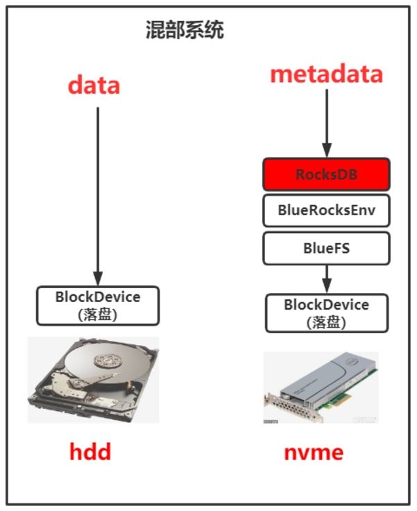
该架构也算是业界较常用的架构之一，但是有一个问题制约该混部架构的发展，即直接基于Ceph社区原生代码使用该架构，性能只比纯机械盘的集群好一倍不到。因此，数帆存储团队对Ceph代码进行了深度分析与改造，最终攻克了影响性能的两个关键瓶颈点：重耗时模块影响上下文以及重耗时模块在IO核心路径，如下图标红所示：
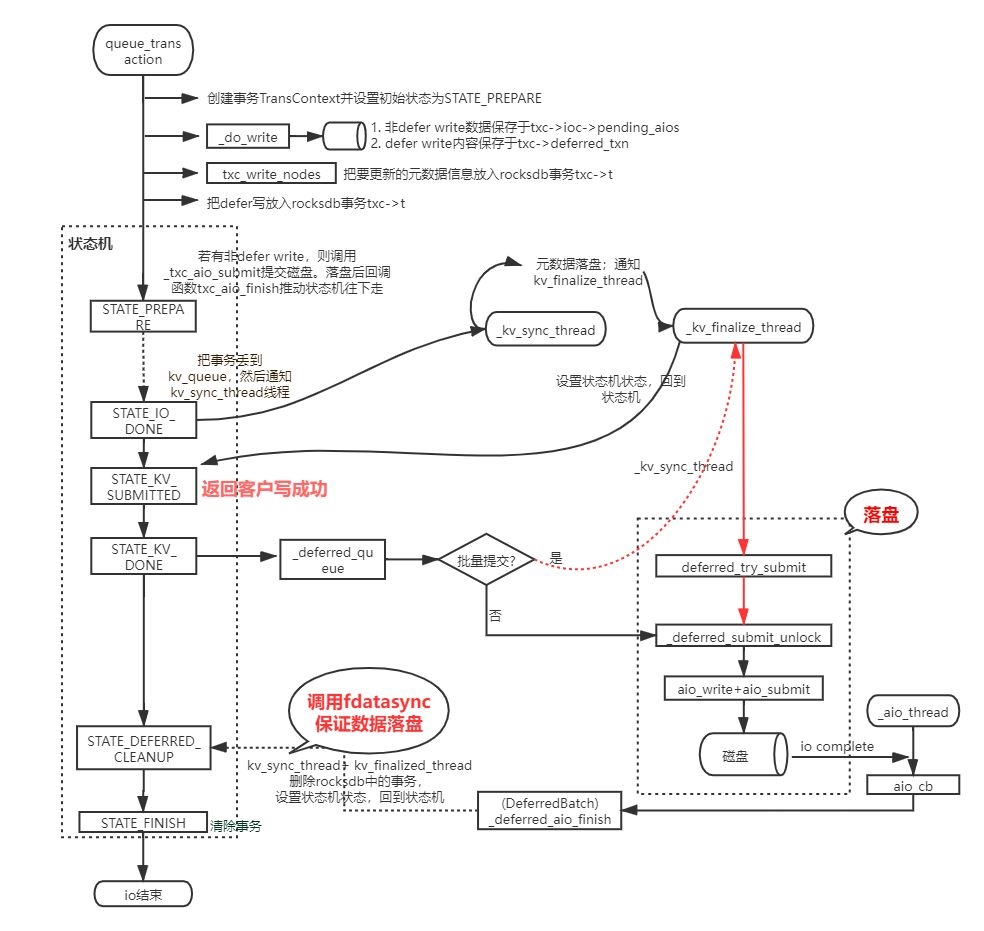
经过数帆存储团队的性能优化之后，该混部系统性能相较于社区原生版本有了显著提升，在资源充足的情况下，IO时延以及IOPS等性能指标有七八倍的提升，当资源不足且达到限流后，性能也有一倍以上的提升。
改进三：设计并实现了基于CephFS的全方位性能优化
CephFS作为基本的分布式存储，简单易用是优势，但是在很多场景下存在着性能问题：比如业务代码、数据管理、源码编译造成的卡顿、延迟过高；比如用户删除海量数据目录耗时非常久，有时候甚至要达到数天；比如因多用户分布式写模型导致的共享卡顿问题。这些问题严重影响着用户的使用体验。因此，数帆存储团队对性能问题进行了深入研究与改进，除了上面提到的在混合盘场景下的性能优化，我们在CephFS元数据访问以及大文件删除等多方面都进行了性能优化。
- 在大目录删除方面： 我们开发了大目录异步删除功能：用户在日常业务中，经常会遇到需要删除大目录情况。这些目录一般包含几千万个文件，总容量在数个TB级别。现在用户的常规方式是使用Linux下的rm -rf 命令，整个过程耗时非常久，有时甚至超过24小时，严重影响使用体验。因此，用户希望能提供一种快速删除指定目录的功能，且可以接受使用定制化接口。基于此，我们开发了大目录异步删除功能，这样使得大目录的删除对用户来说可以秒级完成；
- 在大文件IO方面：我们优化了大文件写性能，最终使得写带宽可以提升一倍以上，写延时可以下降一倍以上，具体性能指标如下；
- 在优化用户开发环境git和make编译等都很慢方面：用户在容器源码目录中使用git status非常慢，耗时数十秒以上，同时，使用make编译等操作也异常慢，基于该问题，杭州存储组对该问题进行了细致分析：通过strace跟踪简单的git status命令发现，流程中包含了大量的stat, lstat, fstat, getdents等元数据操作，单个syscall的请求时延一般在百us级别，但是数千个（对于Ceph源码项目，大概有4K个）请求叠加之后，造成了达到秒级的时延，用户感受明显。横向对比本地文件系统（xfs，ext4），通常每个syscall的请求时延要低一个数量级（十us级别），因此整体速度快很多。进一步分析发现，延时主要消耗在FUSE的内核模块与用户态交互上 ，即使在元数据全缓存的情况下，每个syscall耗时依然比内核态文件系统高了一个数量级。接下来数帆存储团队通过把用户态服务转化为内核服务后，性能得到了数十倍的提升，解决了用户卡顿的这一体验；
- 元数据请求时延方面：分析发现，用户的很多请求时延较高原因是open，stat等元数据请求时延较高，因此，基于该问题我们采用了多元数据节点的方案，最终使得元数据的平均访问时延可以下降一倍以上；
应用框架层：覆盖大部分机器学习业务的工具能力
应用框架层主要承担业务落地业务时，使用的框架能力，比如众所周知的TensorFlow框架、分布式训练任务能力、大规模图神经网络能力等等，本章将从TensorFlow资源迁移与大规模图神经网络两块工作讲述团队这块的工作：
TensorFlow与资源迁移
考虑到算力资源的不足， 在2021年，我们采购了一批新的算力，A100的机器， 也遇到了一些问题：
- 资源与社区：
- A100等新显卡仅支持CUDA11，官方不支持CUDA10，而官方TensorFlow只有最新版本2.4以上版本支持CUDA11，而现在音乐用的比较多的TF1.X，源码编译无法解决跨版本问题，Nvidia社区仅贡献Nvidia-TensorFlow支持CUDA11；
- TensorFlow版本间差异较大，TF1.X与TF2.X， TF2.4.0以下与TF2.4.0以上差异很大；
- TensorFlow1.X的社区相关问题，如环境、性能，Google官方不予支持；
- 音乐内部机器学习基础架构：
- RTRS目前仅支持TF1.14，目前针对TF1.X，Google不支持CUDA11，Nvidia官方出了Nvidia-TensorFlow1.15来支持，但是这种并不属于官方版本，内部代码更改太多，风险较大；
- 针对目前各个业务组内维护的Java jni 模型推理的情况，如果需要使用新硬件进行模型训练，需要支持至少CUDA11的对应的TF版本（2.4以上）；
- 模型训练侧代码， 目前版本为TF1.12-TF1.14之间；
基于这样的背景， 我们完成机器学习平台TF2.6版本的全流程支持，从样本读写、模型训练、模型线上推理，全面支持TF2.6，具体的事项包括：
- 机器学习平台支持TF2.6以及Nvidia TF1.15两套框架来适配Cuda11；
- 考虑到单A100性能极强，在大部分业务的模型训练中无法充分发挥其性能。因而，我们选择将一张A100切分成更小的算力单元，需要详细了解的可以关注nvidia mig 介绍，可以大大提升平台整体的吞吐率；
- mig的好处，能够大大地提升平台整体的吞吐率，但是A100经过虚拟化之后，显卡实例的调度以及相关的监控也是平台比较复杂的工作；
- 离线训练升级到较高版本之后，推理框架也需要升级，保证兼容TF1.x与TF2.x的框架产生的模型；
通过完成上述事项， 在完成A100 MIG能力的支持之后， 整体从训练速度、推理改造后的数据来看，大大超出预期，离线任务我们使用新显卡1/3的算力可以在常规的任务老版本算力上平均有40%以上的训练速度提升，最高有170%以上的提升，而线上推理性能，通过适配2.6的TensorFlow版本，在保证完全兼容TF1.X的线上版本的同时，获得20%以上的推理性能提升。在A100切分实例上，我们目前提供2g-10gb、3g-20gb、4g-40gb三类显卡实例，覆盖平台日常的任务类型，其他指标如稳定性均大大超过老版本算力。
大规模图神经网络
随着从传统音乐工具软件到音乐内容社区的转变，云音乐依托音乐主站业务，衍生大量创新业务，如直播、播客、K歌等。创新业务既是机遇也为推荐算法同学带来了挑战：用户在创新业务中的行为稀疏，冷启动现象明显；即使是老业务也面临着如下问题：
- 如何为新用户有效分发内容；
- 将新内容有效分发给用户；
我们基于飞桨图学习框架PGL，使用全站用户行为数据构建用户的隐向量表征，刻画用户之间的隐性关系，提供个性化召回、相似挖掘、lookalike 等功能；在实践中，我们遇到了各种难点挑战：
- 难点一：存在多种行为对象、行为类型，用户行为数据量大，近五亿节点（包含用户、歌曲、mlog、播客等），数百亿条边的数据规模；
- 难点二：模型训练难，模型本身参数量巨大，需要大量算力资源来保障模型的训练；
- 难点三：在企业界，落地像图神经网络这类技术时，需要综合考虑成本与收益，其中成本主要包括两个方面：架构改造成本与计算资源成本；
为解决这些难点，我们基于网易云音乐机器学习平台落地了以下具体的技术方案：
- GraphService提供类似于图数据库，基于海量的弱终端资源，提供巨图存储与采样的服务、通过巨图数据加载优化策略，满足不同规模模型以及不同采样方法；
- 通过k8s MPI-Operator实现了超大规模图存储与采样，是实现通用构图方案可用易用必要的基础组件；
- 整合k8s TF-Operator 与MPI-Operator解决模型分布式训练中的图存储、采样与分布式模型计算的问题；
- 通过k8s VK资源与cephfs实现计算存储资源弹性扩容
训练过程会消耗大量计算存储资源，训练结束，这些资源就会闲置，通过cephfs实现存储资源动态扩缩容；通过virtual-kubelet等闲置计算资源引入机器学习平台，实现弹性扩容，按需计费，大大减少大规模分布式任务的训练成本；
功能层：化零为整与化整为零的艺术
功能层主要是机器学习平台做为一处机器学习基础设施，去支持整个机器学习过程的全生命周期，在云音乐，一个标准的机器学习流，主要包括四个部分：
- 数据样本服务；
- 特征算子开发与配置开发；
- 模型训练与离线评估；
- 模型服务开发与部署、持续更新；
而通过整合机器学习流中覆盖的各个部分的不同系统，端到端机器学习平台目的是为了更高效、方便的为算法开发以及相关的用户提供各种能力的支持。而在核心任务之外，机器学习平台也会抽离部分阶段的能力，为包括通过模型服务、模型共享等相关工作提供部分组件的支持；接下来会分别从端到端机器学习平台与ModelZoo两个项目来分享我们在这块的工作：
端到端机器学习平台：化零为整
端对端机器学习平台是通过机器学习平台，抽象出一套能够打通样本处理、特征存取、线上服务开发、代码/数据版本控制系统、线上服务系统推送、abtest系统标准化流程，抽象出相应地接口，为各个机器学习子系统集成至机器学习平台，复用包括容器化、系统互联、弹性资源、监控等核心能力。端对端机器学习平台目的的愿景是提供一种以模型为中心的机器学习开发范式，通过元数据中心，将整个生命周期的相关元数据关联至模型任务，以模型的视角去串联整个机器学习生命周期的各个阶段。为了达到这个目的，我们在以下几个方面完成相应的工作：

样本服务
数据样本收集与预处理，主要涉及大数据系统的对接，早期而言， 数据样本的开发并没有相关的系统支持， 业务同学自己写Spark、Flink任务，进行样本收集、清洗、预处理等过程。因而，联通系统，仅需要机器学习平台本身支持用户开发样本任务的联通，音乐内部业务上游主要使用两部分的数据开发平台：猛犸与自研的Pandora与Magina，在机器学习平台上，支持任务级别的依赖，同时考虑到其他任务的多样性，我们在每一个容器中，提供大数据框架的接入能力，支持Spark、Flink、Hadoop等基础框架。
而通过一段时间的迭代之后，我们通过约束标准的特征使用方式，基于网易云音乐基础的存储套件Datahub，提供一套标准的FeatureStore。在此基础上，标准化业务的样本生成逻辑，用户仅需修改少部分的样本生成模板中的逻辑，即可完成一个标准化的业务样本服务，为用户提供实时、离线的样本生成能力。
特征算子开发与配置开发
特征算子开发与配置开发，是一个标准的机器学习流程必须的过程，也是比较复杂的过程，是样本服务的前置逻辑。在云音乐， 线上推理框架，简称RTRS，抽象出专门的特征处理模块，提供给用户开发特征算子、使用特征算子生成的逻辑。

用户在原始数据处理时通过特征计算DSL语音配置已有算子或者自定义特征处理逻辑，编译成相应地feature_extractor包
<feature_extract_config cache="true" log_level="3" log_echo="false" version="2">
<fea name="isfollowedaid" dataType="int64" default="0L" extractor="StringHit(``item_id, ``uLikeA.followed_anchors)"/>
<fea name="rt_all_all_pv" dataType="int64" default="LongArray(0, 5)" extractor="RtFeature($all_all_pv.f, 2)"/>
<fea name="anchor_all_impress_pv" dataType="int64" default="0" extractor="ReadIntVec($rt_all_all_pv, 0)"/>
<fea name="anchor_all_click_pv" dataType="int64" default="0" extractor="ReadIntVec($rt_all_all_pv, 1)"/>
<fea name="anchor_all_impress_pv_id" dataType="int64" default="0" extractor="Bucket(``anchor_all_impress_pv, ``bucket.all_impress_pv)"/>
<fea name="anchor_all_ctr_pv" dataType="float" default="0.0" extractor="Smooth(``anchor_all_click_pv, ``anchor_all_impress_pv, 1.0, 1000.0, 100.0)"/>
<fea name="user_hour" dataType="int64" extractor="Hour()" default="0L"/>
<fea name="anchor_start_tags" dataType="int64" extractor="Long2ID(``live_anchor_index.start_tags,0L,``vocab.start_tags)" default="0L"/>
</feature_extract_config>
在线上服务或者样本服务里使用，提供给模型引擎与训练任务使用，具体详情可关注云音乐预估系统建设与实践这篇文章
模型服务开发与部署
目前网易云音乐线上的核心业务，主要使用模型服务框架是RTRS，RTRS底层基于C++开发的，而C++的相关应用开发，存在两个比较麻烦的地方：
- 开发环境： 总所周知，机器学习相关离线与线上操作系统不匹配，如何以一种比较优雅的方式提供用户模型开发同时也支持服务开发的能力？ 网易云音乐机器学习平台底层基于K8S+docker，提供定制化的操作系统；
- 依赖库、框架的共享：在进行rtrs服务的开发时， 环境中需要集成一些公共的依赖，比如框架代码、第三方依赖库等等，通过机器学习提供的统一的分布式存储，只需要挂载指定的公共pvc，即可满足相关需求；
模型的部署可简单区分为两个过程：
- 首次模型的部署：首次模型的部分比较复杂，涉及到线上资源申请、环境安装配置等流程，并且在首次模型部署时，需要统一拉取RTRS服务框架，通过载入业务自定义逻辑so包以及模型、配置、数据文件，提供基础的模型服务能力；
- 模型、配置、数据的更新：在首次模型部署之后，由于时间漂移、特征漂移以及种种其他原因，我们会收集足够多的训练样本重新训练模型或者更新我们的配置、词典等数据文件，这个时候，我们通常不是重新发布模型推理服务，而且去动态更新模型、配置、包括词典在内的数据文件等等；
而机器学习平台通过标准化的模型推送组件，适配RTRS的模型部署以及线上服务的更新。
端对端机器学习平台的收益
减少用户参与，提升效率
端对端机器学习平台将核心业务的主要流程通过模型关联在一起，以模型为中心视角，能够有效地利用上下游的基本信息，比如在样本特征，可以通过复用样本服务中生成的特征schema的信息，减少在模型训练、模型推理时的特征输入部分的开发，能大大减少相关的开发工作，通过我们在某些业务的实验，能够将业务从0开发的过程花费的时间从周级别到天级别。
机器学习流程可视化与生命周期数据跟踪
端对端机器学习平台通过统一的元数据中心，将各个阶段的元数据统一管理，提供机器学习流程可视化能力：
 并且通过各个阶段标准化的元数据接入， 能够有效踪机器学习过程各个阶段的生命周期数据以及资源使用情况，如样本使用特征、样本拼接任务的资源使用情况、模型最终上线的各个特征处理方式、模型训练的超参等等：
并且通过各个阶段标准化的元数据接入， 能够有效踪机器学习过程各个阶段的生命周期数据以及资源使用情况，如样本使用特征、样本拼接任务的资源使用情况、模型最终上线的各个特征处理方式、模型训练的超参等等：

ModelZoo： 化整为零
业务背景
下图是对各个公司的机器学习业务模型上线占用时间的一个调查数据的说明，大部分的数据科学家、算法工程师在模型上线上花费过多的时间：

ModelZoo功能分层
符合我们在云音乐内部业务落地的认知，而除了前面我们讨论的端到端的标准化的核心业务的解决方案， 云音乐内部一些算法团队也会对其中的某些功能组件，有很强的需求，比如我们的通用模型服务，用户希望通过易用、高效地部署方式去构建可在实际场景中使用的通用模型，这个就是ModelZoo的由来，在这个之上，我们希望后续通用模型能在流程上打通再训练、微调，将能公开的已部署的模型，直接提供给有需求的业务方，Model的基础功能分层如下：

- 资源层：资源层覆盖机器学习平台所有任务资源，包括GPU、VK资源、阿里云ECI资源；
- 算法层：覆盖包括CV、NLP、以及其他有通用能力需要的能力模块如faiss分布式能力；
- 交付层：主要包括SDK、接口两种交付方式，其中SDK模块用于提供给算法集成开发过程的场景使用，接口用于无算法集成的场景下使用，提供用户自定义模型接口构建、接口提供服务等核心功能；
- 任务层：提供包括推理、微调、重训等核心功能，通过SDK功能、接口功能提供；
ModelZoo进展
ModelZoo到目前为止，我们的工作大概在这几方面：
- 通过K8S支持Serveless的能力，使用合适的镜像如TF Serving、TorchServe，即可对模型做通用的模型服务；
- 基于机器学习平台开，集成在模型部署组件中，提供组件部署通用模型推理的服务；
- 通过我们交付的组件，用户仅需要通过指定模型包（包括部署的一些基础元信息），来部署相应的服务。如果需要额外的前后处理，也支持在torchserve中自定义前后处理的逻辑；
- 在镜像层通过引入mkl编译的镜像、调整session线程数等核心参数，在高qps场景上，rt减少30%；
- 调研openvino、triton，目前由于业务已满足需求以及人力需求，暂无进一步投入，有相关经验的欢迎分享；
总结
以上就是网易云音乐机器学习平台的过去的一些工作，回顾一下，我们分别从“资源层”、“底层框架层”、“应用框架层”、“功能层”来分享相关的部分工作以及进展，机器学习平台因为覆盖的面很广泛，工作看起来比较杂乱，覆盖各种不同的技术栈，并且各项工作的挑战与目标都不一样，还是很有意思的。
本文发布自网易云音乐技术团队，文章未经授权禁止任何形式的转载。我们常年招收各类技术岗位，如果你准备换工作，又恰好喜欢云音乐，那就加入我们 staff.musicrecruit@service.netease.com 。

机器学习平台在云音乐的持续实践
0 刀耕火种的日子

19年3月，当时刚来云音乐，本来是在大规模机器学习上，去落地一些业务，但是发现，机器学习基础设施的暴力与原始，几乎把我一波送走：
- 若干台物理机登录， 每一个业务团队分配若干台物理机，基础环境、机器学习框架都需要业务团队自己负责；
- 没有开发调度的区别， 任务开发完成后，手动在环境里的任务crontab上去更改，调度起任务；
- 几乎没有任务监控的能力，很多时候我们去溯源一些运行的任务时，发现很多任务大半年没有在运行了，业务团队也不清楚；
- 对新人极其不友好， 没有统一培训新人的标准，同一个团队内也没办法建立好标准；
- 业务算法改造意愿不强，因为并没有特别好的替代品；
- 因为没有基建标准的缘故，各个团队去发布模型也不一致，有的团队，通过内部git进行发版来更新，也有拷贝到线上集群的指定路径，不可能管理起来，也没有办法保证模型服务更新成功的质量；
基于这些致命的问题， 我们判断，如果再不做改变，必然会影响后续业务的发展。但改变很多时候，在一些公司，或者在一些公司的某些个阶段本身就是一件很难的事情。
1 先干吧
尽管问题我们都清楚， 刀耕火种的日子应该早点摒弃，我们应该尽早脱离这种状态。但是云音乐是一个以业务为主导的公司， 很难提前投入相关的人力去做这样短期内没办法看到好处的工作。很多业务为主导的公司， 后者说前期在业务增长的公司， 在技术架构层面上，遇到问题时，会习惯性地先找出一些取巧的解法去规避他，直到无法规避时，才会从技术架构体系上去优化。所以， 老板的一句话就是“先干吧”，虽然对我们来说，并没有实际的支持， 人力也未到位，业务也不配合， 可能只有一句口号”技术体系建设“。 我们几个小伙伴却憋着气，想做一些有意思的东西。
2 团结一切可以团结的力量
老板一句”先干吧“， 团队几个小伙伴，憋着气想要做出改变当时境况的东西，但是”理想丰满
、现实骨干“。当时，团队连我在内只有3个人力， 还各个背景不同，有算法出身、做过一些分布式框架的我， 有负责模型服务开发的，有纯做后台开发的，就是没有系统化研究过机器学习平台的。
所幸，当时网易内部有一些相关机器学习团队，我们进行了亲切友好地交流（纯偷师）。其中，我印象最深地就是伏羲实验室赵增负责的丹炉，支撑了整个伏羲的机器学习业务，包括后来在游戏上深耕的超大规模强化学习的应用。 虽然，丹炉支撑的业务和云音乐的业务千差万别， 但是从架构体系来说，丹炉可以说是早期云音乐Goblin机器学习平台的老师。在我们一穷二白，完全没有上路的时候，给了我们方向：ML Infra base K8S。
然后，我们找了云计算的新勇，期望他们帮我们改造我们的资源管理、调度能力，给我们培训到底k8s是啥、kubeflow是啥、那些机器学习场景下的operator又是啥。 新勇是一个很nice的同事， 我印象中，当时由于GPU主机还是以物理机的形式， 我们可操作GPU主机好像只有三台。在这三台主机上，新勇团队帮我们搭起最简单的k8s集群，然后我们又攒了10多台大数据集群淘汰下来已经过保的CPU机器，找了王盼负责的存储团队，帮我们搭了一个ceph集群。
至此，我们终于第一次以容器化集群的形式，管理起来我们的存储与计算资源，可以开始开发了。
3 解决什么问题
在开始说要干机器学习平台之前，其实之前就有一个版本， 后来我们同学在公司内分享，称作为”石器时代“。大概就是一个平台，支持一些组件的拖拉，然后组件内通过java开发，构建DAG，完成相应的功能。从开发完成，发布到之后的几个月，用户量为0。后来我们开始干之前，前面也提到和各个机器学习团队有过深入地交流，我们摒弃了之前花式的拖曳与低代码逻辑， 确定了当时机器学习平台需要解决的核心问题：
- 开发模型过程中遇到的环境、数据链路、开发便利性问题；
- 如何将开发环境中完成的模型任务，高效、简单地调度起来，解决包括基础依赖、日志、重跑等核心问题；
针对问题1，以往物理机开发的模式极其暴力， 每个人在自己的目录上安装环境，或者通过anaconda的虚拟化环境来支持，但是在一些公共的工具体系，比如大数据环境上，很容易出现问题，而有了Docker之后，变得不再是问题。我们将大数据工具比如hadoop、spark环境，Python开发环境Anaconda、JupyterLab，常见的机器学习框架如TensorFlow、PyTorch，以及SSH这种基础的服务，打包到若干个基础镜像。虽说是基础镜像，但是有过机器学习镜像打包经历的人，应该知道是一个什么样的体验，随便一个包含上面我提到的环境的TensorFlow某个版本的基础镜像就到了10多GB。我记得当时至少在两周内， 我和军正的电脑一刻不停的打镜像，解决各种比如安装配置命令有错，没办法访问墙外的资源等等非技术问题，每天风扇呼呼响，打包一个push一个，然后删除，继续打包下一个，有的时候打包时间过长，就把电脑放到公司，等第二天来看。以至于后来，我们都强烈的在Goblin上增加一个commit的功能，去让用户把容器内部的变更固化到镜像中，减少他们来找我们打基础镜像的需求。
本地IDE远程开发
web vscode
JupyterLab
针对问题2，我们的选择是统一化存储、任务流、与容器化组件。其中统一化存储是基础，通过分配给用户对应的pvc卷，来打通任务开发与调度之间的gap，开发环境写好的代码文件，仅需要在调度环境中配置相同的pvc卷，即可调度、访问。容器化组件是没有任务附加逻辑的，他的功能仅仅是向资源池申请指定的资源，然后按配置好的镜像拉动启动的文件，最后，运行配置好的启动文件；而任务流支持和其他功能组件联动，比如对接外部系统的模型推送、多个容器化组件的编排。
4 把业务的机器全卷走
基础功能完成后，经过一段时间的测试， 评估基本上没有啥问题。 我们开始逐步安利业务老大们把任务迁移起来。但是节奏还不能太快。 这个时候，我们只有3个正式人力，3台GPU主机。
一步一步来， 但是现实依然残酷，没有一个业务团队配合，不管如何安利，如何保证。直到音视频实验室小伙伴来找我们借显卡，这里要提一个很有意思的历史背景：当时数据智能部创立之初，我还没有来时，就买了一批显卡，还蛮多的，160张，都归属数据智能部这边，音视频实验室没有，所以来找我们借显卡，然后我们就逐步诱惑他们要不要在我们机器学习平台上来先试试。就这样，音视频成了我们第一个小白鼠，上了我们的贼船。也帮助早期的机器学习平台填了比较多的坑。后来，一个团队迁移，释放出原来他们的GPU物理机，加入到Goblin集群，再迁移一个团队，再释放。保持这样的节奏，李宽、立益、军正、我， 在两个月时间里，迁移完业务团队所有的历史模型训练任务并和业务同学完成验证交付，并且把所有原先业务所有GPU主机都加入到Goblin集群。至此，GPU资源，全部被统一化收入到平台， 我们终于有了平台，去可以在后面尝试标准化地完成一些关于机器学习的工作；
5 时候到了，该报了
前面基本上的功能开发完成之后， 业务也开始迁移上去。但是挑战才刚刚开始， 虽然得益于之前音视频已经在Goblin做了相关的尝试，基础的功能，比如Local IDE 远程开发，基础任务调度，并没有太多的问题。但是任务量上去之后，底层K8S的资源调度能力出现了瓶颈。当时，由于我们团队在大规模上线五分钟、十五分钟级别增伤模型训练任务，整个机器学习平台每天将近4000多次任务调度，最高时有6000、7000。 尤其是在高频率模型更新上， 尽管采取了包括限制namespace、打上专属label等策略，进行资源的限制，也取得了一定的效果。但还是存在问题：经Goblin从调度开始，到pod真正拉起来， 有2-3分钟的延迟，这种级别的延迟在类似于小时更新、日更类别的模型，之前我们都是忽略的。但是在五分钟级别，考虑到模型运算时间有限， 我们没办法容忍，需要一定一定抠时耗：
- 增加一种专门针对高频率更新的文件依赖策略，以往的hdfs上的文件依赖逻辑是文件存在后，且保证两分钟内数据无变化，则为文件已生成完成，而5分钟级别的数据流使用flink落地，可以直接通过文件名识别出数据是否生成（未完成时为.processingXXX），完成时则为正常名字；
- 之前云计算同事，将K8S 集群的API Server从原先的容器上，没考虑到太多并发调度资源的场景，后续将API Server部署到并发处理能力更强的物理机上,能够大大减少API Server请求的时延；
- 未规范使用K8S List接口， 随着历史任务越来越多，List会一次将所有历史任务都请求到， 当List频繁调用，会导致接口被卡住，影响整体调度性能，后续改为watch增量的查看任务，每次请求不会是全量数据；
这段时间， 在稳定性上，我们遇到了很多挑战。 起初，只有靠人力去抗，好多次在周末， 李宽、军正、我都在紧急帮忙解决线上问题，确实那段时间稳定性上的问题给业务体验很不好，很感谢业务的容忍以及反馈， 让我们在一个可接受的阶段内去逐步收敛线上遇到的问题。
6 ML Infra第一步：联通多个系统
单单是机器学习平台本身，定位在离线模型训练。再如何做天花板都很低， 作用很有限， 必须要兼容、联合现有的各个系统，让机器学习平台成为集散地的角色。
在云音乐，一个标准的机器学习流，主要包括四个部分：
- 数据样本收集与预处理；
- 特征算子开发与配置开发；
- 模型训练；
- 模型服务开发与部署、持续更新；
早期， 数据样本收集、预处理过程都有算法自己开发， 后面我们会详细介绍相关工作， 这里我们仅对当时情况做简单的阐述：
数据样本收集与预处理
数据样本收集与预处理，主要涉及大数据系统的对接，早期而言， 数据样本的开发并没有相关的系统支持， 业务同学自己写Spark、Flink任务，进行样本收集、清洗、预处理等过程。因而，联通系统，仅需要机器学习平台本身支持用户开发样本任务的联通，音乐内部业务上游主要使用两部分的数据开发平台：猛犸与自研的Pandora与Magina，在Goblin机器学习平台上，均支持任务级别的依赖，同时考虑到其他任务的多样性，比如容器化任务处理某些样本开发中使用到的附加数据，通过Hadoop 命令push到hdfs的，我们也支持文件级别的依赖，通过文件生成来驱动模型任务的调度；
特征算子开发与配置开发
特征算子开发与配置开发，是云音乐线上推理框架赋予的能力， 线上基本框架，简称RTRS， 其基础架构设计如下：
rtrs基础架构设计示意图
用户在原始数据处理时实现相应逻辑，打成相应的feature_extractor包，然后在线上服务调用相应的算子即可完成数据的转换，喂到模型中计算即可。
模型服务开发与部署
模型服务的开发在云音乐体系相对比较复杂，历史债也比较多， 这里仅阐述目前主要支持的框架RTRS，RTRS底层基于C++开发的，要想将其推广至云音乐全部业务落地， 存在两个比较麻烦的地方：
- 开发环境： 总所周知，机器学习相关离线系统，比较偏向于Ubuntu这类， 相关的技术教程、资源也很多， 而云音乐线上环境为centos，如何以一种比较优雅的方式提供用户模型开发同时也支持服务开发的能力？ Goblin机器学习平台底层基于K8S+docker，我们只需要标准化一个centos的rtrs开发环境镜像即可；
- 依赖库、框架的共享：在进行rtrs服务的开发时， 环境中需要集成一些公共的依赖，比如框架代码、第三方依赖库等等，通过机器学习提供的统一的分布式存储，只需要挂载指定的公共pvc，即可满足相关需求；
RTRS 服务开发环境
模型服务整体架构抽象为两个具体过程：1. 首次服务的部署；2.部署之后，周期性模型的更新：
针对模型服务的部署早期相对比较麻烦， 很多时候都是人工去支持，这块机器学习平台与框架团队参与的不多，不便阐述。
当部署完成之后，涉及到模型的更新， 模型更新其核心流程主要包括以下几个方面：
- 通知线上服务，模型已经训练完成，且经过一定流程检验，符合标准，请准备更新；
- 服务端接到通知后，按通知中夹带的模型相关信息如模型路径去载入模型， 载入完成后，伪造若干相关样本，进行推理计算，完成后若无问题，则将模型服务替换为更新模型提供的服务即可；
7 进化
当很多功能可以通过机器学习平台作为一个入口进行支持之后，自然而然地开始考虑各个子系统的更新迭代，并且在这个基础上通过平台保持统一标准，保证各个子系统的更新不影响到整体机器学习作业流的正常运行。因为各个子系统的复杂性，本文仅对团队负责的相关工作来扩展：
端对端平台共建
端对端最早雏形是机器学习平台上的任务流相关的一个形态，现在在机器学习平台上已经废弃掉了。早期我们的想法是通过机器学习平台，抽象出一套能够打通样本处理、服务开发、打通代码版本控制系统、线上服务系统推送、abtest系统的任务流，抽象出标准化的接口，来提供给各个系统相关同学接入机器学习平台，复用包括容器化、系统互联、弹性资源等核心优势。
我们的思路是优先从底层能力打造自定义Pipeline与自定义Stage，每一个核心逻辑可以通过自定义的Stage标准来接入到机器学习平台，比如样本服务、特征开发等等， 但是后续发现这样的设计虽然能够大大抽象化整个工作流， 增加整个系统的灵活性，但是早期落地重点可能并不是一套灵活的Pipelin和Stage自定义系统，而是快速接入用户背书。所以后面整个设计思路基本上从下到上改变成为从上到下，先暂时不考虑用户需求， 固化用户基于RTRS开发的基本流程，从样本服务、特征算子与配置开发、模型训练、模型推送等固化成基础的业务系统，然后通过打通各个业务系统，来达到标准化整个流程的目的。

自上而下与自下而上
自下到上的与自上到下是两种不同的开发范式， 站在复盘的角度上，其实蛮有意思的。有点类似于《笑傲江湖》里的华山派的气宗与剑宗。前者注重先修内功后修招式，后者更注重招式。前者更讲究架构设计，从底层思考兼容各种不同业务的架构，后者更注重实战，先解决好业务需求，最简化业务范式，抽象出平台。
其实不仅仅是开发模式上，自上而下与自下而上的想法在很多方向上都是成立的。当我们推进一件事情时，需要综合考虑当前情况，是更注重短期业务产出还是更长远架构的稳定性是决定采用那种模式的关键因素。
业务可解释性
平台本身能力的升级无非在于稳定性、成本、易用性等基础方面，而统一标准化入口，各个子系统的集成接入，却可以给我们带来更多增值服务。
数据理解能力，是我们平台可以期待的增值服务之一。在我们说服业务接入平台，标准化之后，我们总该给他们更多的原来做不到的能力。
流程可视化
数据理解能力
性能影响体验
从0到1的接入，很多时候是功能性的需求，很多工作存在即满足目标。但是，当越来越多的用户开始使用时，面对各种各样的场景，会有不同的需求， 如性能。
例如CephFS为机器学习平台提供了弹性的、可共享的、支持多读多写的存储系统，但开源CephFS在性能和安全性上还不能完全满足真实场景需求：
- 数据安全性是机器学习平台重中之重功能，虽然CephFS支持多副本存储，但当出现误删等行为时，CephFS就无能为力了；为防止此类事故发生，要求CephFS有回收站功能；
- 集群有大量存储服务器，如果这些服务器均采用纯机械盘，那么性能可能不太够，如果均采用纯SSD，那么成本可能会比较高，因此期望使用SSD做日志盘，机械盘做数据盘这一混部逻辑，并基于此做相应的性能优化；
- 作为统一开发环境，便随着大量的代码编译、日志读写、样本下载，这要求CephFS既能有较高的吞吐量，又能快速处理大量小文件。
详细地性能优化实践见网易数帆存储团队与云音乐机器学习平台合作产出的机器学习平台统一化分布式存储 Ceph 的进阶优化
监控方案日益完备
之前我们的监控系统主要依赖轻舟服务提供，很多功能依赖轻舟提供给我们的能力。但是轻舟定位可能是更通用的云计算平台，针对于机器学习本身很多定制化需求无法得到快速响应。
随着越来越多的任务运行，以往轻舟的监控方案能力明显无法满足，我们与云计算新勇团队联合独立一套专属的监控方案，用来详尽地监控集群情况： Prometheus 检测到的异常发送至配置中定义的 Alertmanager，Alertmanager 再通过路由决策决定发送给哪些报警后端，所以集群采集的数据均在统一的数据存储上按标识保存，业务接入直接使用即可，无需关注。
整个模块主要包括三个部分：
- Cluster Monitoring Operator：管理报警消息、集群以及报警消息接收人之间的关系；
- Querier：负责跨集群查询监控数据，后端存储对接网易内部产品；
- AlertManager Webhook Server：接收 AlertManager 的报警信息，并根据接收人的配置将报警消息发送至对应的消息接收人，支持邮件、Popo 和短信的通知方式。
业务可根据需要接入自定义的报警后端还可以使用 Webhook 接口来进行开发。目前网易内部常用的报警后端包括邮件、短信、Popo、邮件、Stone、易信、电话，运维部的通知中心暴露了接入这些的通道的。

而平台可以通过相应的接口，集成Grafana监控能力，并能够快速制定业务模块展示相关监控信息。

某个开发容器：

调度namespace监控：

某个GPU物理节点监控：

更多类型资源支持
A100 MIG
采购的一些A100机器，但是在我们内部的大部分推广搜场景，并不需要如此强大的算力，这里采用了Nvidia的MIG能力，将单张卡拆开成多个GPU实例，给到不同业务使用。
然后现实比较残酷，无力吐槽的是， A100不支持Cuda10，一家的旗舰产品竟然不能软件向下兼容， 而以往在集群上的任务都是基于Cuda10跑的，要想使用新版本的显卡，必须要兼容Cuda11，英伟达还稍微有点良心的是有一个Nvidia-TensorFlow1.15，不过总归不是官方。而Google的TensorFlow在这些上就更麻烦了，几乎每个版本，接口都有差异，大部分企业内部都是使用TF1.X中的某个版本作为稳定版本，各种接口的不适应，做过平台相关工作的人应该能理解这里的工作量。哎，对这类公司真的是无力吐槽，对社区太强硬了。真的希望在硬件、软件上都能和英伟达还有TensorFlow扳手腕的玩家，引入一些竞争，对社区用户更友好一些。
Visual Kuberlet资源
因为网易内部有很多资源属于不同的集群来管理，有很多的k8s集群， 杭研云计算团队开发kubeMiner网易跨kubernetes集群统一调度系统，能够动态接入其他闲置集群的资源使用。过去一年多，云音乐机器学习平台和云计算合作，将大部分CPU分布式相关的如图计算、大规模离散和分布式训练，迁移至vk资源，在vk资源保障的同时，能够大大增加同时迭代模型的并行度，提升业务迭代效率；


相关技术细节见： 降本增效黑科技 | kubeMiner 网易跨kubernetes集群统一调度系统。
阿里云ECI；
CPU资源，我们可以通过kubeMiner来跨集群调度，但是GPU这块，基本上整个集团都比较紧张，为了防止未来某些时候，需要一定的GPU资源没办法满足。我们支持了阿里云ECI的调度，感谢集团云基建相关的合作，可以以上面VK类似的方式在我们自己的机器学习平台上调度起对应的GPU资源，如下是机器学习平台调用阿里云ECI资源，后续会集成在平台上。
8 不仅仅是平台
大规模机器学习
大规模图神经网络与隐性关系链共建
IP画像
9 未来
协助完成构建更全面的机器学习基础能力
协助推进线上服务新架构体系演进（cpu->gpu）
推进新架构体系演进（cpu->gpu）
底层能力梳理
当平台越来越多被第三方团队使用之后，我们有一个想法，能够有一套接口标准，能够将
为机器学习量身定做的ops工具：cml & dvc
动机
写这篇文章初衷是最近工作在做一些关于机器学习流程化的工作。现阶段，算法上的创新一天一个样，很多时候，算法同学会去试， 如何能搞提升较高的效率， 每个算法同学的手段都不同，回想计算机科学发展至今天，从野蛮生长到模块化、流程化、标准化。机器学习无外如是。而最近工作涉及到关于mlops相关的事情，其难度很大，不在乎技术本身，当中涉及到太多的以往的技术债。很难去设计本来mlops应该做的东西，另外在某个微信群里讨论，算法同学应该怎样增加工程能力

其实个人认为算法相关的工程能力也不是去一定专注model service，写部署服务这些，个人认为凡是提升算法工程当中的效率，皆可以算作工程能力。基于这两个原因以及自己的职业规划，细了解了开源相关的工作，窃以为开源虽然有时候很难落地企业实际场景，但是其思想很纯粹， 值得我们去学习，这一系列的文章应该会比较多，今天先介绍cml 和dvc。
cml 第一次尝试
git clone https://github.com/burness/example_cml
定义一个train-my-model的workflow：
name: train-my-model
on: [push]
jobs:
run:
runs-on: [ubuntu-latest]
container: docker://dvcorg/cml-py3:latest
steps:
- uses: actions/checkout@v2
- name: cml_run
env:
repo_token: ${{ secrets.GITHUB_TOKEN }}
run: |
pip install -r requirements.txt
python train.py
cat metrics.txt >> report.md
cml-publish confusion_matrix.png --md >> report.md
cml-send-comment report.md
几个关键点：
- 定义一个train-my-model的工作流，该工作流在代码被push到仓库当中任一分支时触发；
- 启动dvcorg/cml-py3:latest 容器，使用action/checkout@v2，拉取项目源码（这个是在github专门提供的机器上完成的，github hosted runner和self hosted runner的差异）；
- 从requirements.txt安装项目所需python包，运行train.py， 并将结果(metrics.txt, cufusion_matrix.png)重定向到report.md,然后将report转换为下图的评论；

修改代码当中模型某一参数后， 提交后，触发该工作流：

查看任意工作流的日志记录：
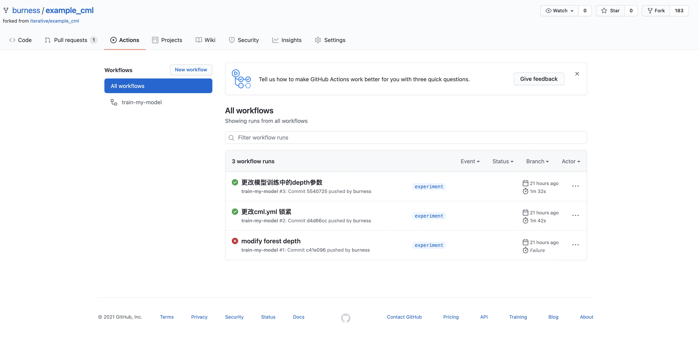

pip install -r requirements.txt

python train.py

dvc
dvc demo演示
第一节介绍了基于github actions，如何去做持续机器学习的工作流，算是一个简单的demo，接下来演示，当训练数据过大时，github无法使用时，应该如何处理，这里我们先做个演示，后续再来讲解。
先安装个dvc
pip install dvc
dvc init 有个报错
ERROR: unexpected error - 'PosixPath' object has no attribute 'read_text', 这里后面遇到experiments，又跳转会pip安装，并且卸载 pathlib即可: pip uninstall pathlib.
改用安装包

git clone https://github.com/burness/mlops_tutorial2
在google 云硬盘上创建一个目录， 复制folders之后的字段
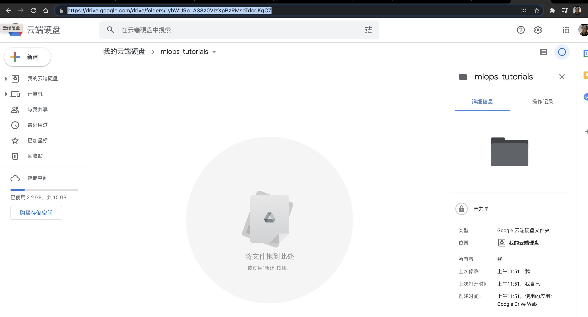
dvc remote add -d mlops_toturial2 gdrive://1ybWU9o_A38z0VIzXpBzRMsoTdcrjKqC7
commit and push
运行代码get_data.py， 下载需要使用的数据文件

运行dvc add data.csv
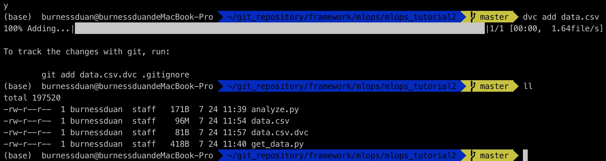
commit and push：

dvc 推送数据到google drive：

由于是第一次登陆， dvc需要你将图上链接粘贴到浏览器，然后得到一个验证码，复制进来，然后就开始数据push：

名字有一个变化：

因为我在公司，可以看外网资料， 这边没有两台电脑，为了方便演示， 我从github上clone项目代码到另一个目录:

dvc pull:

dvc 功能详解
数据与模型版本管理：
如前面一小节里， 我们dvc add data.csv， 生成data.csv.dvc， 那么我们看下对应dvc里面的内容：
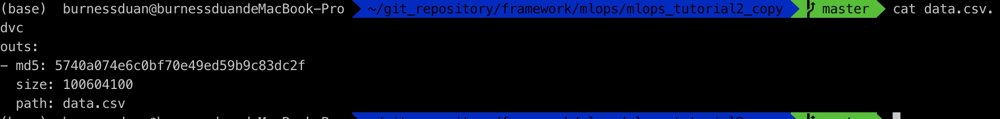
那么，我们现在对数据 做一些更改，删除两行数据后，重新dvc add:
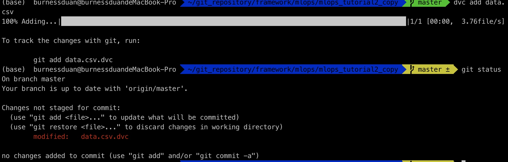

git 提交， dvc push:

我们到google drive上看， 又多了一个版本：

到现在为止， 我们有那个dataset， 怎么转回到之前的那个数据集呢？先git checkout 某个版本，然后dvc checkout即可

我们的数据就回来了，更好地一种是通过branch 来管理，这里就不尝试了，大家可以试试。
数据、模型访问
dvc list https://github.com/burness/mlops_tutorial2可以直接列出，项目当中使用dvc保存的数据文件，而注意这些文件并没有保存在github上。

dvc get https://github.com/burness/mlops_tutorial2 data.csv，可以在任意路径来download数据：

其他命令，如dvc import可以具体去看相关帮助信息了解；
数据结合pipeline
前面演示了如何使用dvc管理你的dataset文件，当然model文件也可以同样管理，但是这还不够，接下来会演示dvc如何保存数据的pipelines，在演示之前，我们拿到演示需要的代码:
wget https://code.dvc.org/get-started/code.zip
unzip code.zip
rm -f code.zip
安装数据处理所需的依赖：
pip install -r src/requirements.txt
运行命令：
dvc run -n prepare \
-p prepare.seed,prepare.split \
-d src/prepare.py -d data/data.xml \
-o data/prepared \
python src/prepare.py data/data.xml
将数据文件按对应参数，切分成train.tsv与test.tsv：
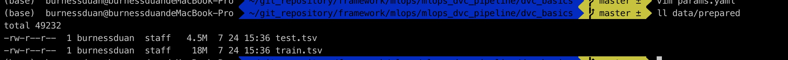

对应dvc.yaml里内容记录：
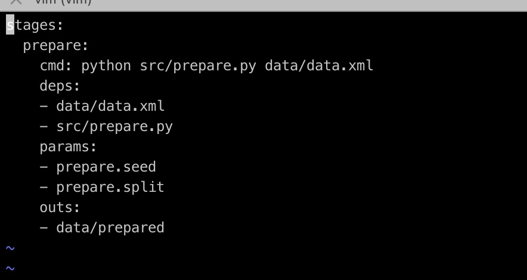
下一步，将prepare的数据进行特征处理：
dvc run -n featurize \
-p featurize.max_features,featurize.ngrams \
-d src/featurization.py -d data/prepared \
-o data/features \
python src/featurization.py data/prepared data/features
yaml文件如下：

继续增加训练过程:
dvc run -n train \
-p train.seed,train.n_est,train.min_split \
-d src/train.py -d data/features \
-o model.pkl \
python src/train.py data/features model.pkl
相关产出：

dvc.yaml文件如下：

接下来只需要执行dvc repro，即可重现dvc pipeline：

我们修改下params里面的参数split:0.20->0.15, n_est:50->100:

最后dvc dag:
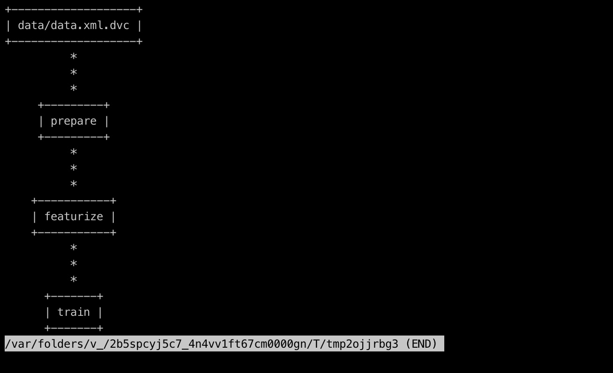
pipeline与metric、parameter、plots结合
继续上面的演示来， 我们构建如上图的一个pipeline之后，接下来做模型的评估， 其中-M指定该文件为metric文件, --plots-no-cache 表明dvc不cache该文件：
dvc run -n evaluate \
-d src/evaluate.py -d model.pkl -d data/features \
-M scores.json \
--plots-no-cache prc.json \
--plots-no-cache roc.json \
python src/evaluate.py model.pkl \
data/features scores.json prc.json roc.json
dvc.yaml又增加evaluate过程, 其中evaluate生成对应的score.json, prc.json, roc.json：

查看score.json：

dvc plots modify prc.json -x recall -y precision
dvc plots modify roc.json -x fpr -y tpr

运行dvc plots show:

修改params.yaml中的max_features=1500, ngrams=2。
重新运行整个pipeline：
dvc repro
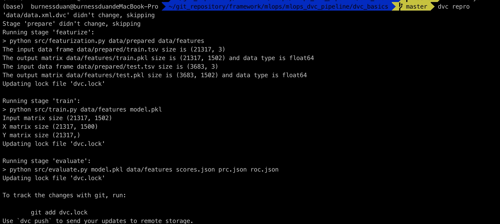
git保存&提交：
git add .
git commit -a -m "Create evaluation stage"
再次修改params.yaml中的max_features=200, ngrams=1， 运行整个pipeline：


dvc plots diff画出不同参数版本的效果差异：

dvc与experiments
在dvc中，使用experiments来构建不同实验组，来进行超参的调试：
dvc exp run --set-param featurize.max_features=3000 --set-param featurize.ngrams=2将max_features配置为3000， 并且运行整个pipeline：

对比实验：
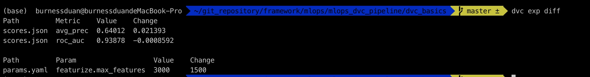
缓存实验队列：
dvc exp run --queue -S train.min_split=8
dvc exp run --queue -S train.min_split=64
dvc exp run --queue -S train.min_split=2 -S train.n_est=100
dvc exp run --queue -S train.min_split=8 -S train.n_est=100
dvc exp run --queue -S train.min_split=64 -S train.n_est=100
开始运行， 其中并行任务为2， 这里遇到个小插曲，改用pip安装即可，写在pathlib即可：
dvc exp run --run-all --jobs 2
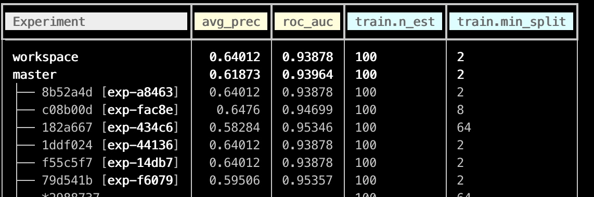
我们看到最好的auc 效果为79d541b， 实验id为exp-f6079， 我们将这个持久化，并且查看现在score.json：

dvc push 保存至远端
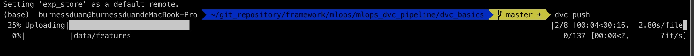
这里我push失败dvc exp push gitremote xx， 应该是和我项目git remote前后不一致相关，，dvc exp pull gitremote xxx ，小问题， 这里不影响 不做过多计较；
##总结
不知道大家有没有把文章看完，很长（后续应该还有cml和dvc其他方面的实践，比如self-hosted runner， 太长了就拆开）。不过归根到底，无非就是那么几块东西：
- 如何将你的算法代码、数据、配置、模型、实验管理起来；
- 将你所管理的信息，能够分享、复制、快速复现；
- 所有的流程都可以记录，可以版本管理；
文章上面相关的技术工作是iterative.ai/这家公司的成果。虽然无法直接拿到企业中使用，但是其中的思想以及设计理念值得学习。接下来的文章，我将参考他们的设计思想，试着去设计符合企业界的mlops。 有兴趣，欢迎讨论。


Spectral Clustering
- Graph Partitioning
- Spectral Graph Partitioning
- Spectral Clustering Algorithm
- Motif-Based SPectral Clustering
- Summary
Graph Partitioning
何谓graph partitioning, 如下图，给定无向图\(G(V,E)\)， 将这些节点分为两个组：

逻辑很简单，但是难点在于：
- 如何定义一个尺度，来保证图的切分是合理的：
- 组内成员连接尽可能多；
- 组与组之间连接尽可能少；
- 如何高效地识别这些分区；
Criterion
Cut(A,B): 如下图，图当中，两个点分别在两个分组的边的数量；
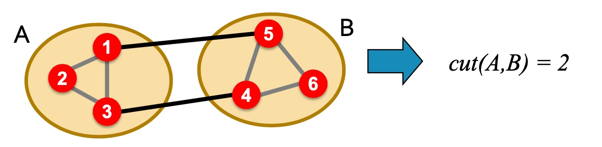
Minimum-cut
最小化图分组间的连接（如果有权重，则考虑权重）：
\[arg min_{A, B}\ Cut(A,B) \]这样会存问题：
- 仅仅考虑图当中分组的外部连接；
- 未考虑图中分组的内部连接；
因此，在下面图中，会出现，假如是minimum cut不是optimal cut
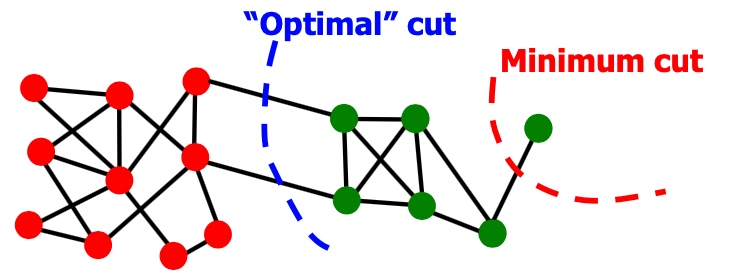
Conductance
与Minimum-cut逻辑不一样， Conductance不仅仅考虑分组间的连接， 也考虑了分割组内的“体积块”， 保证分割后得到的块更均衡，Conductance指标如下：
\[ \phi(A, B)=\frac{cut(A,B)}{min(vol(A), vol(B))} \]其中\(vol(A)\)指分组块A内节点所有的权重度之和；
但是，得到最好的Conductance是一个np难题。
Spectral Graph Partitioning
假定A为无连接图G的链接矩阵表示，如(i,j)中存在边，则\(A_{ij}=1\)，否则为0；
假定x是维度为n的向量\((x_1, ..., x_n)\)，我们认为他是图当中每个节点的一种标签；
那么\(A*x\)的意义是， 如下图， \(y_i\)表示i的邻居节点与对应标签和：

令\(Ax=\lambda x\)，可以得到特征值：\(\lambda_i\), 和对应的特征向量\(x_i\)。对于图G， spectral(谱)定义为对应特征值\({\lambda_1, \lambda_2, ..., \lambda_n}\)，其\(\lambda_1 \leq \lambda_2 \leq ... \leq \lambda_n\) 对应的特征向量组\({x_i, x_2, ..., x_n}\)；
** d-Regular Graph 举例 **
假定图当中每个节点的度均为\(d\)，且G是连通的，即称为\(d-Regular Graph\)。
假定\(x = (1,1,...,1)\)，那么\(Ax = (d, d, ..., d) = \lambda x\)， 故会有对应的特征对：
且d是A最大的特征值（证明课程未讲）
d-Regular Graph on 2 Components
假定G有两个部分， 每个部分均为d-Regular Graph，
那么必然存在：
\(x^{'}=(1,...,1,0,...,0)^T\)， \(A x^{'}=(d,...,d,0,...,0)^T\)
\(x^{''}=(0,...,0,1,...,1)^T\)， \(A x^{'}=(0,...,0,d,...,d)^T\)
所以必然存在两个特征值\(\lambda_{n} = \lambda_{n-1}\)， 推广起来，如果图G中两个部分互相连通，如下图， 则最大的特征值很近似：

推广， 这里有点没有太理解：
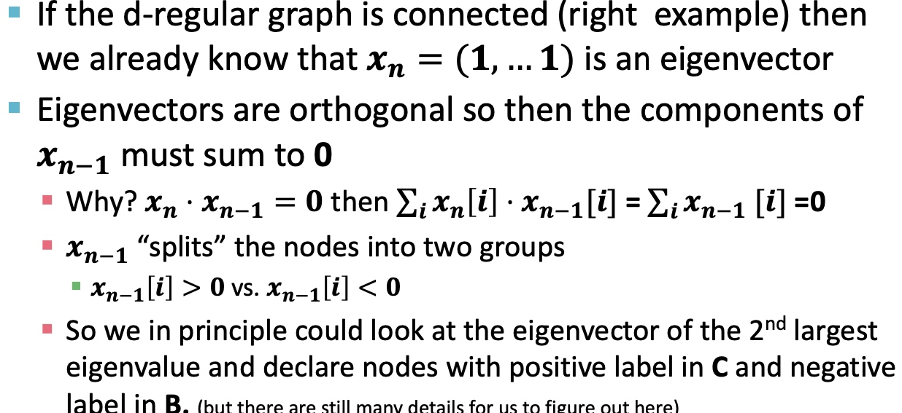
Matrix Representations
邻接矩阵A
- 对称矩阵；
- n个实数特征值；
- 特征向量均为实数向量且正交:
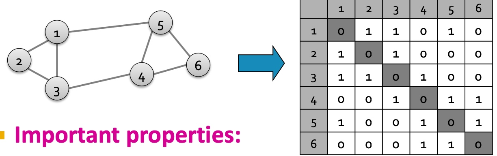
度矩阵
- 对角矩阵；
- \(D=[d_{ii}]\), \(d_{ii}\) 表示节点i的度；

Laplacian matrix
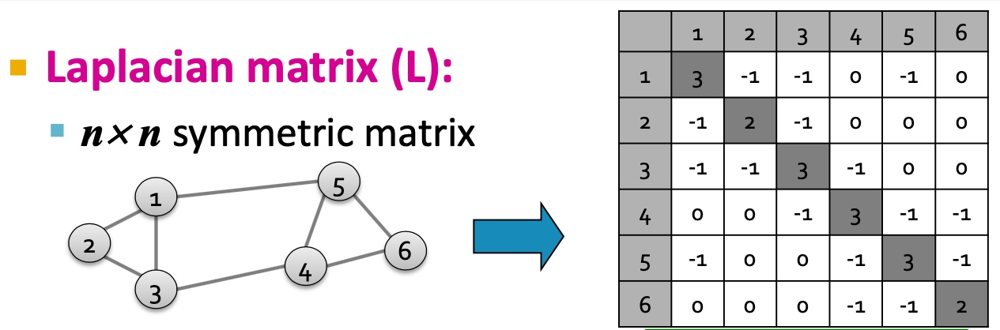
Laplacian matrix 有以下特点：
- 令x=(1,...,1)则\(L*x=0\)， 故\(\lambda=\lambda_{1}=0\)；
- L的特征值均为非负实数；
- L的特征向量均为实数向量，且正交；
- 对于所有x，\(x^{T}Lx=\sum_{ij} L_{ij}x_{i}x_{j} \geq 0\)；
- L能够表示为\(L = N^{T} N\)
Find Optimal Cut
分组表示(A,B)为一个向量，其中

问题转换为寻找最小化各部分间连接：

相关证明间slide，这里老师没有做过多解读；
Spectral Clustering Algorithm
基础方法
如下图：主要包括三个步骤：
- 预处理：构造图的表示， 包括Laplacian Matrix；
- 矩阵分解：
- 计算Laplacian Matrix的所有的特征值与特征向量；
- 将节点使用特征向量表示（对应\(\lambda_2\)的特征向量\(x_2\)）；

- 聚类， 将节点的特征表示，排序， 按大于0与小于来进行拆分：

以下是多个实例， 看起来使用\(\lambda_{2}\)对应的特征向量\(x_2\)来切分是比较合适的：

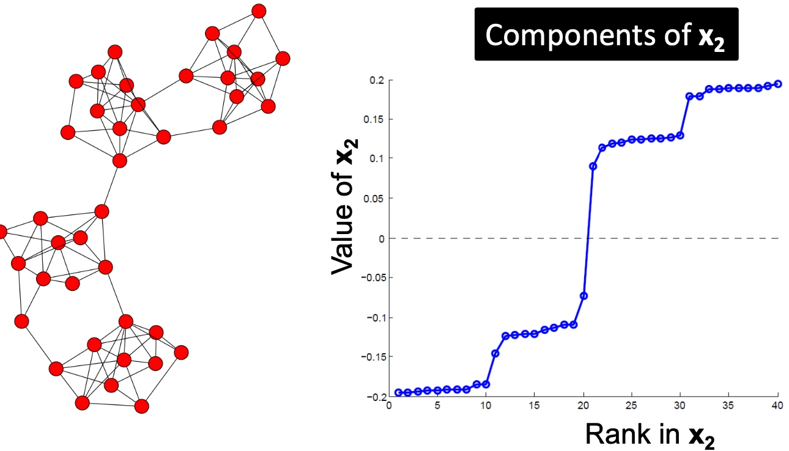
k-Way Spectral Clustering
如何将图切分为k个聚类呢？
- 递归利用二分算法，将图进行划分。但是递归方法效率比较低，且比较不稳定；
- 使用降维方法，将节点表示为低维度的向量表示，然后利用k-mean类似的方法对节点进行聚类；
那么如何选择合适的k呢，如下图，计算连续的特征值之间的差值，选择差异最大的即为应该选择的k？

Motif-Based SPectral Clustering
是否能够通过专有的pattern 来进行聚类呢？上一篇文章有提到motif， 如下图：

给定motif，是否能够得到相应地聚类结果：
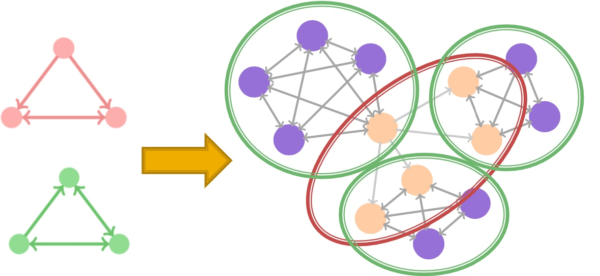
答案当然是可以的， 而且也是复用前面的逻辑
Motif Conductance
和上文中， 按边来切分逻辑不通， conductance指标，应该表征为motif的相关指标，如下：
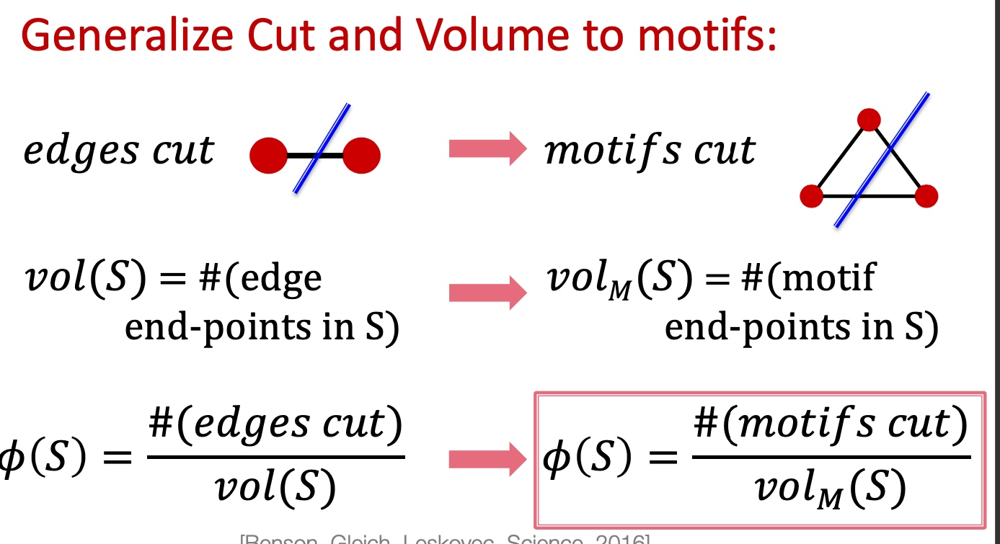
这里给出一个计算的例子， 如下图， 该出模式分子为切分经过的该模式数量， 分母为该模式覆盖的所有节点数量：

所以motif的谱聚类就变成了给定图G与Motif结构来找到\(\phi_{M}(S)最小的\)， 很不幸， 找到最小化motif conductance也是一个np问题；
同样地，也专门提出了解决motif 谱聚类的方法：
- 给定图G和motif M；
- 按M和给定的G，生成新的权重图\(W_{(M)}\);
- 在新的图上应用spectral clustering方法；
- 输出对应的类簇；
大致过程如下图所示：
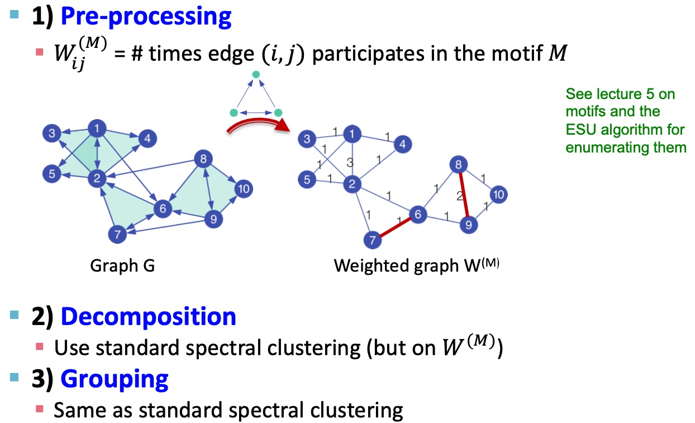
具体过程如下：
-
给定图G与motif M， 计算权重图\(W^(M)\)：

-
应用谱聚类， 计算其Laplacian Matrix的特征值与特征向量，得到第二小的特征向量，：

-
按升序对第二小特征值的对应的特征向量进行排序（对应的节点ID需要保存以计算motif conductance）， 以\(S_r = {x_1, ...,x_r}\)计算motif conductance值，选择最小地的值即为划分点， 如下图，1,2,3,4,5为一个类：

Summary
本章我们学习了谱聚类相关的工作， 首先，讲了关于表征切分图的指标cut(A,B)以及conductance，如何切分图以及为什么切分图是一个np难题，然后提出了利用谱聚类的方法来解决该问题，从而学习到了degree matrix, Laplacian matrix等概念； 而后提出是否有按motif来进行图聚类的方法， 并基于谱聚类的方法来解决来转换原图为带权重的图来解决；


Motifs and structural roles in networks
Subgraphs
何谓motif？ 图中反复出现的相互连接的模式，有以下三个特点：
- Pattern：小的能导出的子图；
- Recurring：频繁出现；
- Significant：模式的出现明显高于预期，如类似的random genderated networks中的模式；
Motif: Induced Subgraphs
Induced Subgraph如下图所示，图中红色框虽然也是3个节点构成的子图，但是该子图与待匹配的子图不匹配（连接不一致），而蓝色的三角框中的子图与待匹配的子图匹配， 匹配的意思是指必须是出现在待匹配子图里所有节点的边，如果不是待匹配节点之间的边，则不匹配；

Motifs: Recurrence
如下图，右侧图中出现了4个待匹配的motif，motif之间可以相互重叠；

Motif： Significance
如下图， 该motif在真实的网络中出现的频率要对类似的随机网络出现的频率要高的多， 我们成为其显著性明显；

显著性通常是和随机性网络做对比，通常使用\(Z_i\)来描述motif i的显著性， 其中\(N_{i}^{real}\)表示真实网络中motif i的数量， \(N_{i}^{rand}\)表示在随机网络中motif i的数量：
\[Z_i = \frac{(N_{i}^{real}-N_{avg\ i}^{rand})}{std(N_{i}^{rand})} \]上面的计算会随着网络规模的不同而有数值的变化，而大的网络会倾向于有更大的Z-score， 归一化处理之后，使用Net significance profile来表示，motif i的SP计算公式如下：
\[SP_{i}= \frac{Z_{i}}{\sqrt{\sum_{j}{Z_{j}^{2}}}} \]Configuration Model
配置一个和真实网络相同的度序列的随机图可以分为三步：
- 按节点的度序列生成Node spokes；
- 随机从nodes spokes中挑选两个连接起来；
- 根据源节点和目标节点，将步骤2中聚合起来，即形成和真实网络相同度序列的随机网络；

Alternative for Spokes: Switching
另一个产生于源图类似的图的方法就是随机做边交换，具体步骤如下：
- 从源图中随机找出边如，A->B, C->D，随机交换边的终点产生边A->D, C->B， 如果交换导致自己指向自己，则不交换；
- 重复1中，Q次， 当Q足够大时，即可生成随机图；
本节总结
经过上面的定义与解释之后，我们就可以定义如何检测一个motif：
- 在真实图中，统计induced subgraph的个数；
- 统计生成的随机网络中的induced subgraph的个数， 这里随机生成的网络，可以生成多个做对比；
- 计算Z-score， 那些高的Z-score就是我们需要的motif；
motif也有相应的变种， 如不同的频率概念、不同的显著性计算标准、null model的不同约束等等，但基本上都是万变不离其宗；
Graphlets: Node Feature Vectors
Graphlet是基础的由节点构成的基础子图单位，由两个节点开始，下图是2-5个节点的graphlet示例图：

那么，如何由graphlet来改造节点的特征呢？
之前我们提到的度，是指每个节点能够接触到的边数，这里我们扩展Graphlet degress vector，用来表示节点v能够接触到的graphlet的数量， 如下图，graphlet有a, b, c, d, 注意这里d和c画在一张图上, 这样我就可以用2, 1, 0, 2来表示节点V：

Graphlet degree vector的意义在与它提供了对于一个节点的本地网络拓扑的度量，这样可以比较两个节点的GDV来度量它们的相似度。由于Graphlet的数量随着节点的增加可以很快变得非常大，所以一般会选择2-5个节点的Graphlet来标识一个节点的GDV。
Finding Motifs and Graphlets
在一个图里识别出一种特定大小的motifs和graphlet，并计算它的数量是非常难的一个问题。识别是否是同构子图本身就是一个NP-hard的问题：计算量也会随着节点数的增加而呈指数增长，因此， 一般只识别节点数较小如3-8的motif或者graphlet。
Exact Subgraph Enumeration###
ESU从一个节点\(v\)开始，算法分为两个集合：\(V_{subgraph}\):表示当前构造的子图，\(V_{extension}\)：表示能够扩展motif的候选节点， 将满足以下两个条件的节点\(u\)加入到\(V_{extension}\)：
- \(u\)的节点id要大于v的id；
- \(u\)只能是新加入加点\(w\)的邻居，而不能是\(V_{subgraph}\)里的节点邻居；
伪代码逻辑如下：
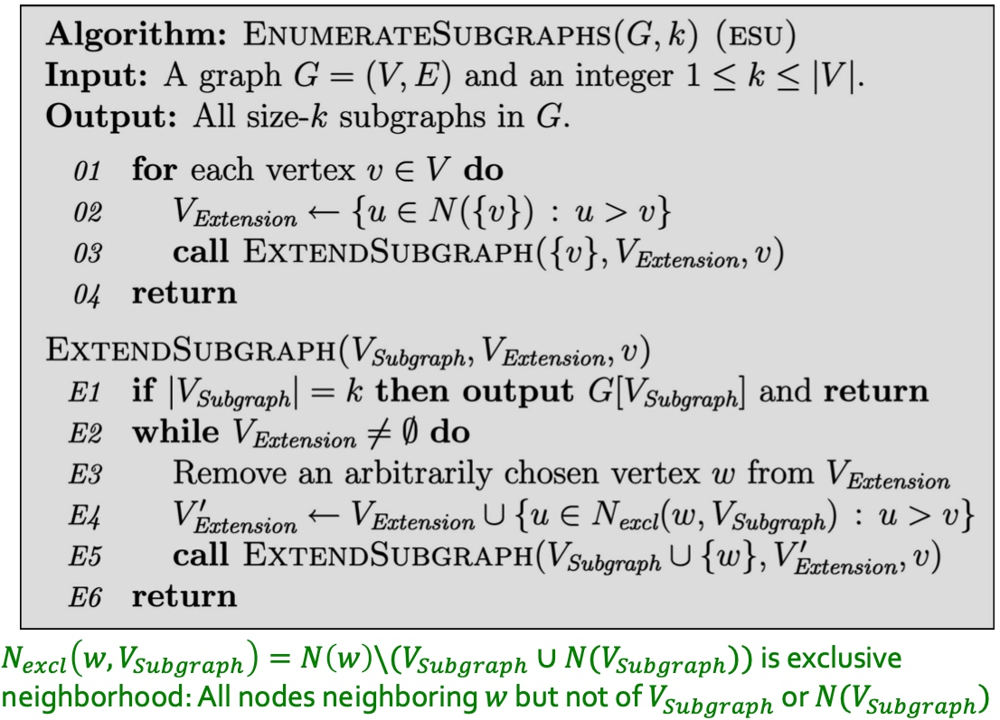
如下图就很容易理解了， 从不同的点出发， 比如node 1， node 1的邻居只有3， 所以开始extendsion为3， node2， 其邻居只有3， 所以extension为3， node 3， 其邻居有1、2、4、5，为保证id要大于node 3， 所以extension为4、5， node 4， 邻居有3、5， 保证id大于4所以extension为5， 第二层将exetension加入到subgraph， 且此时exetension要是新加入节点，如最左边分支，新加入节点为3，exetension要讲node 3的邻居加入，且保证大于node1 ， 即exetension变为2，4，5；左起第二个， 将exetension 中node 3加入， node3的邻居节点有1、2、4、5， 其中只有4、5大于原先subgraph中的2， 所有exetension为4、5， 以此类推即可，最终所有大小为3的子图即可遍历出来；
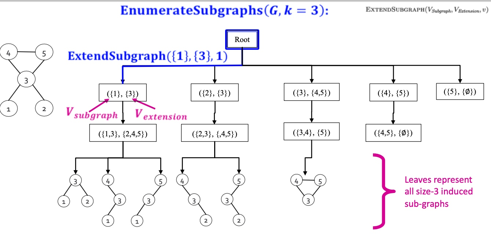
到目前为止， 我们就可以遍历出所有大小为的子图， 接下来我们只需要统计下这些图即可， 如下图所示， 需要判断是否为同构图，即拓扑结构完全一致：
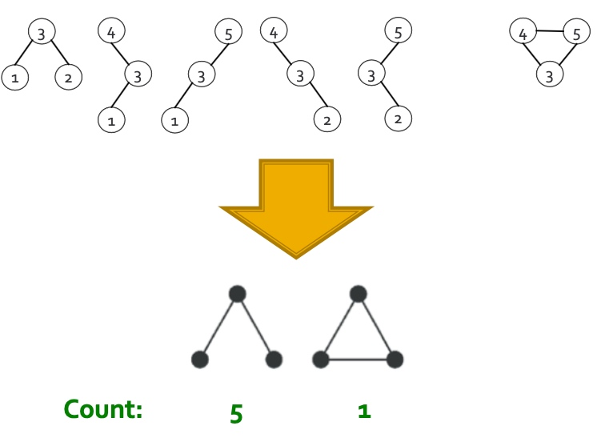
Graph Isomorphism
如何判定两个图是同构？
如果图\(G\)和\(H\)是同构的，那么必定存在一个双向映射\(f: V_{(G}->H_{(H)}\)保证任意两个节点u和v在图G里面是相邻的，则\(f ( u )\) 和\(f ( v )\)在图H里也是相邻的, 检查图是否重构是一个NP难题

Structural roles in networks
Role: 角色， 是对节点在网络中功能的描述， 是有相同结构特征的点，相同角色的节点并不一定直接相连，而Group/Communities(社群)， 是彼此相互密集连接的节点群；
视频中举了个例子，假定一个计算机系构建一个社交网络，其中：
- 角色指： 教职、职员、学生；
- 社群指： AILab、Info Lab、 Theory Lab等；

如果节点u和节点v和所有其他节点有相同的关系，则说明节点u和节点v在结构上等同， 如下图中u和v完全相同；

Discovering Structural Roles in Networks
为什么要研究图当中的role ？如下图：

RoIX: AutoMatic Discovery of nodes' structural roles in network
RoIX特点如下：
- 非监督学习方法；
- 无需先验知识；
- 支持多种角色分类；
- 按边数线性扩展；

RoIX过程如下图， 其中最重要的Recursive Feature Extraction.
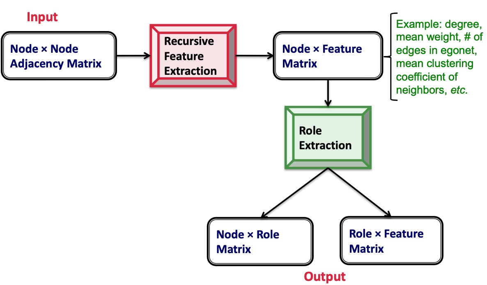
Recursive Feature Extraction是基于图的结构详细，从某一节点出发，聚合该节点的特征，如有向图中，该特征未出度、入度、度等等，其次基于该node的邻居、包含该节点的可导出子图，这称之为Egonet，也会提取Egonet中节点的特征。以此类推，用这种方法提取到的特征，是指数级增长，后续会使用裁剪技术将部分特征裁剪掉；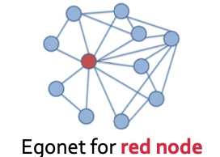
最终，每一个节点会由如下图的向量表示， 然后采用non negative matrix factorization（KL离散度距离来评估似然度） 即可完成流程图中node * role matrix与role * feature matrix的生成：


[toc]
技术调研报告
需求场景
云音乐在边缘计算上的需求较为丰富，主要集中在两个点上：
- 边缘数据处理；
- 边缘模型推理；
前者主要目的是缓解基础数据处理在服务端压力， 并且在越来越严的监管压力下，进行某些数据的脱敏处理之后上传，如某些poi，在边缘端在客户端完成提取之后，脱敏上传，扫描更多用户信息，提取相关标签；
边缘模型推理，主要是指将模型部署下发到移动侧，完成推理，如检测直播中是否有人脸出现、评论是否涉黄涉恐等；
本报告接下来分为三个部分来描述业界类似的场景需求，以及相关的技术方案；
边缘数据处理###
业界需求
边缘数据处理

场景一
工业设定的边缘环境（例如海上石油勘探平台）往往缺乏
充足的计算，存储和网络资源有限，且设备生成数据量极大，全部传输不仅占用极大资源，且意义不大，所以业务开发边缘分析程序来进行关键数据的分析、脱敏等操作，之后将处理完成的数据传输至服务器端进行进一步挖掘；
场景二
自动驾驶侧，由于驾驶本身对反馈数据的时延要求极高，将数据传回网络侧进行计算处理，再反馈相应处理逻辑整体耗时随着网络的不稳定而变化极大，在边缘侧计算关键数据的计算，包括模型推理，进行及时的决策反馈；
场景三
欧盟GDPR法规，限制欧盟之外的任何公司， 针对于不符合在隐私数据上规范的公司处以最高罚款为其全球收入的4%或2000万欧，两者取高者。政策越来越严的规范， 数据不离开用户设备必然会成为后续的趋势，这对于推荐、搜索、广告等核心互联网业务会造成毁灭性的打击，边缘侧进行必要的数据处理，传回有价值的、脱敏、符合政策法规的数据，
####云音乐场景####
需求一： 辅助埋点完成脏、乱数据治理，数据生产侧完成数据质量保障
和团队@董有现讨论，目前埋点逻辑由相关产品收集， 反馈至客户端，客户端完成相关功能开发后，由数据团队进行数据质量检查，完成检查之后上线，数据埋点日志落存储，大数据同学再进行相关功能的开发，数据同学反馈会存在很多异常情况（本身数据质量：如数值为空情况、数据明显异常如播放点负数、）， 是否能将脏、乱数据治理，直接落地在边缘侧处理， 脏、乱数据治理，埋点同学最熟悉，可以在此完成逻辑的闭环，如下图展示：

需求二：边缘侧进行数据聚合， 生成更详尽指标
单个指标通常应用到算法，会经过一些基本的聚合处理，比如按时间构造多尺度（天级别、周级别）播放时间、按多source聚合指标，此类指标仅依赖用户本身行为，可选择在边缘侧进行数据聚合，如下图：可以选择边缘侧进行时间聚合、多source聚合，在边缘侧可进行数据异常处理、这部分工作如何在大数据上去做，其实相对还是比较复杂的，因为埋点逻辑不可避免地会落地异常数据，其实在大数据侧很难完全处理掉这部分数据，因而不仅仅是效率问题，边缘侧的数据聚合能够有效地将客户端处理逻辑闭合，提供更高智能、更易用的数据，另一方面，在大数据环境下进行相关数据的聚合，整体资源消耗较大；

需求三：数据敏感，减少法律法规风险
目前国内外隐私相关法律法规如GDPR针对Google、Facebook天价罚款，《中华人民共和国民法典》对隐私权与个人信息保护越来越严，互联网公司尤其是移动侧数据采集，必然越来越严格。对整体数据应用会有极大地影响。移动侧后续在数据采集上，可能需要考虑关键数据的脱敏，同时保证尽可能少地影响算法效果；
###边缘模型推理###
####为什么云音乐需求边缘模型推理####
- 脱机可用性：这可能是最明显的论点。如果无论条件和连接性如何都需要应用程序可用，则必须将智能放置在本地设备中。由于远程蜂窝数据不稳定，DDoS攻击后服务中断或仅仅是因为你的设备正在地下室中使用，会导致连接中断！对于基于云的解决方案来说，这是一个巨大的挑战。但是，如果将智能放在本地设备上，则无需担心；
- 降低云服务成本：云服务非常方便（可扩展性，可用性），但是却代表着相当安规成本，随着越来越多的人使用解决方案，这种成本将会增加，尤其是AI类的推理应用， 这些成本将持续到产品的整个生命周期, 而边缘侧进行模型推理，利用了用户本身的算力来完成相关模型的推理计算，大大降低在类似场景下的成本付出；
- 降低连接成本：边缘侧完成模型就散，仅发送AI的计算结果，就地处理信息可以将带宽消耗除以100倍（对于视频则更多），尤其是对于视频类应用，通常计算集群和存储集群是分开的，完成相关的推理计算，需要频繁地拷贝，若在边缘侧完成模型的推理计算，需要传输的数据将从兆字节的视频将转换为几个字节，比如主播人脸是否存在，而不是将视频数据拷贝至相应地计算集群，完成模型推理，仅仅需要边缘侧完成计算即可；
- 处理机密信息：当可以在本地收集和处理关键信息时，无需将数据传至数据中心处理，但是依然能完成相关地逻辑需求，如通过判断直播场景下是否有人，而非将直播关键的数据实时传输到计算集群上，来进行相关计算，这个成本是极其昂贵的；
- 响应时间至关重要：在本地收集和处理数据很会缩短响应时间，从而改善用户体验，目前的手机侧通常拥有比较不错的算力，能应付一些模型的推理计算；
- 环保：中小型物联网设备每天将发送1MB或更少的数据，大约可以每天估算20g的二氧化碳，经过一年的计算，10,000台设备可产生多达73吨的二氧化碳！在本地进行处理可以将其缩小到730kg， 数据中心电力的消耗也极大，尤其是在进行密集型计算时，单个gpu设备可能达到250w的工作效率，而基于视频或图像的解决方案可能会产生更大的影响，未来在数据搜集上都可能缴税的政策锋线上，碳排放、电力消耗的缴税风险可能更大，其成本也不容忽视；
- 硬件优化到一定程度；
可行性分析
###边缘数据中心与数据处理：进一步贴近接入层###
学术界与行业相关工作
前两年在学术界有相关的文章，如Secure and Sustainable Load Balancing of
Edge Datacenters in Fog Computing，提出Edge Data Center的概念；Potentials, Trends, and Prospects in Edge Technologies:
Fog, Cloudlet, Mobile Edge, and Micro Data Centers也提到边缘侧数据中心，更近地贴近边缘侧完成部分数据的存储、计算，来提供移动侧内计算能力，减少传统数据中心的数据计算压力，提供更稳定时延服务；
业界包括华为、https://www.siemon.com/zh/home/applications/edge在5g上的布局也包括边缘侧完成部署计算，包括组件边缘数据中心，详情见[面向5g的边缘数据中心基础设施](https://e.huawei.com/cn/material/networkenergy/e7940fd56def4524aa1d0e4a8f835f99)、[边缘数据中心](https://www.siemon.com/zh/home/applications/edge)。
边缘数据中心，其目的在于减少边缘侧数据存储计算的时延，尤其是在占大量带宽的数据计算、视频分析等关键AI应用上，相关行业目前技术尤其是数据存储、计算，确实有向边缘侧靠的趋势。
云音乐实际情况
而针对云音乐目前的痛点，尤其是在数据处理时，集群压力极大，目前整体，移动端进行必要的部分数据存储以及部分指标的计算，是比较合理的
- 目前，边缘侧数据处理仅基于用户尺度做较为简单地数据聚合、数据加密、脱敏操作，其计算复杂性不高，理论上可以适合计算；
- 边缘侧完成的更高级指标的计算，能够被大数据工作流直接使用，比原先大数据侧进行数据去脏、去错再进行相关计算，理论上精确度更高；
- 边缘侧完成相关数据的计算前提在于其对数据质量、数据内容有极高的保障，并且有相应地去脏除错逻辑，在此背景下，更易于大数据埋点需求做到解耦合；
- 边缘侧目前cpu、gpu性能较为强劲，边缘侧已经能支持较为复杂的矩阵线性计算，如大kernel cnn，理论上简单地数据处理逻辑理论上不在话下；
###边缘模型推理###
标准化的开发流程
边缘模型推理目前是各大互联网公司着力落地的点，需求比较明显，这里就不详述，主要是将部分模型的推理部署在移动侧，减少由于网络传输带来的安全风险以及时延问题，目前整体的技术方案如下图大概分成以下几个部分，下面会详细描述：

- 离线特征处理：主要目的是生产训练样本，如评论是否涉黄、涉恐分类模型，需要收集评论数据，并标准为相关类别；
- 离线模型训练：使用包括TensorFlow、Paddle、Pytorch等在内的框架来训练相关离线模型；
- 离线模型评估：将训练好的模型在指定的验证集上进行模型评估，得到离线评估指标；
- 模型转换：将训练出来的模型转换为移动侧支持的模型，并附上指定SDK Demo；
- 模型验证：在指定SDK上验证转换生成的模型文件，开发对应的数据处理逻辑，完成模型功能、以及时延验证；
- 模型下发：验证完成之后，通过专有平台将模型批量下发给客户端；
- 模型更新：下发完成后，进行模型文件更新， 将新版本的模型文件以及对应逻辑的包更新；
####离线特征处理####
主要负责生产训练样本，包括特征的基本处理以及样本的标准，如在直播场景下，检测视频当中是否出现主播人脸，人脸检测在直播场景，需要提前标注一定量级的的人脸标注照片， 下图中红框、红点为关键点检测标注信息：
完成标注之后，通常我们会将标注数据处理成适合某些框架训练的数据格式，如TensorFlow下tfrecord。
####离线模型训练####
离线魔性训练，通常我们会用TensorFlow或者Pytorch构造合适的神经网络结构，如针对人脸检测比较出名的MTCNN，MTCNN网络复杂性设计的比较好， 可以在中端手机上部署，完成20~30FPS的检测速率：

####离线模型评估####
离线模型训练之后，我们会在一个合适的数据集上进行模型评估，待数据集上指标满足要求之后，再开始考虑上线，离线评估数据集通常是业务落地时面对的真实数据集，在这个数据上的评估指标，最接近真实数据，通常在满足指标要求，都会经过多轮的迭代，通过data augmentation等数据增广，或者直接补齐某些效果不好场景下的训练数据，来逐步提升模型在各类场景下的鲁棒性；
####模型转换####
模型转换目的是为了将适合服务端计算的模型文件转换为专门针对移动端进行算子优化的框架，如paddle lite提供将其他框架如TensorFlow、Caffe等转换为paddlepaddle的原生工具X2Paddle， 且在转换过程中支持包括量化、子图融合、Kernel优选的优化手段，优化之后的模型更轻量级、耗费资源更少、更适合在移动侧部署，目前比较流行的移动侧框架，网商的某个性能对比：

为了防止对业务造成影响，一般都是单线程使用，且关闭openmp防止帧间波动影响体验，整体结论：
paddle-lite>mnn>ncnn>tflite
另外的如apple本身的Core ML，因为仅支持ios。
####模型验证####
模型验证主要是进行移动端编译的验证，通过这个过程，框架侧会提供一个最简化的演示的sdk，支持build成移动侧的app，然后通过比如adb在手机侧进行推理，评估资源消耗、耗电以及模型推理耗时。
比如paddle lite的一个demo: https://github.com/PaddlePaddle/Paddle-Lite-Demo/tree/master/PaddleLite-android-demo/face_detection_demo
####模型框架集成####
模型验证完成之后，集成到客户端app中，这里需要考虑引入新的模型框架带来的app包体积增大以及app耗时增加的问题，如目前paddle-lite 目前整体包ARMV7只有800K，ARMV8下为1.3M
####模型/框架热更新####
模型部署成功之后，后续模型框架、模型文件更新是比较频繁的，不可能每次发版本来更新客户端的离线模型，主要包括两个部分：
- 模型文件的更新：模型推理框架无需更新，仅更新模型文件；
- 模型推理包的更新：需要更新推理框架以及模型文件；
挑战
###边缘数据处理###
-
相关开源项目比较少， 且活跃度不高：
目前边缘数据处理开源的不多，并且活跃度不大，如下面的apacheEdgent，边缘计算相关的开源框架和产品主要集中在如何组装，采用类似于K8S编排设备的技术来完成边缘设备的编排，主要是针对有限网络下快速的组网、设备管理等工作，做数据处理的封装目前没看到太多的解决方案：- apacheEdgent： https://edgent.incubator.apache.org/；
- Akraino Edge Stack：https://www.lfedge.org/category/akraino-edge-stack/；
- AWS IoT Greengrass: https://aws.amazon.com/cn/greengrass/；
- Azure IoT Edge: https://github.com/Azure/iotedge；
- baetyl: https://github.com/baetyl/baetyl；
- Macchina.io: https://macchina.io/；
目前，在云音乐的需求中，边缘的主要针对于做用户维度的、时间维度的聚合操作，这里需要一些专门的算子，如map、reduce，用于专项处理埋点数据中的转换、聚合操作，这里需要联合客户端同学，可先完成相关功能的封装，建议开始按功能如按天聚合播放时间等case by case 开发，后续抽象出来，由数据组提供相应sdk；
-
脱敏加密数据上传涉及到的隐私保护计算，目前整体积累较差，相关的技术水平要求高：
- 如手机号、身份证这类数据，可在端侧进行脱敏处理，类似手机号、身份证无论在算法还是数据处理上，其实仅充当统一性表示ID， 进行脱敏处理不影响其落地应用，但是否有涉及到比如推送号码包类似应用需要，如有需要，在此类场景下需提供专门解码方法完成加密数据的解码；
- 如有数据保存至公有平台进行数据分析时，可采用同态加密技术，同态加密技术旨在分析可以在不拿到明文数据的前提下，进行数据分析等相关操作；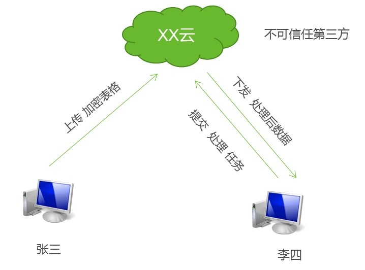
-
目前无法很好地评估，增加边缘侧数据处理带来的性能问题，如电量耗损、cpu占用过多影响体验、磁盘读写占用等等问题； // 使用闲时处理、闲时上传；
-
边缘侧数据处理和原先类似埋点开发过程中，需要保持一致性的地方，这一块如何保证；
-
原始埋点数据上，增加业务场景线上，两条路走；
###边缘模型推理###
边缘模型推理目前挑战点主要在于:
- 目前虽然移动侧模型推理较为流行，但是并不是所有的训练框架算子均支持移动侧部署，或已在移动侧深度优化，边缘侧部署需要和模型训练侧深度合作；
- 边缘模型将部分模型的app打包到本地，模型以及相关包均在用户侧，这其中可能涉及到模型的相关风险，在一些核心应用，例如身份验证这类场景下，涉及到相关的安防技术，如目前通过deepfake技术使一些人脸识别系统出错， 如何安全的访问模型请求也是现有的挑战；
- 模型定时更新涉及到大规模的模型下发，尤其在云音乐这种规模下的模型下发，这块我们不太熟悉，无法评估风险；
- 模型推理下放到边缘端计算，必然在资源上消耗较多，如果减少资源负载也是必须要要考虑的问题；
机器学习与容器化平台
愿景
算法同学爽、工程任务开心、技术快速复用，干完战，早点下班。总结了一下具体包括以下几个方面：
开发流程标准化
针对开发者，尤其是新人能够快速进入到开发工作中来， 前提是需要一套比较完善、合理的开发流程，将可能的开发工作流程集中在平台当中，在此基础上完成开发流程的标准化管控， 和军队培训战士一样， 我们从广大人民群众中，选择了最优秀的那一批同学，来到我们的团队，从内务教令、文化教育、长途越野跑、基础实战能力，到最后的兵王，一定是有一套特别完善的标准化流程，Goblin就想做这样的"军队"试验场，将人才的培养、项目开发上线，流程化、标准化，赋能给技术团队，让"新兵"得到最好的实践锻炼，"兵王"打好战；
能力接受与放大器
在大数据、算法团队中，其实很难评估开发人员本身的工作，最近在看一本书， 其中提到针对一个推荐系统产品，有4个关键元素需要注意： 1. UI和UE；2.数据；3.领域知识；4.算法，其权重是1>2>3>4，1和3是"颜值即正义"、"老天赏饭吃"， 2、4是我们开发者需要关注的，而对数据、算法，最难的其实是目标的定制，如何评估一个数据任务、大数据产品、算法模型有价值，需求方说好就一定好？指标升了就一定好？这个不一定，而这也是数据相关从业人员很有挑战的方面，而作为内部平台，算法、工程人员前方打战，我们要做的是保证好后勤，提供（大数据能力）粮草、（模型开发环境）弹药，关键时刻还得赤膊上前一起干（通用模型能力）；
技术可复用
小团队的技术有高有低，专业能力各有不同，数据积累也各有千秋， 如何集合各团队优势，将完成优势互补， 尤其是在互联网日新月异的场景需求下，能快速将以前产品技术复用到新场景上，是一项很关键的能力，支持创新需求的快速落地，是如Goblin这样内部平台的初衷，很多人管这叫中台， 但目前，我们觉得这个词太大，完成技术复用已经是我们到现在以及短期内比较宏远的目标，达到中台那样的恢弘，任重而道远。
算法与工程集散地
实践中，从工作来看，算法工程师和支持算法的工程师技术路线gap太大，大到可能达不到相互理解、相互信任，必须要有一个平台能够弥补这其中的gap，幸运地是，在我们实践中，这一类模式可能是很多花样，但是其内核是稳定不变的，模块化、标准化完成这些其实并不是复杂的工作；
基础知识介绍
到这里，说了很多非技术的事情，开始要写一些技术相关的了，毕竟这是篇正经的技术文章，这里我分享三个Goblin中使用的比较多的技术工作：容器化技术、Kubernetes、分布式存储；
容器化技术
概述
首先，我们来聊下容器化能解决什么问题？
软件开发环境问题
软件开发最复杂的就是开发环境的配置，无论是Python、Scala、C++还是其他的任何语言，在开发之前，需要准备各种运行环境、IDE、辅助工具，而在一个软件的交付上，开发和维护需要保证一摸一样的环境，否则就会经常出现"在我机器上是可以的， 你去xxxxxx"；
软件架构越来越复杂：
软件到现在越来越复杂，就以手机操作系统而言，不仅包括常用的工具APP，云端应用，还有AI功能的服务，越来越复杂的功能造成了多种技术架构必然是模块解耦、多样的技术栈、动态构建资源；
统一管理：
所有功能、架构都需要统一的管理，才能有效地管控这些小恶魔，以至于不出乱子；
容器化技术能够很有效地解决上面问题的， 对于开发者来说， 容器是一个黑盒：
- 你不需要关心容器怎么构建，你只需要知道有何功能；
- 有易用的工具来对容器进行管理与编排；
- 部署模块到容器，集装箱式组合；
- 环境通过文件生成，可简单复用；
容器简史
参考文章: http://www.dockone.io/article/8832，描述的特别好
kubernetes
概述
Kubernetes是一个开源的，用于管理云平台中多个主机上的容器化的应用，Kubernetes的目标是让部署容器化的应用简单并且高效,Kubernetes提供了应用部署，规划，更新，维护的一种机制。在Google内部，容器技术已经应用了很多年，Borg系统运行管理着成千上万的容器应用，在它的支持下，无论是谷歌搜索、Gmail还是谷歌地图，可以轻而易举地从庞大的数据中心中获取技术资源来支撑服务运行。Borg提供了3大好处:
- 隐藏资源管理和错误处理，用户仅需要关注应用的开发。
- 服务高可用、高可靠。
- 可将负载运行在由成千上万的机器联合而成的集群中。
而作为Borg的开源版本， Kubernetes对计算资源进行了更高层次的抽象，通过将容器进行细致的组合，将最终的应用服务交给用户。Kubernetes在模型建立之初就考虑了容器跨机连接的要求，支持多种网络解决方案，同时在Service层次构建集群范围的SDN网络。其目的是将服务发现和负载均衡放置到容器可达的范围，这种透明的方式便利了各个服务间的通信，并为微服务架构的实践提供了平台基础。而在Pod层次上，作为Kubernetes可操作的最小对象，其特征更是对微服务架构的原生支持。
架构

节点
在这张系统架构图中，我们把服务分为运行在工作节点上的服务和组成集群级别控制板的服务。Kubernetes节点有运行应用容器必备的服务，而这些都是受Master的控制。每次个节点上当然都要运行Docker。Docker来负责所有具体的映像下载和容器运行。

Kubernetes主要由以下几个核心组件组成：
- etcd保存了整个集群的状态；
- apiserver提供了资源操作的唯一入口，并提供认证、授权、访问控制、API注册和发现等机制；
- controller manager负责维护集群的状态，比如故障检测、自动扩展、滚动更新等；
- scheduler负责资源的调度，按照预定的调度策略将Pod调度到相应的机器上；
- kubelet负责维护容器的生命周期，同时也负责Volume（CVI）和网络（CNI）的管理；
- Container runtime负责镜像管理以及Pod和容器的真正运行（CRI）；
- kube-proxy负责为Service提供cluster内部的服务发现和负载均衡；
除了核心组件，还有一些推荐的Add-ons：
- kube-dns负责为整个集群提供DNS服务
- Ingress Controller为服务提供外网入口
- Heapster提供资源监控
- Dashboard提供GUI
- Federation提供跨可用区的集群
- Fluentd-elasticsearch提供集群日志采集、存储与查询
分层架构
Kubernetes设计理念和功能其实就是一个类似Linux的分层架构，如下图所示：

- 核心层：Kubernetes最核心的功能，对外提供API构建高层的应用，对内提供插件式应用执行环境
- 应用层：部署（无状态应用、有状态应用、批处理任务、集群应用等）和路由（服务发现、DNS解析等）
- 管理层：系统度量（如基础设施、容器和网络的度量），自动化（如自动扩展、动态Provision等）以及策略管理（RBAC、Quota、PSP、NetworkPolicy等）
- 接口层：kubectl命令行工具、客户端SDK以及集群联邦
- 生态系统：在接口层之上的庞大容器集群管理调度的生态系统，可以划分为两个范畴
- Kubernetes外部：日志、监控、配置管理、CI、CD、Workflow、FaaS、OTS应用、ChatOps等
- Kubernetes内部：CRI、CNI、CVI、镜像仓库、Cloud Provider、集群自身的配置和管理等
分布式存储
Kubernetes 特别高效地管理多个主机上的容器化应用的，但是在此之前，尤其在数据科学开发场景下，如何共享数据是一个特别严峻的话题，这里我们专门拿出来提下Ceph这一分布式文件系统，简而意之，提供类似于NAS能力，提供多个容器能同时访问的能力。
概述
Ceph 可以简单地定义为：
- 可轻松扩展到数 PB 容量；
- 高性能文件存储、访问能力；
- 高可靠性；
架构
Ceph生态系统可以大致划分为四部分：客户端（数据用户）、元数据服务器（缓存和同步分布式元数据）、对象存储集群（将数据和元数据作为对象存储，执行其他关键职能）、集群监视器（执行监视功能）。

一个标准的流程：
- 客户使用元数据服务器，执行元数据操作（来确定数据位置）。
- 元数据服务器管理数据位置，以及在何处存储新数据。值得注意的是，元数据存储在一个存储集群（标为 “元数据 I/O”）。实际的文件 I/O 发生在客户和对象存储集群之间。这样一来，
- 打开、关闭、重命名由元数据服务器管理，读和写操作则直接由对象存储集群管理。
- 集群监控用于监控这一流程，监控元数据服务器、对象存储的文件IO等等；
组件
Ceph 客户端
Ceph 文件系统 — 或者至少是客户端接口 — 在 Linux 内核中实现。值得注意的是，在大多数文件系统中，所有的控制和智能在内核的文件系统源本身中执行。但是，在 Ceph 中，文件系统的智能分布在节点上，这简化了客户端接口，并为 Ceph 提供了大规模（甚至动态）扩展能力。
Ceph 元数据服务器
元数据服务器（cmds）的工作就是管理文件系统的名称空间。虽然元数据和数据两者都存储在对象存储集群，但两者分别管理，支持可扩展性。事实上，元数据在一个元数据服务器集群上被进一步拆分，元数据服务器能够自适应地复制和分配名称空间，避免出现热点。元数据服务器管理名称空间部分，可以（为冗余和性能）进行重叠。元数据服务器到名称空间的映射在 Ceph 中使用动态子树逻辑分区执行，它允许 Ceph 对变化的工作负载进行调整（在元数据服务器之间迁移名称空间）同时保留性能的位置。
Ceph 监视器
Ceph 包含实施集群映射管理的监视器，但是故障管理的一些要素是在对象存储本身中执行的。当对象存储设备发生故障或者新设备添加时，监视器就检测和维护一个有效的集群映射。这个功能按一种分布的方式执行，这种方式中映射升级可以和当前的流量通信。
Ceph 对象存储
传统的驱动是只响应来自启动者的命令的简单目标。但是对象存储设备是智能设备，它能作为目标和启动者，支持与其他对象存储设备的通信和合作。从存储角度来看，Ceph 对象存储设备执行从对象到块的映射（在客户端的文件系统层中常常执行的任务）。这个动作允许本地实体以最佳方式决定怎样存储一个对象。Ceph 的早期版本在一个名为 EBOFS 的本地存储器上实现一个自定义低级文件系统。这个系统实现一个到底层存储的非标准接口，这个底层存储已针对对象语义和其他特性（例如对磁盘提交的异步通知）调优。今天，B-tree 文件系统（BTRFS）可以被用于存储节点，它已经实现了部分必要功能（例如嵌入式完整性）。
ceph On K8s
PVC 的全称是：PersistentVolumeClaim（持久化卷声明），PVC 是用户存储的一种声明，PVC 和 Pod 比较类似，Pod 消耗的是节点，PVC 消耗的是 PV 资源，Pod 可以请求 CPU 和内存，而 PVC 可以请求特定的存储空间和访问模式。对于真正使用存储的用户不需要关心底层的存储实现细节，只需要直接使用 PVC 即可。ceph提供底层存储功能，cephfs方式支持k8s的pv的3种访问模式ReadWriteOnce，ReadOnlyMany ，ReadWriteMany
以下是goblin上对某个任务的k8s资源编排文件
apiVersion: apps/v1
kind: StatefulSet
metadata:
creationTimestamp: '2020-04-09T03:44:26Z'
labels:
system/project-goblin: 'true'
goblin/creator-email: duanshishi
goblin/instance-id: '97'
goblin-notebook: '97'
statefulset: notebook-duanshishi-1586403865616-97
login-password: 2cfa89d4-da8e-455c-98ef-2a0a0e1a3b04
goblin/creator-group: '422'
goblin/creator-id: '128'
goblin/exec-mode: manual
system/tenant: music-da
goblin/type: development-environment
name: notebook-duanshishi-1586403865616-97
namespace: goblinlab
selfLink: /apis/apps/v1/namespaces/goblinlab/statefulsets/notebook-duanshishi-1586403865616-97
uid: 68fdd40f-7a14-11ea-b983-fa163e51ded8
spec:
podManagementPolicy: OrderedReady
replicas: 1
revisionHistoryLimit: 10
selector:
matchLabels:
system/app: notebook-duanshishi-1586403865616-97
statefulset: notebook-duanshishi-1586403865616-97
serviceName: ""
template:
metadata:
labels:
system/app: notebook-duanshishi-1586403865616-97
system/project-goblin: 'true'
statefulset: notebook-duanshishi-1586403865616-97
system/tenant: music-da
spec:
containers:
-
env:
-
name: NOTEBOOK_TAG
value: notebook-duanshishi-1586403865616-97
-
name: SPARK_DRIVER_PORT
value: '22480'
-
name: SPARK_DRIVER_BLOCKMANAGER_PORT
value: '22490'
-
name: SPARK_UI_PORT
value: '22500'
-
name: HADOOP_USER
value: duanshishi
-
name: PASSWORD
value: 2cfa89d4-da8e-455c-98ef-2a0a0e1a3b04
-
name: ROOT_PASSWORD
value: 2cfa89d4-da8e-455c-98ef-2a0a0e1a3b04
image: 'music-harbor.k8s.cn-east-p1.internal/library/rtrs-dev-py37-hadoop:v1.5'
imagePullPolicy: IfNotPresent
name: notebook
resources:
requests:
memory: 24Gi
cpu: '10'
limits:
memory: 24Gi
cpu: '10'
terminationMessagePath: /dev/termination-log
terminationMessagePolicy: File
volumeMounts:
-
mountPath: /etc/localtime
name: localtime
readOnly: false
-
mountPath: /var/lib/lxcfs/
mountPropagation: HostToContainer
name: lxcfs-folder
readOnly: false
-
mountPath: /proc/cpuinfo
name: proc-cpuinfo
readOnly: false
-
mountPath: /proc/diskstats
name: proc-diskstats
readOnly: false
-
mountPath: /proc/loadavg
name: proc-loadavg
readOnly: false
-
mountPath: /proc/meminfo
name: proc-meminfo
readOnly: false
-
mountPath: /proc/stat
name: proc-stat
readOnly: false
-
mountPath: /proc/uptime
name: proc-uptime
readOnly: false
-
mountPath: /sys/devices/system/cpu/online
name: lxcfs-cpu
readOnly: false
-
mountPath: /root
name: develop-duanshishi
readOnly: false
-
mountPath: /mnt/goblin-data
name: goblin-data
readOnly: false
-
mountPath: /root/demo
name: notebook-demo
readOnly: false
-
mountPath: /mnt/goblin-log
name: goblin-log
readOnly: false
-
mountPath: /mnt/goblin-cache
name: goblin-cache
readOnly: false
dnsPolicy: ClusterFirst
imagePullSecrets:
-
name: registrykey-myhub
nodeSelector:
system/namespace: netease.share
system/tenant: netease.share
restartPolicy: Always
schedulerName: default-scheduler
securityContext: {}
terminationGracePeriodSeconds: 30
volumes:
-
hostPath:
path: /etc/localtime
type: ""
name: localtime
-
hostPath:
path: /var/lib/lxcfs/
type: DirectoryOrCreate
name: lxcfs-folder
-
hostPath:
path: /var/lib/lxcfs/lxcfs/proc/diskstats
type: FileOrCreate
name: proc-cpuinfo
-
hostPath:
path: /var/lib/lxcfs/lxcfs/proc/diskstats
type: FileOrCreate
name: proc-diskstats
-
hostPath:
path: /var/lib/lxcfs/lxcfs/proc/loadavg
type: FileOrCreate
name: proc-loadavg
-
hostPath:
path: /var/lib/lxcfs/lxcfs/proc/meminfo
type: FileOrCreate
name: proc-meminfo
-
hostPath:
path: /var/lib/lxcfs/lxcfs/proc/stat
type: FileOrCreate
name: proc-stat
-
hostPath:
path: /var/lib/lxcfs/lxcfs/proc/uptime
type: FileOrCreate
name: proc-uptime
-
hostPath:
path: /var/lib/lxcfs/lxcfs/sys/devices/system/cpu/online
type: FileOrCreate
name: lxcfs-cpu
-
cephfs:
path: /pvc-volumes/kubernetes/kubernetes-dynamic-pvc-ca4d6207-1b24-11ea-ac15-0a580ab28a22
secretRef:
name: ceph-secret-admin-goblin
user: admin
monitors:
- 10.194.174.173
name: goblin-data
-
cephfs:
path: /pvc-volumes/kubernetes/kubernetes-dynamic-pvc-9eba69ee-3123-11ea-a0ac-0a580ab2c805
secretRef:
name: ceph-secret-admin-goblin
user: admin
monitors:
- 10.194.174.173
name: notebook-demo
-
cephfs:
path: /pvc-volumes/kubernetes/kubernetes-dynamic-pvc-c1e328db-1b24-11ea-ac15-0a580ab28a22
secretRef:
name: ceph-secret-admin-goblin
user: admin
monitors:
- 10.194.174.173
name: goblin-log
-
cephfs:
path: /pvc-volumes/kubernetes/kubernetes-dynamic-pvc-cb7cadba-1b24-11ea-ac15-0a580ab28a22
secretRef:
name: ceph-secret-admin-goblin
user: admin
monitors:
- 10.194.174.173
name: goblin-cache
-
cephfs:
path: /pvc-volumes/kubernetes/kubernetes-dynamic-pvc-d22931ef-3063-11ea-a0ac-0a580ab2c805
secretRef:
name: ceph-secret-admin-goblin
user: admin
monitors:
- 10.194.174.173
name: develop-duanshishi
updateStrategy:
type: RollingUpdate
rollingUpdate:
partition: 0
status:
collisionCount: 0
currentReplicas: 1
currentRevision: notebook-duanshishi-1586403865616-97-6bf6f8bcd8
observedGeneration: 1
readyReplicas: 1
replicas: 1
updateRevision: notebook-duanshishi-1586403865616-97-6bf6f8bcd8
updatedReplicas: 1
上面是我某个任务完成的yaml文件，在k8s中，yaml 可以告知任何资源的使用与配置如cpu、内存、gpu、对外端口等等，也包括分布式存储如ceph，上面文件中挂载了包括notebook-demo, goblin-log, goblin-cache, goblin-data, develop-duanshishi等多个pvc， pvc底层是cephfs， 且分配了专门的卷，来分享ceph的存储。
赋能
有了容器化、k8s、分布式存储之后，直观上，就有了把集群机器资源单独分配给需求用户的能力，且在不使用时弹性收回，每一个用户可以独立构建自己相关的开发环境，共享给任何团队的小伙伴，也可以将开发环境打包完成线上部署。下面我们从资源隔离与环境隔离、大数据开发、工程开发、机器学习等四个方面来聊一下Goblin的赋能。
资源隔离与环境隔离
name: notebook
resources:
requests:
memory: 24Gi
cpu: '10'
limits:
memory: 24Gi
cpu: '10'
...
image: 'music-harbor.k8s.cn-east-p1.internal/library/rtrs-dev-py37-hadoop:v1.5'
还是从上面那个yaml文件来说明， k8s提供简单的资源分配能力，针对于我们使用的notebook应用， 我们申请10cpu，24G内存来运行开发环境，这个资源是系统级的隔离，Docker 资源利用率的优势，在于你几乎无法感受到容器化的消耗， 因此你几乎可以认为你就是在使用一个独占的24G, 10cpu的机器资源（几乎没有任何损耗），而容器镜像的选择让你几乎可以完全自定义自己的开发环境，你可以选择不同的操作系统、不同的c++编译环境、Python开发工具等等，所以的环境都可以是你定义的，而定义的十分简单，理论上你只需要把你想用的image push到我们容器集群的镜像库，如rtrs-dev-py37-hadoop:v1.5 就是我们的一个centos的基本的镜像，当然，在notebook上我们默认提供了notebook、python、spark、tensorflow、tensorboard的环境支持，后期自定义的容器镜像可以完全由用户定义， 目前我们使用的镜像库如下，后期goblin将会公开这部分能力，如果用户有自定义环境的高级需求，只需要提供相应dockerfile， goblin后台会自动编译成专属镜像：

大数据开发
环境配置
大数据开发能力是Goblin的基础， 目前我们所有的线上镜像都集成了基本的hadoop、Spark支持，打通了线上大数据集群，可以通过多种方式来访问线上数据，如Notebook pyspark、spark shell、python等等进行大数据开发，有了容器之后，这一切变得十分简单， 仅仅需要构造image时，配置好相关开发环境即可， 下面是我们某个镜像dockerfile的大数据相关的配置：
COPY cluster/hadoop-2.7.3 /app/hadoop
COPY cluster/apache-hive-2.1.1-bin/ /app/hive
COPY cluster/spark-2.3.2-bin-ne-0.2.0 /app/spark
COPY cluster/spark-lib/*.jar /app/spark/jars/
COPY cluster/apache-hive-2.1.1-bin/conf/hive-site.xml /app/spark/conf/hive-site.xml
COPY krb5.conf /etc/
COPY keytab_init.sh /app/keytab_init.sh
COPY keytab_init.py /app/keytab_init.py
COPY jupyter /app/jupyter
COPY code-server /app
RUN chmod +x /app/keytab_init.sh
ENV SHELL=/bin/bash
ENV JUPYTER_ENABLE_LAB=yes
ENV HIVE_HOME=/app/hive
ENV HADOOP_HOME=/app/hadoop
ENV JAVA_HOME=/usr/lib/jvm/java-8-openjdk-amd64
ENV SPARK_HOME=/app/spark
ENV PATH=``JAVA_HOME/bin:``HIVE_HOME/bin:``HADOOP_HOME/bin:``SPARK_HOME/bin:$PATH
ENV PYTHONPATH=``SPARK_HOME/python:``SPARK_HOME/python/lib/py4j-0.10.7-src.zip:$PYTHONPATH
开发工具
基于大数据的开发工具，我们提供了jupyter lab， jupyter lab是一套比较强大的数据科学开发工具，是大家比较熟悉的jupyter notebook的下一代产品， 集成了包括文件浏览、多窗口支持、多内核支持等等相关功能，如下图， 一个比较简单的访问线上hive表的脚本：
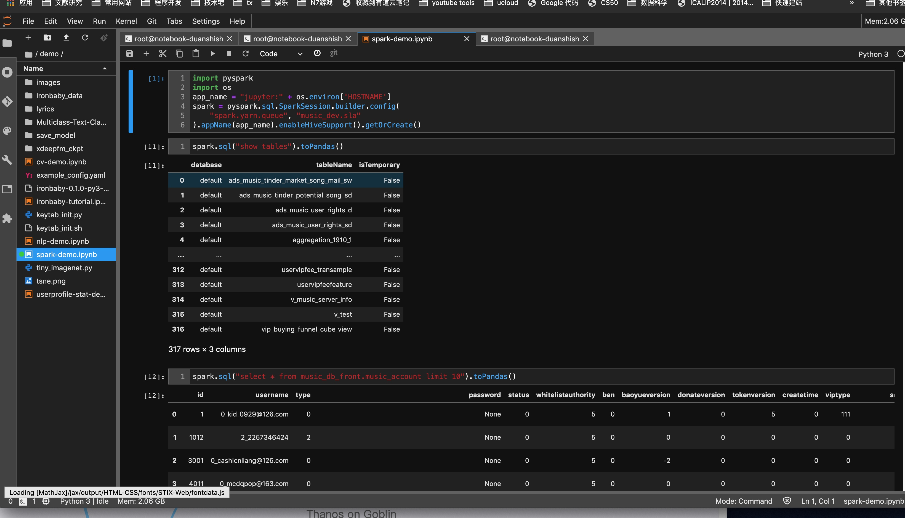
当然你可以在jupyter lab中打开terminal，通过spark-shell、或者其他工具来访问：

工程开发
动机
goblin为方便工程开发，提供了ssh登录、jupyter lab以及vscode online几种使用基于定制化容器环境的开发模式， 业务同学虽然感觉相对于原有的物理机开发会更方便，但是依然给我们这边提了很多问题，其中比较多的一个问题是，是否能够更方便，直接本地连接，并且接入到IDE，当然是可以的，其实本人之前也是采用远程开发的模式，不过在Goblin之前，我选择在本地构建好专门的Docker 容器，通过ssh 链接入本地容器，接下来会和给为小伙伴演示，如何配置本地IDE和Goblin完成远程开发，为了方便，以及考虑成本的问题，本章以vscode为例， 其他相关的IDE如clion，我们测试下来也可以的。
本地环境安装
vscode 安装
vscode 安装比较简单， 参考https://code.visualstudio.com/上，按不同操作系统安装即可
相关插件以及开发环境安装
vscode 安装完成之后，根据开发任务，比如你使用python开发，安装好常用插件，以下是我的插件列表：

Remote SSH
Remote SSH 插件基本介绍
Visual Studio Code Remote - SSH
The Remote - SSH extension lets you use any remote machine with a SSH server as your development environment. This can greatly simplify development and troubleshooting in a wide variety of situations. You can:
1. Develop on the same operating system you deploy to or use larger, faster, or more specialized hardware than your local machine.
2. Quickly swap between different, remote development environments and safely make updates without worrying about impacting your local machine.
3. Access an existing development environment from multiple machines or locations.
4. Debug an application running somewhere else such as a customer site or in the cloud.
Remote SSH 是在本地做goblin远程开发的一个插件，以上是基本介绍；
goblin 环境
新建容器
goblin-实验室-实例管理页面，新建实例：

填入对应的配置信息，选择合适的镜像：
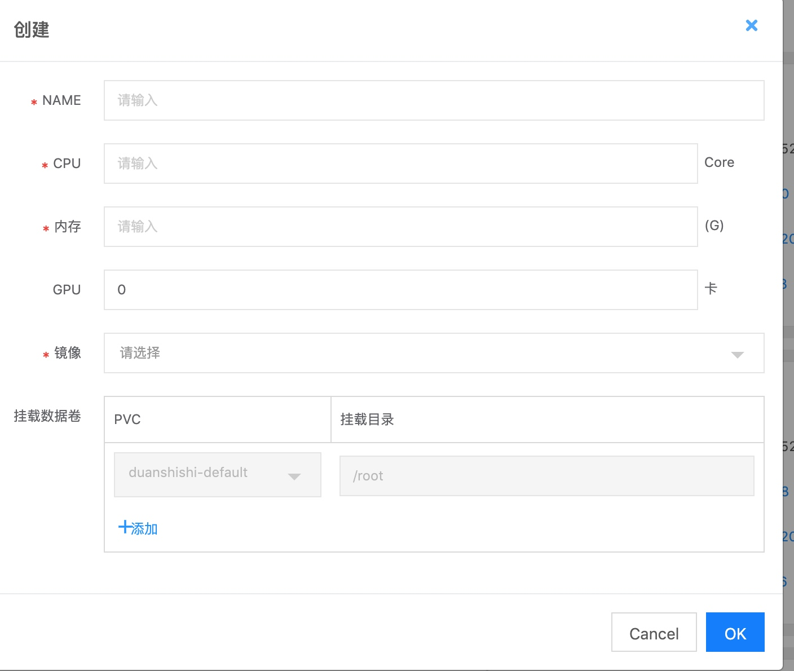
启动镜像后，ssh、vscode、TensorBoard，Jupyter信息如下，

修改本地ssh配置
在本地~/.ssh/config, 配置好容器的相关信息，如ip、port、alias等等

Remote SSH链接


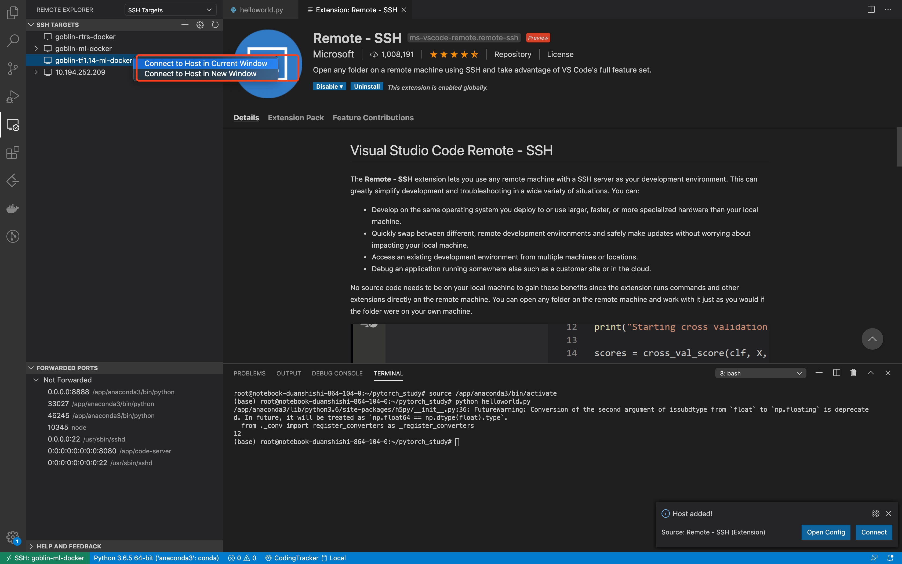
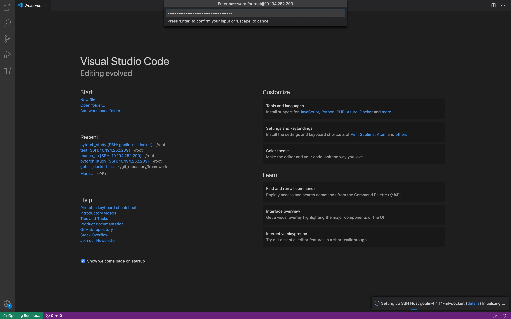
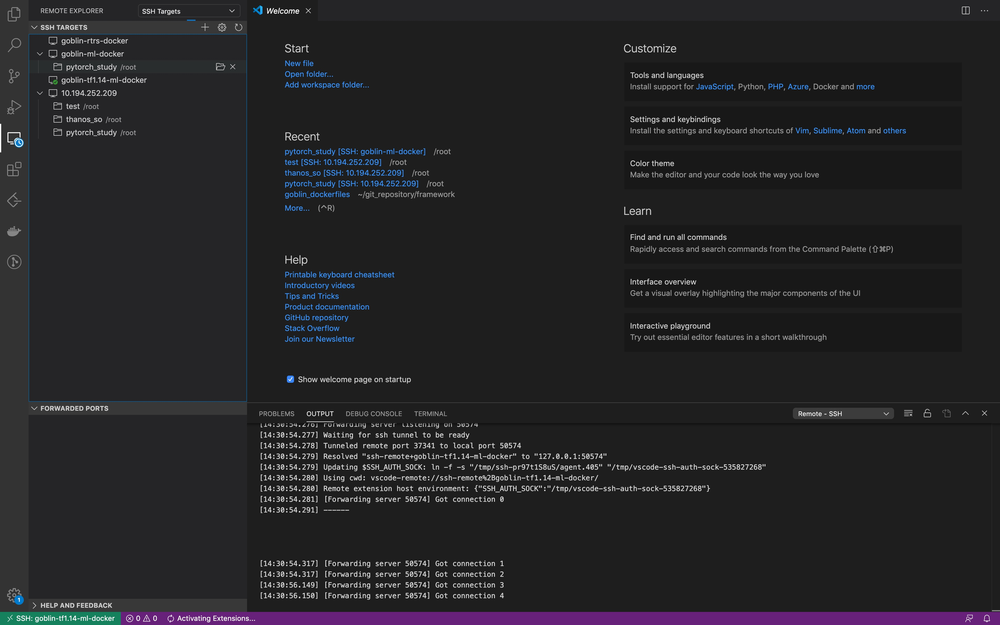
代码开发
c++
在本地安装好c++插件之后， 目前编辑器使用的就是goblin docker容器内的环境，直接打开容器镜像内挂载的ceph 目录：

c++相关的环境也比较方便，比如支持提示、智能跳转、查看源文件等等功能；


开发完成后，调出命令行， g++ helloworld.cc -o hellworld,当然，如果你的项目靠makefile或者cmake也可以的， 小伙伴们自己发挥吧；

编译完成之后， 执行即可

python
业务同学更多的可能是python的开发:
- 切换目录至pytorch_study的目录， 本目录是一个：
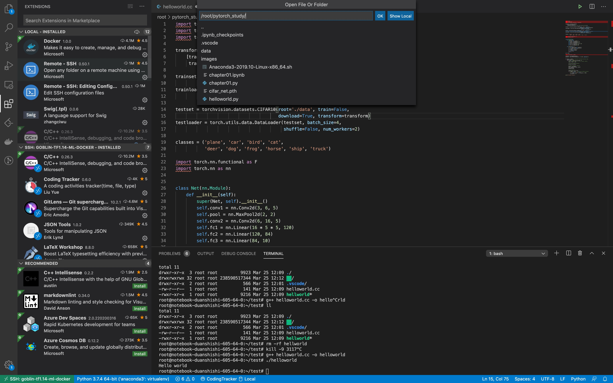
直接运行发现包缺失问题， 因为我们的镜像tf1.14中没有继承pytorch， 问题不大，我们在命令行安装即可：
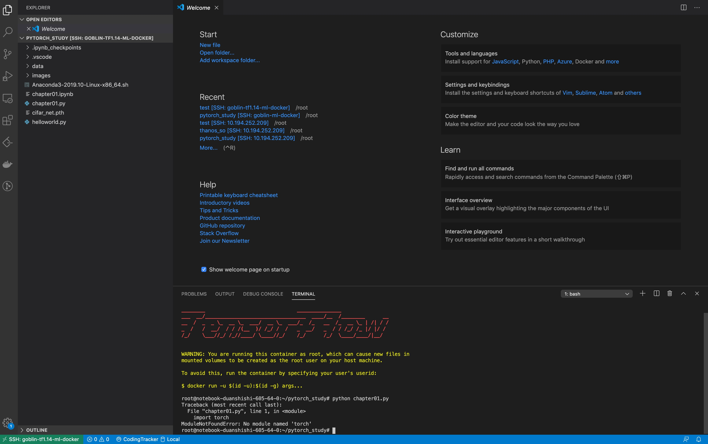

安装完成后， 我们也很方便的通过vscode 直接跳转到远端goblin docker下的文件进行代码的阅读：

模型开始训练
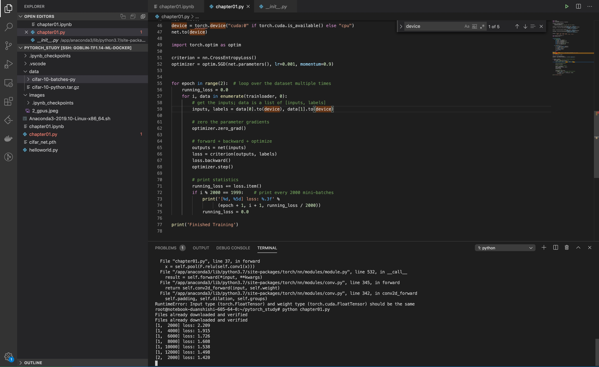
显卡占用查询，目前goblin docker有个bug，是无法查看显卡占用的线程，已在修复中：

其他IDE支持
我们团队自研的thanos 基于CMake来构建项目，目前也是基于Goblin Docker完成开发， 以下是基于clion上使用Goblin Docker完成编译的项目截图：

机器学习
Goblin提供的机器学习能力支持包括Jupyter Lab、python shell、大数据环境访问、远程开发等等能力，还支持GPU设备的分配、基于IronBaby的分布式能力等等
机器学习开发环境
Jupyter Lab 深度学习模型开发， 基于vscode远程开发的例子见上章pytorch_test的例子

模型训练调度
模型开发完成之后， 会定期更新训练数据完成模型训练，比如按天更新，针对模型训练调度的需求， Goblin提供了容器化调度组件

配置好，PVC、启动文件、启动参数、环境镜像，你可以快速将模型调度起来， 调度支持时间通配符， 你可以通过自定义你的python启动脚本完成各种自定义逻辑的调度策略；
模型部署
模型部署， 目前是基于Goblin上开发了模型发现服务，目前已经与线上精排系统打通， 用户可以通过简单地配置好模型目录地址、模型线上服务集群等基本信息，即可完成模型定时调度后的定时发布，该发布不仅包括模型，还包括模型场景使用到的词表、Embedding向量等等，因涉及到具体业务；目前我们也在和其他团队合作优化模型部署场景，这一块还有很多的工作来进行，后续应该会有专门工作介绍，这里就不详细描述了。
分布式机器学习
基于容器化的机器学习平台后， 分布式机器学习能力的扩展就变得十分容易，这里介绍我们团队的两个相关的工作：IronBaby、Thanos：
IronBaby
IronBaby是基于TensorFlow为底层框架的推荐系统工具包, IronBaby优势在于企业级的TensorFlow工程经验，对性能考虑比较全面，算法同学仅需要完成模型结构开发即可完成业务模型的开发与调试，目前已有若干场景使用IronBaby完成开发， 以下是某个demo实验场景中的一些配置：

模型训练、导出，仅需要几行即可实现：
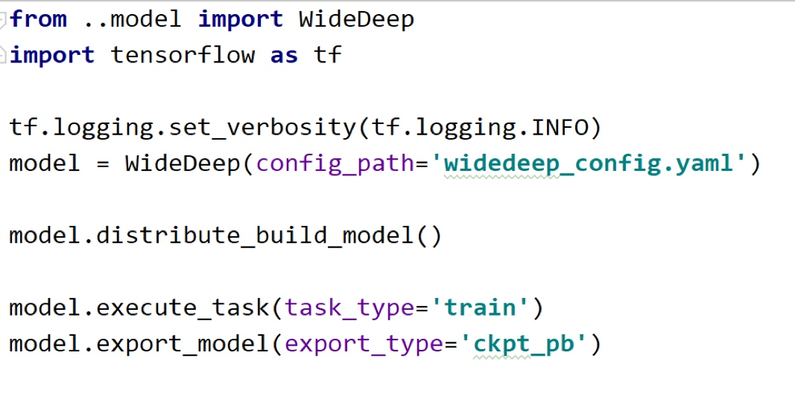
基于Goblin的IronBaby分布式：

当然也可以在前面提到的Jupyter Lab notebook中尝试用单机多卡：

某个业务场景评测数据：
单机多卡（1 server 3 worker）：

多机分布式加速比（Batch size 5120）：几乎线性加速，且我们发现，目前发现在我们业务很多场景瓶颈不在于计算、而在于IO， 这里有不同经验的人欢迎在下面留言，在杭州的小伙伴也欢迎疫情后约出来一起喝咖啡；

Thanos
Thanos是基于parameter server自研的机器学习框架，目前主要针对实时化场景，之前的文章有过分享，这里就不详述了，和IronBaby一样，Thanos是基于KuberFlow的tf_operator完成快速的改造，来支持分布式训练与调度的；
思考
在这块有一些思考，尤其是项目不断迭代的过程中， 我发现其实蛮有意思的
- 组件细还是粗： 首先是组件粗还是细，最开始，我们的思路参考了国内很多不同的云计算平台的机器学习平台，构建很多功能细致的组件，后来发现几乎没人使用，开发同学更偏向于将自己的业务逻辑代码化，而不是简单地拖拉，很多时候他们可能仅仅只需要一个自定义的容器化调度组件，其他的他们会自己来解决，比如特征id化等等，而云平台如PAI、Azure由于针对用户群体不同，更偏向把这部分逻辑也约束掉，但是在我们经验看来，过度细化的组件群基本上没有人来用， 拖拖拉拉的场景好像也并不合适；
- 必须要有一些舍弃：平台的工作大且宽泛，必须要要有一些舍弃，一定是有特别多的事情可以去完成，但是必须抓住平台用户的核心需求， 比如早期，我们曾经尝试抽象化通用算法能力， 后来发现，至少在近期这块其实是并不需要的， 真正贴近用户需求才是最迫切的， 通过和其他团队同学合作，完成模型部署（精排系统）的接入；
- 售后服务才是王道，才是开始：基本需求完成后， 我们发现和用户在一起才是开始， 用户会反馈各种各样的bug、各式各样的需求来促使我们去一步步修改、迭代我们原本的规划，很多时候，早期大而全的roadmap，并没有其必要性。为此我们通过维护专门的用户群，定期回访头部用户， 来迅速迭代我们的需求，以及要完成的工作；
- 不足、不足还是不足： 还有太多的工作没有完成，有太多太多的问题，比如稳定性、易用性等等，这其中更多的可能不是技术本身的问题， 团队协作、用户需求可能是我们需要特别关注的， 期待后面能做的更好。
Reference


raft 参考文章
分布式系统中，网络不可靠，主机的差异性（包块性能、时钟），主机的不可靠等特性，从而产生了分布式系统的一致性问题，我们要保障分布式中的主机以同样的顺序来执行指令，从而产生一致性的结果，使得整个分布式系统像一台主机。
一致性问题
分布式系统产生一致性问题的原因可总结如下：
网络不可靠
主机不可靠
主机之间的差异性（性能、时钟等）
首先，网络可能导致我们发送的数据或者指令以乱序的方式到达，也可能会丢失数据，其次主机时不可靠的，可能会出现宕机，重启等，主机之间的差异性，包括主机的性能和时钟，这些都会导致分布式系统难于实现一致性，FLP不可能理论指出无法彻底解决一致性问题，在CAP中我们只能选择两项，大多数的分布式系统都选择了最终一致性，即若一致性来保证可用性和分区容错性。
在实际的生产环境中，一致性算法需要具备以下属性：
安全性：即不管怎样都不能返回错误的结果；
可用性：主要大部门的机器正常，就仍然可以正常工作；
不依赖时间来确保一致,即系统是异步的；
一般情况下,运行时间由大多数的机器决定,不会因为有少部分慢的机器而影响总体效率
通俗来讲，一致性的问题可以分解为两个问题：
1、任何一次修改保证数据一致性
2、多次数据修改的一致性
弱一致性：不要求每次修改的内容在修改后多副本的内容是一致的，对问题1的解决比较宽松，更多解决问题2，该类算法追求每次修改的高度并发性，减少多副本之间修改的关联性，以获得更好的并发性能。例如最终一致性，无所谓每次用户修改后的多副本的一致性及格过，只要求在单调的时间方向上，数据最终保持一致，如此获得了修改极大的并发性能。
强一致性：强调单次修改后结果的一致，需要保证了对问题1和问题2要求的实现，牺牲了并发性能。
一致性算法有：两阶段提交算法、分布式锁服务、Paxos算法和Raft算法。
两阶段提交参见这里分布式事务
分布式锁服务参加这里分布式锁以及三种实现方式
下面主要介绍Paxos算法和Raft一致性算法。
Paxos算法
Paxos算法是一个会者简单，不会者觉得很难的算法，就连Lamport本文也不得不为Paxos先后做了三次解释。
查阅了很多资料，最后发现维基百科中对Paxos的解释最为准确和易懂，可见参考文件中。这里只是阐述算法的过程和原理，不再做深一步的证明和理解。
Paxos算法分为两个简单，分别是准备阶段（Prepare）和接受阶段（Accept），当Proposer接收到来自客户端的请求时，就会进入如下流程：

Paxos算法
只要Proposer经过多数派接受，该提案就会成为正式的决议。
Raft一致性算法
Raft是Paxos的变体，不过Raft简化了Paxos，任何时间内，只有leader能够发起提案，这就涉及到leader选举问题。
Raft算法中有一下三个角色：
1.Leader：负责 Client 交互 和 log 复制，同一时刻系统中最多存在一个；
2.Follower：被动响应请求 RPC，从不主动发起请求 RPC；
3.Candidate : 由Follower 向Leader转换的中间状态。
Leader选举过程：
在极简的思维下，一个最小的 Raft 民主集群需要三个参与者（如下图：A、B、C），这样才可能投出多数票。初始状态 ABC 都是 Follower，然后发起选举这时有三种可能情形发生。下图中前二种都能选出 Leader，第三种则表明本轮投票无效（Split Votes），每方都投给了自己，结果没有任何一方获得多数票。之后每个参与方随机休息一阵（Election Timeout）重新发起投票直到一方获得多数票。这里的关键就是随机 timeout，最先从 timeout 中恢复发起投票的一方向还在 timeout 中的另外两方请求投票，这时它们就只能投给对方了，很快达成一致。

Raft 协议强依赖 Leader 节点的可用性来确保集群数据的一致性。数据的流向只能从 Leader 节点向 Follower 节点转移。当 Client 向集群 Leader 节点提交数据后，Leader 节点接收到的数据处于未提交状态（Uncommitted），接着 Leader 节点会并发向所有 Follower 节点复制数据并等待接收响应，确保至少集群中超过半数节点已接收到数据后再向 Client 确认数据已接收。一旦向 Client 发出数据接收 Ack 响应后，表明此时数据状态进入已提交（Committed），Leader 节点再向 Follower 节点发通知告知该数据状态已提交。
Leader的选举问题
分布式一致性算法与共识算法总结
经典分布式一致性算法：
2 Phase commit protocol
3 phase commit protocol
Paxos： 唯一有效的一致性算法， 其他算法都改算法的某种程度的简化版
分布式一致性算法特点：
领域： 分布式数据库
目标： 其解决的问题是分布式系统如何就某个值（决议）达成一致。
只有一种算法： paxos
特点： 无拜占庭容错， n/2 +1,
主流的传统分布式一致性算法其实只有一个：Paxos。包括Raft在内的其他算法，都属于Paxos的变种，或特定假设场景下的Paxos算法。
传统分布式一致性算法和区块链共识机制的异同点
相同点
Append only
时间序列化
少数服从多数
分离覆盖（即长链覆盖短链区块，节点大数据量日志覆盖小数据量日志）
不同点
传统分布式一致性算法并不考虑拜占庭容错，只假设所有节点仅发生宕机、网络故障等非人为问题，没有考虑恶意节点。
传统分布式一致性算法面向数据库或文件，而区块链共识机制面向交易或价值传输。
详细介绍
经典的分布式一致性算法
Paxos算法
Paxos算法是莱斯利·兰伯特（Leslie Lamport）1990年提出的一种基于消息传递的一致性算法，其解决的问题是分布式系统如何就某个值（决议）达成一致。
从工程实践的意义上来说，通过Paxos可以实现多副本一致性、分布式锁、名字管理、序列号分配等。比如，在一个分布式数据库系统中，如果各节点的初始状态一致，每个节点执行相同的操作序列，那么他们最后得到的状态就是一致的。为保证每个节点执行相同的命令序列，需要在每一条指令上执行一个“一致性算法”以保证每个节点看到的指令一致。后续又增添多个改进版本的Paxos，形成了Paxos协议家族，但其共同点是不容易工程实现。
Lamport在2011年的论文Leaderless Byzanetine Paxos中表示，不清楚实践中是否有效，考虑Paxos本身实现的难度以及复杂程度，此方案工程角度不是最优，但是系统角度应该是最好的。
- Raft算法
Paxos协议的难以理解是出了名的，斯坦福大学的博士生Diego Ongaro把对其的研究作为了自己的博士课题。2014年秋天，他正式发表了博士论文CONSENSUS: BRIDGING THEORY AND PRACTICE，并给出了分布式一致性协议的一个实现算法，即Raft。
在论文正式发表前，Diego Ongaro还把与Raft相关的部分摘了出来，形成了一篇十多页的文章In Search of an Understandable Consensus Algorithm，即人们俗称的Raft论文。
Raft算法主要注重协议的落地性和可理解性，让分布式一致性协议可以较为简单地实现。Raft和Paxos一样，只要保证n/2+1节点正常就能够提供服务；同时，Raft更强调可理解性，使用了分而治之的思想把算法流程分为选举、日志复制、安全性三个子问题。
在一个由Raft协议组织的集群中有三类角色：Leader（领袖）、Follower（群众）、Candidate（候选人）。Raft开始时在集群中选举出Leader负责日志复制的管理，Leader接受来自客户端的事务请求（日志），并将它们复制给集群的其他节点，然后负责通知集群中其他节点提交日志，Leader负责保证其他节点与他的日志同步，当Leader宕掉后集群其他节点会发起选举选出新的Leader。
共识算法
当我们描述传统分布式一致性算法时，其实是基于一个假设——分布式系统中没有拜占庭节点（即除了宕机故障，没有恶意篡改数据和广播假消息的情况）。而当要解决拜占庭网络中的数据一致性问题时，则需要一种可以容错的算法，我们可以把这类算法统称为拜占庭容错的分布式一致性算法。而共识机制，就是在拜占庭容错的分布式一致性算法基础上，根据具体业务场景传输和同步数据的通信模型。
- 工作量证明机制（Proof of Work, POW）
POW依赖机器进行数学运算来获取记账权，资源消耗相比其他共识机制高、可监管性弱；同时，每次达成共识需要全网共同参与运算，性能效率比较低，容错性方面允许全网50%节点出错。第一个运用POW的是比特币系统，它能够使更长总账的产生具有计算性难度，平均每10分钟有一个节点找到一个区块
- 股权证明机制（Proof of Stake, POS）
股权证明机制已有很多不同变种，但基本概念是产生区块的难度应该与用户在网络里所占的股权成比例
- 授权股权证明机制（DPOS）
每个股东可以将其投票权授予一名代表，获票数最多的前100名代表按既定时间表轮流产生区块。所有代表将收到等同于一个平均水平的区块所含交易费的10%作为报酬，如果一个平均水平的区块含有100股作为交易费，则一名代表将获得1股作为报酬。
该模式每30秒便可产生一个新区块，在正常的网络条件下区块链分叉的可能性极小，即使发生也可以在几分钟内得到解决。
- 实用拜占庭协议（PBFT）
PBFT是一种基于消息传递的一致性算法，算法经过三个阶段达成一致性，这些阶段可能因为失败而重复进行。
假设节点总数为3f+1，f为拜占庭错误节点：
（1）当节点发现leader作恶时，通过算法选举其他的replica为leader；
（2）leader通过pre-prepare 消息把它选择的value广播给其他replica节点，其他replica节点如果接受则发送 prepare，如果失败则不发送；
（3）一旦2f个节点接受prepare消息，则节点发送commit消息；
（4）当2f+1个节点接受commit消息后，代表该value值被确定。
b6b2c783ac6f4c0687543a5fc82fa405_th.jpg.png
该算法主要应用在hyperledger fabric等联盟区块链或私有区块链场景中，容错率低、灵活性差，超过1/3的节点作恶就会导致系统崩溃，并且不可动态添加节点（部分论文讨论了动态节点的PBFT算法，但是理论和实践上都有比较强的假设条件）。
- GEAR共识协议（Group Estimate and Rotate）
该协议是唐盛（北京）物联技术有限公司自主研发的共识协议，通过轮转记账（rotate）、集体评估（group estimate）和齿轮共识路由（gear）三个子协议组成，结合区块链数据结构和点对点网络通信的特点，实现安全、高效、去中心化、应用场景灵活的数据同步共识。目前，该协议已经在“唐盛链”中得到应用。
协议的参与者包括轮转见证人（rotate witness）、一级集体评估人（voter）、二级集体评估人（valuer）。Voter作为接入共识网络的用户，既是系统的使用者也是一级集体评估人，按照其所持代币加权评估选举出轮转见证人，轮转见证人按照等概率轮流记账（产生区块）。二级集体评估人是在评估事件发生时由轮转见证人转化而来，通过加权平均的接近率抢夺一次记账机会
作者：millerix
链接：https://www.jianshu.com/p/9a9290fb0727
来源：简书
著作权归作者所有。商业转载请联系作者获得授权，非商业转载请注明出处。
容灾【备份】
原文链接https://juejin.im/post/5d2030616fb9a07eea3292f1
本文是Fault-Tolerant VM论文的阅读笔记。本文实现了一个容错虚拟机，在另外一个服务器上备份主虚拟机的运行。可以有两种实现思路：
备份全部状态的变化到备份虚拟机（包括CPU、内存、I/O设备）。但是，这样一来需要传输处理的数据内容将十分巨大。
将虚拟机视为确定状态机，这是本文的方法。只需要初始状态和确定的输入，以及记录一些不确定事件即可完成备份。
VMware已经在vSphere中实现了本文的虚拟机备份机制，能够在主虚拟机发生故障之后无缝启用备份虚拟机。目前这个技术只支持单核处理器，因为多核处理器指令访存也是不确定的事件。当然，本文实现的备份机制奏效的前提是故障在被外部发现之前都能被检测到。
基础的容错设计
一个容错的配置如下图所示，对于一台虚拟机（主虚拟机）而言，我们在其他物理服务器上运行一台备份虚拟机，两台主机处于虚拟锁步状态。它们会连接到同一个共享磁盘。其中，所有的输入（包括网络、鼠标、键盘等等）只会交给主虚拟机，然后通过日志信道发送给备份虚拟机。

确定回放实现
复制虚拟机的运行主要面临三个挑战：
正确地捕获所有的输入和必要的不确定事件来保证备份虚拟机的确定运行，
正确地将输入和不确定性应用到备份虚拟机
保证不降低性能
不过，VMware vSphere已经提供了VMware确定回放[2]功能。
容错协议
输出要求：如果备份虚拟机在故障之后替代了主虚拟机，备份虚拟机运行期间要保证外界得到的输出是完全一致的。
复制代码
只有满足了输出要求，外界才不会观测到故障的发生，而这个要求需要延迟外部输出直到备份虚拟机收到足够的信息来重放输出操作。一个必要的条件就是备份虚拟机需要收到输出操作之前的所有日志。备份虚拟机不能在输出操作之前上线，因为可能主虚拟机中会存在不确定事件取消了后续的输出。
输出规则：主虚拟机不会将输出发送给外界，直到收到了来自备份虚拟机收到产生输出的操作的日志的确认。
复制代码
容错协议如下图所示，异步事件、输入和输出操作发送给了备份虚拟机，主虚拟机只有在备份虚拟机确认收到输出操作后输出。
不过协议无法保证重复输出，因为备份虚拟机无从知晓主虚拟机在输出之前还是之后崩溃，另外故障发生时发送给主虚拟机的包也会丢失。不过好在，网络基础设施、操作系统、应用程序通常都能处理丢包或者重复的情况。
故障检测和响应
在备份虚拟机取代主虚拟机之前，需要应用全部的日志。主虚拟机和备份虚拟机主要通过心跳包和日志通信来判断对方是否故障。为了解决脑裂问题，两个虚拟机需要通过共享磁盘上得知对方是否故障。如果主虚拟机故障，那么备份虚拟机取代主虚拟机，并创建一个新的备份虚拟机；如果备份虚拟机故障，那么创建一个新的备份虚拟机。
容错实现实践
启动和重启容错虚拟机
在启动主虚拟机或者备份虚拟机故障后，需要创建一个和主虚拟机相同状态的备份虚拟机，并且不能打断主虚拟机的运行。具体通过VMware VMotion实现，VMotion将虚拟机复制到另外一个物理服务器上，将源虚拟机作为主虚拟机，将目标虚拟机作为备份虚拟机。
备份虚拟机通常位于集群中另外一台服务器上，由vSphere调度选择放置的服务器，这些服务器能够访问共享的磁盘。
管理日志信道：
日志信道可以通过一个大的缓冲来实现，必要的时间可以控制主虚拟机的运行速度来保证备份虚拟机能够赶上。

容错虚拟机的操作
虚拟机会有各种各样的控制操作，例如关机、修改资源分配，这些其实都可以通过特殊的控制操作日志来实现。
容错机制给VMotion带来了挑战，VMotion用来无缝迁移虚拟机，要求在切换的时候挂起所有磁盘I/O。主虚拟机可以挂起磁盘I/O，但是备份虚拟机重复主虚拟机的，需要通过日志信道请求主虚拟机挂起磁盘I/O。
磁盘I/O实现中的问题：
实现磁盘I/O会面临以下问题
磁盘操作是非阻塞的，所以可以并行写入，但是由此引入了不确定性。解决方案是强制磁盘操作串行进行。
磁盘操作（DMA）和应用程序会并行操作同一块内存，引发数据竞争。解决方案是使用额外缓冲，读取磁盘时先将数据读入额外缓冲，写入磁盘时先将数据复制到额外缓冲。
当主虚拟机故障，备份虚拟机替代时，磁盘I/O可能没有完成。解决方案是重新执行磁盘操作，因为前两个方案已经避免了数据竞争，因此磁盘操作是可重入的。
网络I/O实现中的问题：
vSphere实现了一些网络方面的优化，例如直接从网络缓冲区取走数据，而不通过陷阱，但是这将带来不确定，因此需要禁用这个优化。另外也做了以下优化：
通过批量操作降低虚拟机陷阱和中断次数。
降低传输数据包的延迟：将发送操作和接收操作注册到TCP协议栈之中，保证立即发送和接收日志。
设计中的选择
是否共享磁盘
主虚拟机和备份虚拟机其实可以采用独立的磁盘，磁盘是内部存储，所以不需要满足输出要求，但是两个磁盘需要在启动容错之初进行同步。不过，这是脑裂问题就不能通过磁盘解决了，需要通过第三方协调服务器。

在备份虚拟机中执行磁盘读取操作
备份虚拟机也可以考虑直接从磁盘读取数据而不需要通过日志信道。但是这会导致备份虚拟机变慢，因为需要等待磁盘读取操作，并且需要处理读取故障，以及推迟写入操作保证之前的读取操作被备份服务器成功执行。
容灾【备份】
原文链接：http://blog.luoyuanhang.com/2017/05/20/ftvm-notes/
在分布式系统中，容错方法有很多种，常见的传统方法有：主/副服务器方法（当主服务器宕机之后，由副服务器来接管它的工作），这种方法通常需要机器之间的高带宽。
另外还有确定（deterministic）状态机方法：将另一台服务器初始化为和主服务器一样的状态，然后让它们都接受到同样的输入，这样它们的状态始终保持一致，但是这种方法对于非确定的（non-deterministic）操作并不适用。
本文中讨论的方法是使用虚拟机作为状态机，它具有以下优点：
操作全部被虚拟化
虚拟机本身就支持 non-deterministic 操作
虚拟机管理程序（Hypervision）能够记录所有在虚拟机上的操作，所以能够记录主服务器（Primary）所有操作，然后在副服务器（Backup）上进行演绎
基本设计方案
如图就是本文提到的容错系统的架构，一个 Primary，一个 Backup，Primary 和 Backup 之间通过 Logging Channel 进行通信，Primary 和 Backup 基本保持同步，Backup 稍稍落后，它们两个之间会通过 heartbeat 进行 fail 检测，并且它们使用共享磁盘（Shared Disk）。
确定（deterministic）操作的演绎
让两台机器初始状态相同，它们接受相同的输入，顺序相同，两台机器执行的任务的结果就会相同。
但是如果存在非确定的（non-deterministic）操作（比如中断事件、读取CPU时钟计数器的值操作就是非确定的），它会影响状态机的执行。
难点在于：
需要捕捉全部的输入和 non-deterministic 操作在保证 Backup 是deterministic 的
需要准确将全部输入和 non-deterministic 操作应用到 Backup 中
需要保证系统高效
设计方案为：将所有的 input 和 non-deterministic 操作写入到 log 中（file），对于 non-deterministic 操作还要记录和它相关的状态信息等，确保 non-deterministic 操作后Backup状态还是和 Primary 一致
FT（Fault-Tolerance）协议
FT 协议是应用于 logging channel 的协议，协议的基本要求为：
如果 Primary 宕机了，Backup 接替它的工作，Backup 之后向外界发出所有的 Output 要和 Primary 原本应当发送的一致。
为了保证以上的要求，设计如下系统：
Primary会在所有关于本次Output 的所有信息都发送给 Backup 之后（并且要确保 Backup 收到）才会把 output 发送给外界
Primary 只是推迟将 output 发送给外界，而不会暂停执行后边的任务
流程如图所示：
但是这种方法不能保证 output 只发出一次，如果 primary 宕机了，backup 不能判断它是在发送了 output 之前还是之后宕机的，因此 backup 会再发送一次 output。但是这个问题很容易解决，因为：
output 是通过网络进行发送的，例如 TCP 之类的网络协议能够检测重复的数据包
即使 output 被发送了2次其实也没关系。如果 output 是一个写操作，它会在同一个位置写入两次，结果不会发生变化；如果 output 是读取操作，读的内容会被放入 bounce buffer（为了消除 DMA 竞争），数据会在 IO 中断之后被送到
宕机检测
如何知道有机器宕机，在该系统中是十分重要的。该设计使用的是UDP heartbeat 机制来检测 Primary 与 Backup 之间的通信是否正常。
但是使用这种方法会存在裂脑问题（split-brain，Primary 和 Backup 同时宕机），该怎么解决呢？
该设计中使用了共享存储（Shared Storage），对它的操作是原子的，Primary 和 Backup不能同时进行一个操作（提供原子的 test-and-set 操作）
如果检测出 Primary 宕机，Backup 会成为 Primary，接替之前的工作，然后再寻找一个 Backup。
具体实现
启动/重启 Virtual Machine
如何启动一个和 Primary 状态一样的 Backup？
VMware Vmotion 操作能够将一台 VM 从一个 Server 完整的迁移到另一个 Server（只需要很短的中断），在该设计中的方法对 Vmotion 做了一点修改，不是进行迁移，而是直接克隆。
管理 Logging Channel
如图，该设计使用了一个大的 buffer，来保存 logging entries，Primary 把自己的 entry 存到 buffer 中，由 logging channel 发送给Backup 的 buffer，然后 Backup 从 buffer 读取命令执行。
如果 Backup 的 buffer 空了，没有命令执行了，Backup 会等待新的 entry
如果 Primary 的 buffer 满了，Primary 会等待，等 buffer 中有空余空间再继续执行
Disk I/O问题
disk 操作是并行的，同时对 disk 的同一位置进行操作会导致 non-deterministic
解决方案：检测 IO 竞争，使这些操作串行执行
Disk IO 使用 DMA（Direct Memory Access），同时访问内存同一位置的操作会导致 non-deterministic
解决方案：对 disk 操作的内存设置内存的页保护，但是这种方法代价太高；该设计中使用了 bounce buffer，它的大小和 disk 所操作的内存部分大小是一致的，read 操作直接将内容读入 buffer，当其他操作完成，写入内存，write 操作将写内容写入 buffer，之后再写入磁盘。
总结
Vmware 提出的这种 Primary/Backup 方法是分布式容错方法中非常重要的一部分，可以用在许多系统中，不仅仅是分布式存储（GFS 的容错方法），也可以用在分布式计算中，因为它是将所有的操作都记录下来，将它们重新在 Backup 上进行演绎，从而起到了备份的作用，能够做到容错（Fault-Tolerance）。


TensorFlow Sparse的一个优化
分布式TensorFlow在Sparse模型上的实践
前言
如果你去搜TensorFlow教程，或者分布式TensorFlow教程，可能会搜到很多mnist或者word2vec的模型，但是对于Sparse模型(LR, WDL等)，研究的比较少，对于分布式训练的研究就更少了。最近刚刚基于分布式TensorFlow上线了一个LR的CTR模型，支持百亿级特征，训练速度也还不错，故写下一些个人的心得体会，如果有同学也在搞类似的模型欢迎一起讨论。
训练相关
集群setup
分布式TensorFlow中有三种角色: Master(Chief), PS和Worker. 其中Master负责训练的启动和停止，全局变量的初始化等；PS负责存储和更新所有训练的参数(变量); Worker负责每个mini batch的梯度计算。如果去网上找分布式TensorFlow的教程，一个普遍的做法是使用Worker 0作为Master, 例如这里官方给出的例子。我个人比较建议把master独立出来，不参与训练，只进行训练过程的管理, 这样有几个好处:
独立出Master用于训练的任务分配，状态管理，Evaluation, Checkpoint等，可以让代码更加清晰。
Master由于任务比worker多，往往消耗的资源如CPU/内存也和worker不一样。独立出来以后，在k8s上比较容易分配不同的资源。
一些训练框架如Kubeflow使用Master的状态来确定整个任务的状态。
训练样本的分配
在sparse模型中，采用分布式训练的原因一般有两种:
数据很多，希望用多个worker加速。
模型很大，希望用多个PS来加速。
前一个就涉及到训练样本怎么分配的问题。从目前网上公开的关于分布式TF训练的讨论，以及官方分布式的文档和教程中，很少涉及这个问题，因此最佳实践并不清楚。我目前的解决方法是引入一个zookeeper进行辅助。由master把任务写到zookeeper, 每个worker去读取自己应该训练哪些文件。基本流程如下:
master
file_list = list_dir(flags.input_dir)
for worker, worker_file in zip(workers, file_list):
self.zk.create(f'/jobs/{worker}', ','.join(worker_file).encode('utf8'), makepath=True)
start master session ...
worker
wait_for_jobs = Semaphore(0)
@self.zk.DataWatch(f"/jobs/{worker}")
def watch_jobs(jobs, _stat, _event):
if jobs:
data_paths = jobs.decode('utf8').split(',')
self.train_data_paths = data_paths
wait_for_jobs.release()
wait_for_jobs.acquire()
start worker session ...
引入zookeeper之后，文件的分配就变得非常灵活，并且后续也可以加入使用master监控worker状态等功能。
使用device_filter
启动分布式TF集群时，每个节点都会启动一个Server. 默认情况下，每个节点都会跟其他节点进行通信，然后再开始创建Session. 在集群节点多时，会带来两个问题：
由于每个节点两两通信，造成训练的启动会比较慢。
当某些worker挂掉重启（例如因为内存消耗过多），如果其他某些worker已经跑完结束了，重启后的worker就会卡住，一直等待其他的worker。此时会显示log: CreateSession still waiting for response from worker: /job:worker/replica:0/task:x.
解决这个问题的方法是使用device filter. 例如:
config = tf.ConfigProto(device_filters=["/job:ps", f"/job:{self.task_type}/task:{self.task_index}"])
with tf.train.MonitoredTrainingSession(
...,
config=config
):
...
这样，每个worker在启动时就只会和所有的PS进行通信，而不会和其他worker进行通信，既提高了启动速度，又提高了健壮性。
给session.run加上timeout
有时在一个batch比较大时，由于HDFS暂时不可用或者延时高等原因，有可能会导致session.run卡住。可以给它加一个timeout来提高程序的健壮性。
session.run(fetches, feed_dict, options=tf.RunOptions(timeout_in_ms=timeout))
优雅的停止训练
在很多分布式的例子里(例如官方的这个)，都没有涉及到训练怎么停止的问题。通常的做法都是这样:
server = tf.train.Server(
cluster, job_name=FLAGS.job_name, task_index=FLAGS.task_index)
if FLAGS.job_name == "ps":
server.join()
这样的话，一旦开始训练，PS就会block, 直到训练结束也不会停止，只能暴力删除任务(顺便说一下，MXNet更粗暴，PS运行完import mxnet就block了)。前面我们已经引入了zookeeper, 所以可以相对比较优雅的解决这个问题。master监控worker的状态，当worker全部完成后，master设置自己的状态为完成。PS和worker检测到master完成后，就结束自己。
def join():
while True:
status = self.zk.get_async('/status/master').get(timeout=3)
if status == 'done':
break
time.sleep(10)
master
for worker in workers:
status = self.zk.get_async(f'/status/worker/{worker}').get(timeout=3)
update_all_workers_done()
if all_workers_done:
self.zk.create('/status/master', b'done', makepath=True)
ps
join()
worker
while has_more_data:
train()
self.zk.set('/status/worker/{worker}', b'done')
join()
Kubeflow的使用
Kubeflow是一个用于分布式TF训练提交任务的项目。它主要由两个部分组成，一是ksonnet，一是tf-operator。ksonnet主要用于方便编写k8s上的manifest, tf-operator是真正起作用的部分，会帮你设置好TF_CONFIG这个关键的环境变量，你只需要设置多少个PS, 多少个worker就可以了。个人建议用ksonnet生成一个skeleton, 把tf-operator的manifest打印出来(使用ks show -c default), 以后就可以跳过ksonnet直接用tf-operator了。因为k8s的manifest往往也需要修改很多东西，最后还是要用程序生成，没必要先生成ksonnet再生成yaml.
Estimator的局限性
一开始我使用的是TF的高级API Estimator, 参考这里的WDL模型. 后来发现Estimator有一些问题，没法满足目前的需要。
一是性能问题。我发现同样的linear model, 手写的模型是Estimator的性能的5-10倍。具体原因尚不清楚，有待进一步调查。
UPDATE: 性能问题的原因找到了，TL;DR: 在sparse场景使用Dataset API时, 先batch再map(parse_example)会更快。详情见: https://stackoverflow.com/questions/50781373/using-feed-dict-is-more-than-5x-faster-than-using-dataset-api
二灵活性问题。Estimator API目前支持分布式的接口是train_and_evaluate, 它的逻辑可以从源代码里看到:
training.py
def run_master(self):
...
self._start_distributed_training(saving_listeners=saving_listeners)
if not evaluator.is_final_export_triggered:
logging.info('Training has already ended. But the last eval is skipped '
'due to eval throttle_secs. Now evaluating the final '
'checkpoint.')
evaluator.evaluate_and_export()
estimator.py
def export_savedmodel(...):
...
with tf_session.Session(config=self._session_config) as session:
saver_for_restore = estimator_spec.scaffold.saver or saver.Saver(
sharded=True)
saver_for_restore.restore(session, checkpoint_path)
...
builder = ...
builder.save(as_text)
可以看到Estimator有两个问题，一是运行完才进行evaluate, 但在大型的sparse model里，训练一轮可能要几个小时，我们希望一边训练一边evaluate, 在训练过程中就能尽快的掌握效果的变化(例如master只拿到test set, worker只拿到training set, 这样一开始就能evaluate)。二是每次导出模型时，Estimator API会新建一个session, 加载最近的一个checkpoint, 然后再导出模型。但实际上，一个sparse模型在TF里耗的内存可能是100多G，double一下会非常浪费，而且导出checkpoint也极慢，也是需要避免的。基于这两个问题，我暂时没有使用Estimator来进行训练。
使用feature column(但不使用Estimator)
虽然不能用Estimator, 但是使用feature column还是完全没有问题的。不幸的是网上几乎没有人这么用，所以我把我的使用方法分享一下，这其实也是Estimator的源代码里的使用方式:
define feature columns as usual
feature_columns = ...
example = TFRecordDataset(...).make_one_shot_iterator().get_next()
parsed_example = tf.parse_example(example, tf.feature_column.make_parse_example_spec(feature_columns))
logits = tf.feature_column.linear_model(
features=parsed_example,
feature_columns=feature_columns,
cols_to_vars=cols_to_vars
)
parse_example会把TFRecord解析成一个feature dict, key是feature的名称，value是feature的值。tf.feature_column.linear_model这个API会自动生成一个线性模型，并把变量(weight)的reference, 存在cols_to_vars这个字典中。如果使用dnn的模型，可以参考tf.feature_column.input_layer这个API, 用法类似，会把feature dict转换成一个行向量。
模型导出
使用多PS时，常见的做法是使用tf.train.replica_device_setter来把不同的变量放在不同的PS节点上。有时一个变量也会很大(这在sparse模型里很常见)，也需要拆分到不同的PS上。这时候就需要使用partitioner:
partitioner = tf.min_max_variable_partitioner(
max_partitions=variable_partitions,
min_slice_size=64 << 20)
with tf.variable_scope(
...,
partitioner = partitioner
):
# define model
由于TensorFlow不支持sparse weight(注意: 跟sparse tensor是两码事，这里指的是被训练的变量不能是sparse的), 所以在PS上存的变量还是dense的，比如你的模型里有100亿的参数，那PS上就得存100亿。但实际上对于sparse模型，大部分的weight其实是0，最终有效的weight可能只有0.1% - 1%. 所以可以做一个优化，只导出非0参数:
indices = tf.where(tf.not_equal(vars_concat, 0))
values = tf.gather(vars_concat, indices)
shape = tf.shape(vars_concat)
self.variables[column_name] = {
'indices': indices,
'values': values,
'shape': shape,
}
这样就把变量的非0下标，非0值和dense shape都放进了self.variables里，之后就只导出self.variables即可。
此外, 在多PS的时候，做checkpoint的时候一定要记得enable sharding:
saver = tf.train.Saver(sharded=True, allow_empty=True)
...
这样在master进行checkpoint的时候，每个PS会并发写checkpoint文件。否则，所有参数会被传到master上进行集中写checkpoint, 消耗内存巨大。
导出优化
前面提到的导出非0参数的方法仍有一个问题，就是会把参数都传到一台机器(master)上，计算出非0再保存。这一点可以由grafana上的监控验证:
可以看到，每隔一段时间进行模型导出时，master的网络IO就会达到一个峰值，是平时的好几倍。如果能把non_zero固定到PS上进行计算，则没有这个问题。代码如下:
for var in var_or_var_list:
var_shape = var.save_slice_info.var_shape
var_offset = var.save_slice_info.var_offset
with tf.device(var.device):
var = tf.reshape(var, [-1])
var_indices = tf.where(tf.not_equal(var, 0))
var_values = tf.gather(var_, var_indices)
indices.append(var_indices + var_offset[0])
values.append(var_values)
indices = tf.concat(indices, axis=0)
values = tf.concat(values, axis=0)
进行了如上修改之后，master的网络消耗变成下图:
参考Tensorboard, 可以看到gather操作确实被放到了PS上进行运算:
模型上线
我们目前在线上prediction时没有使用tf-serving, 而是将变量导出用Java服务进行prediction. 主要原因还是TF的PS不支持sparse存储，模型在单台机器存不下，没法使用serving. 在自己实现LR的prediction时，要注意验证线上线下的一致性，有一些常见的坑，比如没加bias, default_value没处理，等等。
使用TensorBoard来理解模型
在训练时用TensorBoard来打出Graph，对理解训练的细节很有帮助。例如，我们试图想象这么一个问题：在分布式训练中，参数的更新是如何进行的？以下有两种方案:
worker计算gradients, ps合并gradients并进行更新
worker计算gradients, 计算应该update成什么值，然后发给ps进行更新
到底哪个是正确的？我们看一下TensorBoard就知道了: TensorBoard 可以看到，FTRL的Operation是在PS上运行的。所以是第一种。
Metrics
在TensorFlow中有一系列metrics, 例如accuracy, AUC等等，用于评估训练的指标。需要注意的是TensorFlow中的这些metrics都是在求历史平均值，而不是当前batch。所以如果训练一开始就进行评估，使用TensorFlow的AUC和Sklearn的AUC，会发现TensorFlow的AUC会低一些，因为TensorFlow的AUC其实是考虑了历史的所有样本。正因如此Estimator的evaluate才会有一个step的参数，例如运行100个step，就会得到这100个batch上的metric.
性能相关
profiling
要进行性能优化，首先必须先做profiling。可以使用tf.train.ProfilerHook来进行.
hooks = [tf.train.ProfilerHook(save_secs=60, output_dir=profile_dir, show_memory=True, show_dataflow=True)]
之后会写出timeline文件，可以使用chrome输入chrome://tracing来打开。
我们来看一个例子: 上图中IteratorGetNext占用了非常长的时间。这其实是在从HDFS读取数据。我们加入prefetch后，profile变成下面这个样子: 可以看到，加入prefetch以后HDFS读取延时和训练时间在相当的数量级，延时有所好转。
另一个例子: 可以看到, RecvTensor占用了大部分时间，说明瓶颈在PS上。经调查发现是partition太多(64)个而PS只有8个，造成传输数据效率下降。调整partition数量后变成如下:
使用Grafana进行性能监控
可以使用Grafana和heapster来进行集群节点以及Pod的监控，查看CPU,内存,网络等性能指标。
apiVersion: extensions/v1beta1
kind: Deployment
metadata:
name: monitoring-grafana
namespace: kube-system
spec:
replicas: 1
template:
metadata:
labels:
task: monitoring
k8s-app: grafana
spec:
containers:
- name: grafana
image: k8s.gcr.io/heapster-grafana-amd64:v4.4.3
ports:
- containerPort: 3000
protocol: TCP
volumeMounts:
- mountPath: /etc/ssl/certs
name: ca-certificates
readOnly: true
- mountPath: /var
name: grafana-storage
env:
- name: INFLUXDB_HOST
value: monitoring-influxdb
- name: GF_SERVER_HTTP_PORT
value: "3000"
# The following env variables are required to make Grafana accessible via
# the kubernetes api-server proxy. On production clusters, we recommend
# removing these env variables, setup auth for grafana, and expose the grafana
# service using a LoadBalancer or a public IP.
- name: GF_AUTH_BASIC_ENABLED
value: "false"
- name: GF_AUTH_ANONYMOUS_ENABLED
value: "true"
- name: GF_AUTH_ANONYMOUS_ORG_ROLE
value: Admin
- name: GF_SERVER_ROOT_URL
# If you're only using the API Server proxy, set this value instead:
# value: /api/v1/namespaces/kube-system/services/monitoring-grafana/proxy
value: /
volumes:
- name: ca-certificates
hostPath:
path: /etc/ssl/certs
- name: grafana-storage
emptyDir: {}
apiVersion: v1
kind: Service
metadata:
labels:
# For use as a Cluster add-on (https://github.com/kubernetes/kubernetes/tree/master/cluster/addons)
# If you are NOT using this as an addon, you should comment out this line.
kubernetes.io/cluster-service: 'true'
kubernetes.io/name: monitoring-grafana
name: monitoring-grafana
namespace: kube-system
spec:
In a production setup, we recommend accessing Grafana through an external Loadbalancer
or through a public IP.
type: LoadBalancer
You could also use NodePort to expose the service at a randomly-generated port
type: NodePort
ports:
- port: 80
targetPort: 3000
selector:
k8s-app: grafana
部署到k8s集群之后，就可以分节点/Pod查看性能指标了。
ps/worker数量的设置
PS和worker的数量需要如何设置？这个需要大量的实验，没有绝对的规律可循。一般来说sparse模型由于每条样本的特征少，所以PS不容易成为瓶颈，worker:PS可以设置的大一些。在我们的应用中，设置到1:8会达到比较好的性能。当PS太多时variable的分片也多，网络额外开销会大。当PS太少时worker拉参数会发生瓶颈。具体的实验可以参见下节。
加速比实验
实验方法：2.5亿样本，70亿特征(使用hash bucket后)，提交任务稳定后(20min)记录数据。
worker PS CPU/worker (cores) CPU/PS (cores) total CPU usage (cores) memory/worker memory/PS total memory k example/s Network IO
8 8 1.5-2 0.7-0.8 19-23 2-2.5G 15G 150G 52 0.36 GB/s
16 8 1.3-2.6 1.0-1.4 40 2-2.5G 15G 170G 72 0.64 GB/s
32 8 1.8-2.3 1.5-2.0 70 2.2-3.0G 15G 216G 130 1.2 GB/s
64 8 1.5-2 4.0-6.4 150 2.2-3G 15G 288G 250 2.3 GB /s
64 16 1.7 2.9 169 2.2G 7.5G 300G 260 2.5 GB/s
128 16 1.5-2 3.9-5 278 2.2G 7.5G 469G 440 4.2 GB/s
128 32 1.5 2.5-3 342 2.2G 4-4.5G 489G 420 4.1 GB/s
160 20 1.2-1.5 3.0-4.0 360 2-2.5G 6-7G 572G 500 4.9 GB/s
160 32 1.2-1.5 1.0-1.4 388 2-2.5G 4-4.5G 598G 490 4.8 GB/s
结论:
worker消耗的内存基本是固定的；PS消耗的内存只跟特征规模有关;
worker消耗的CPU跟训练速度和数据读取速度有关; PS消耗的CPU和worker:PS的比例有关;
TensorFlow的线性scalability是不错的, 加速比大约可以到0.7-0.8;
最后加到160worker时性能提升达到瓶颈，这里的瓶颈在于HDFS的带宽(已经达到4.9GB/s)
在sparse模型中PS比较难以成为瓶颈，因为每条样本的特征不多，PS的带宽相对于HDFS的带宽可忽略不计
Future Work
文件分配优化
如果worker平均需要1个小时的时间，那么整个训练需要多少时间？如果把训练中的速度画一个图出来，会是类似于下面这样:
在训练过程中我发现，快worker的训练速度大概是慢worker的1.2-1.5倍。而整个训练的时间取决于最慢的那个worker。所以这里可以有一个优化，就是动态分配文件，让每个worker尽可能同时结束。借助之前提到的zookeeper, 做到这一点不会很难。
online learning
在online learning时，其实要解决的问题也是任务分配的问题。仍由master借助zookeeper进行任务分配，让每个worker去读指定的消息队列分区。
PS优化
可以考虑给TensorFlow增加Sparse Variable的功能，让PS上的参数能够动态增长，这样就能解决checkpoint, 模型导出慢等问题。当然，这样肯定也会减慢训练速度，因为变量的保存不再是数组，而会是hashmap.
样本压缩
从前面的实验看到，后面训练速度上不去主要是因为网络带宽瓶颈了，读样本没有这么快。我们可以看看TFRecord的实现：
message Example {
Features features = 1;
};
message Feature {
// Each feature can be exactly one kind.
oneof kind {
BytesList bytes_list = 1;
FloatList float_list = 2;
Int64List int64_list = 3;
}
};
message Features {
// Map from feature name to feature.
map<string, Feature> feature = 1;
};
可以看到，TFRecord里面其实是保存了key和value的，在sparse模型里，往往value较小，而key很大，这样就造成很大的浪费。可以考虑将key的长度进行压缩，减少单条样本的大小，提高样本读取速度从而加快训练速度。
基础知识背景
与其说TensorFlow是一套框架，更愿意说TensorFlow是一套语言，TensorFlow灵活性特别大，其本质在于构建一个计算图，计算图的各个节点按照计算逻辑，与资源配置情况分配到不同的计算设备上来进行计算，计算图整体的计算资源，比如计算设备CPU、GPU、线程池是框架本身来灵活配置的，而灵活性过大导致了TensorFlow无论在计算图、计算资源的适配上都需要花费额外的功夫才能保证模型训练效率，加上TensorFlow API的多种不同的魔性版本（比如CV场景，TensorFlow历史上支持多个完全不同的API封装，如Slim、Estimator、Keras等等）、以及文档上很多模棱两可的工作，在TensorFlow写好高效的模型即使是对一名资深的算法从业人员也是一件相对复杂的工作。
本文会在先通过支持多个业务的TensorFlow任务学习到知识来分享在很多业务场景下TensorFlow效果不高的原因，基于这样的背景，我们希望和算法同学分享下在云音乐推荐场景下，TensorFlow标准化的一些工作。
TensorFlow低效的几个原因分析
低效数据读取
数据读取部分一直是业务同学特别忽略的一个过程，通常业务数据，尤其是推荐、搜索场景下的业务数据，整体量差异很大，从数G到数T不止，如果预先拉取数据到本地进行存储，会额外增加耗时，TF本身提供了HDFS的数据访问方法，也提供了一套相应地高效地读取HDFS数据的方法，但是存在各种各样的问题：
- 读取数据接口API未能明显标识那些是python级别的接口函数、哪些是C++的接口函数，误用python数据读取接口时，由于python本身全局锁问题，导致性能极低；
- 对数据进行操作时，由于本身python在这方面的便利以及算法同学对numpy、scipy、pandas比较熟悉，容易引入python的操作，也会造成1中遇到的问题；
- 使用Dataset的API时，由于一般在推荐场景下数据存储在hdfs这类存储系统上，一般的读取接口没有做专项优化，未使用优化过的数据读取API；
- 未合理进行向量化操作，具体比如对dataset做map操作时，应在batch前还是batch后，batch后是向量化操作，而batch前是单个单个处理，函数调用次数前者远低于后者；
- 在配置环境来读取hdfs文件时，我们发现，hadoop环境会默认配置
MALLOC_ARENA_MAX环境变量，这个变量控制malloc的内存池，embedding_lookup_sparse的uniqueOp在被hadoop限制MALLOC_ARENA_MAX=4后会受很大影响；
频繁移动你的数据
在机器学习系统中，要想程序跑的快，有两个原则：
- 尽量减少数据的移动；
- 数据离计算尽可能近；
在写TF时，由于对API的不熟悉，很容易会造成数据的移动，通常这样不会产生太大的问题，但是在某些场景下，会导致大量的数据拷贝，不同设备之间的拷贝不仅会占用设备间的数据通道，也会耗费大量的原本可以用来计算的资源。
比较常见的问题是Graph内外数据的拷贝，如下code：
import tensorflow as tf
ds = read_from_tfrecord_fun(path)
with tf.Session() as sess:
data,label = sess.run(ds)
... # build your model
train_op = build_model()
with tf.Session() as sess:
while ...:
sess.run(train_op, feed_dict={"data": data, "label": label})
这部分代码相当于把整个模型的训练分为两个部分：第一个部分将数据从tfrecord文件中拿出，第二个部分将从tfrecord拿出的数据再feed进训练网络。
从功能上这个没有什么问题，但是仔细想想，这里涉及到graph到python内存的拷贝，然后从python内存拷贝到训练的graph中，并且由于python本身性能和GIL的影响，这里的耗时极大，并且这个拷贝是随着训练一致存在，假设你数据大小为100G，训练10个epoch，整个训练过程相当于不停地从graph内拷贝到python进程空间，然后从python进程空间拷贝到graph内，整个数据量为2*10*100G=2T，这部分的耗时相对于训练时间占很大比例。
资源非必需原因消耗
这一块有大概几个方面：
Graph自增节点
如下代码
def build_model(model_path):
model_input = tf.placeholder('float32', [1, IMAGE_HEIGHT, IMAGE_WIDTH, COLOR_CHANNELS])
......
return model_input,vec1
def get_ops(vec):
...
return new_vec
with tf.Session() as sess:
sess.run(tf.global_variables_initializer())
img_input, vec1_out = build_model("path/to/model")
for cur_img_path in imgs_path_list:
cur_img = load_image(cur_img_path)
vec1_out = sess.run(vec1, feed_dict = {img_input:cur_img}) # 正向传播输出模型中的vec1
new_vec = get_ops(vec1_out)
在对图像列表循环操作时，一直在不停地调用get_ops来产生新的节点，graph一直在变大，通常这个过程不会影响代码本身的正确性，但是由于一直在不停地扩展graph，会造成计算机资源一直在扩展graph，本身模型的计算会被大大地阻碍。
cache()
在使用dataset读取数据时，提供一个cache()的api，用于缓存读到之后处理完成的数据，在第一个epoch处理完成之后就会缓存下来，若cache()中未指明filename，则会直接缓存到内存，相当于把数据集所有数据缓存到了内存，直至内存爆掉；
不合理的gpu_config
TensorFlow在调用gpu时，由于仅在memory fraction层面来做了相关的切分来区分某个gpu被各自任务占用，这里会有很多问题，比如某个人物memory比较小，但是会一直占用gpu的kernel来进行计算，另外还有目前一些对于gpu的virtualDevices也会造成任务的速率有很大的问题，如下为config.proto中关于gpu的配置相关内容。
message GPUOptions {
double per_process_gpu_memory_fraction = 1;
bool allow_growth = 4;
string allocator_type = 2;
int64 deferred_deletion_bytes = 3;
string visible_device_list = 5;
int32 polling_active_delay_usecs = 6;
int32 polling_inactive_delay_msecs = 7;
bool force_gpu_compatible = 8;
message Experimental {
message VirtualDevices {
repeated float memory_limit_mb = 1;
}
repeated VirtualDevices virtual_devices = 1;
bool use_unified_memory = 2;
int32 num_dev_to_dev_copy_streams = 3;
string collective_ring_order = 4;
bool timestamped_allocator = 5;
int32 kernel_tracker_max_interval = 7;
int32 kernel_tracker_max_bytes = 8;
int32 kernel_tracker_max_pending = 9;
}
Experimental experimental = 9;
}
使用TensorFlow做模型计算之外的事情
TensorFlow在宣传时，期望all in TensorFlow， ALL In XX是所有开源框架的目标，但是是不可能的，所有系统都是一步一步的tradeoff的过程，在一方面性能的优势，必然在设计上会有另一方面的劣势。TensorFlow也不例外，尽管TensorFlow设计了很多data preprocess的api，这些api尽管在功能实现上完成了某些machine learning场景下基本的data preprocess的功能，但是从整个系统架构上来看，TensorFlow来进行data preprocess的工作本身并没有太多优势，相反会由于种种原因会造成很多额外的资源损耗与问题：
数据无法可视化
TensorFlow Data Preprocess Pipeline因为直接在graph内，其处理无法可视化，就是一些字节流，无法可视化，也无法验证准确性，机器学习是一个try and minimize error,如果仅能训练处数据而看不到数据，无异于让瞎子指挥交通，这一点上目前TensorFlow Data Process Pipeline并没有特别好的解决方案，传统的大数据解决方案相对来说会更具可行性。
更多适合data preprocess工具
其实，在数据处理上，有更多适合在Spark、Flink上去做，有几个方面的原因：
- 底层机器选择上，Spark、Flink的集群架构被用来设计做data preprocess，无论在性能、数据质量、各种指标监控上都有很成熟的经验,而深度学习主机并不适合来做data preprocess的工作；
- 一部分data preprocess的工作，尤其是计算复杂的data transform的工作可以计算完成之后cache到数据库当中，线上计算时不需要额外计算，而是直接缓存，如分桶、ID化这些工作；
- 被缓存的数据是one-stage finish的，而集成在TF中，后续模型上线这部分耗时会一直在存在，优化空间极易碰到天花板；
- 在实时场景下，我们通常会利用各种大数据工具来完成比如实时数据的校验，通过snapshot收集实时推荐反馈后的行为来形成正负样本，这块目前有很多有效的工具来完成，而使用TensorFlow Data Pipeline目前看来没有特别好的解决方案；
超参设计不合理
这类问题不能称得上是问题，只是算法在设计的时候应该考虑系统本身能力来做相关的优化，比如在考虑模型计算时间太长时，应该尽力保证large batch，这样会减少模型update的次数，从而从数据移动、数据拷贝的角度上来减少相关操作，关于large batch的training，facebook有相关的文章Training ImageNet in 1 Hour - Facebook Research来证明其实通过修改参数以及增加warm up可以达到STOA的指标。
另外包括模型结构、embedding、优化器，这类操作在某些场景下，也会严重影响模型训练的数据。这里分享一个case，关于adam优化器与embedding的一个TensorFlow的issue，当模型中包括一个embedding层时，比如亿级别的feature embedding，理论上模型只需更新其中出现过的feature对应的embedding，但是TensorFlow原始的adam会更新亿级别feature embedding中所有的feature embedding，而不是更新出现过的id embedding，当然TF针对此场景有LazyAdamOptimizer，但是坦白来讲效率也不高。因此，超参的不合理也是影响TensorFlow低效训练的因素之一。
Ironbaby: TensorFlow Recommendation Framework
由于TensorFlow做推荐相关算法开发有以上很多零零碎碎的问题，我们组开发了一套基于TensorFlow的推荐框架：Ironbaby，Ironbaby通过封装基本的操作接口，来固化下来一些比较对计算系统比较友好的操作，一方面能够有效地提高算法的运行效率；另一方面，由于标准化基本操作之后，能够更简便的对系统进行二次开发，比如机器学习平台的容器化改造，比如更方便地对接精排系统提供上线服务等等。
Ironbaby主要从以下几个方面来简化我们模型的构造以及训练过程：
- Ironbaby支持Sparse、Dense、Sequence三类数据接口，其中Sparse为稀疏类特征，Dense为稠密特征，Sequence类为不定长但有先后顺序关系的数据，每一个接入Ironbaby的任务，需保证数据处理为这三类之一，Ironbaby支持这三类数据的有效读写与处理，支持包括本地磁盘、cephfs、hdfs、kafka的数据读取方案，也提供local script以及spark script脚本来完成转换，其中spark仅需要在保存tfrecord时，保证column的type即可；
- Ironbaby推荐使用配置文件来完成任务模型信息的配置，配置文件的方式能够有效地统一平台对于任务的管理方式，比如任务的定时调度、任务信息监控等等；
- 更抽象层的封装，TensorFlow本身有多套相关的api来完成这些工作，但是其文档组织太过于繁琐且复杂，Ironbaby目前专注于推荐场景，对一些经常使用的部分进行了比较好的封装，比如cross module，可以通过简单配置来完成不同cross模块的支持；
- 基于estimator + tfrecord的高效数据读取方案，既能保证高效地数据读取、模型训练（杜绝了graph 内外拷贝的风险），也能够通过saved model的方式一键部署在业务系统完成在线推理；
- Ironbaby目前未使用任何data preprocess的api，我们任务进入Ironbaby的数据为处理好的数据，Ironbaby只负责模型计算的部分，其他如数据预处理应该有其他的更有效的数据处理工具来完成；
- Ironbaby严格控制TensorFlow中不同版本各类api的使用，比如不会频繁引入contrib中的api，所有Ironbaby中使用的api均是测试成功，能够保证基础性能，Ironbaby能够有效缓冲TensorFlow频繁更新与业务代码历史包袱的矛盾；
- Ironbaby通过标准化我们的模型训练，也能从另一方面去方便标准化我们模型训练周边相关的服务，比如模型监控、业务数据的监控、在线推理数据监控等等；
最后一点可能是所有规范化SDK的作用，业务同学如果能够使用统一APi完成模型的构建，在需要工程、框架同学支持时，能够有效地减少团队间沟通成本，没有规范的模型代码，需要更多地时间去消费其与问题不相关的逻辑，日积月累，这样的沟通成本对于整个团队都是不可忽视的。
目前Ironbaby已支持的功能
- 基础模型的封装：如DeepFM, Wide and Deep, XDeepFM, fibinet等模型已经实现，仅需要修改配置文件即可完成模型的训练、评估、离线预测、导出等功能；
- 支持扩展自定义网络结构：用户仅需要继承BabyModel，然后重写build_model_fn即可；
- 默认支持TensorBoard，能够有效地观测模型训练参数；
- 支持模型运行的训练、评估、离线预测、导出成saved_model提供给精排在线推理；
- 支持TensorFlow的parameter server分布式协议，仅需要配置文件配置好相关目录，后续会基于goblin打通k8s，完成资源的动态分配；
后言
任何对于Ironbaby感兴趣的想要尝试的同学欢迎联系我们团队，我们会提供持续的解决方案与相关能力的培训，目前已完成的文档，后续我们也会在我们gitlab项目主页上开放我们的roadmap，欢迎大家多多讨论


机器学习工程实践
过去半年，我们团队在机器学习平台上做过一些工作，因为最近看到几篇关于机器学习算法与工程方面的的文章，觉得十分有道理，萌发了总结一下这块的一些工作的念头，我最近工作主要分为两块：1，机器学习框架的研发、机器学习平台的搭建；2，基础NLP能力的业务支持。本篇文章会总结下在机器学习框架这部分系统工作上的一些工作，主要也分为两部分：1，经典框架的支持；2，自研框架的工作；

经典框架的支持
这里经典框架其实就是TensorFlow，目前TensorFlow在我司场景上主要集中在两部分场景：
- 搜索、推荐、广告等比较传统业务场景，提供包括召回、粗排、精排等核心流程的算法支持；
- 新兴业务如直播、社交等业务基础的算法能力的支持，构建内容生态， 如各业务内容审核、曲库、歌单、直播体系建设等方面;
具体一个case
算法业务有一个场景，根据用户过去session内的若干次（限制为定长）的访问记录，预测下一个访问内容，业务同学设计了一个DNN来召回这部分内容，然后，在精排阶段去排序。但是问题在于召回的整体候选集特别大，大概为30万， 因此，这个DNN模型就有了如下的结构：
初看，没有任何问题，设计一个多层mlp，来训练召回模型，且保证输入限制为定长K，通过过去K次浏览记录来召回下一次可能的内容， 很合理，且在业务上效果挺不错的。从算法业务同学的视角里，这完全没有任何问题，相信很多小伙伴在业务初期都会有类似的尝试，但是问题是当候选集为30万大小，或者更大时，想想这时候会发生什么？（感谢之前在腾讯手机qq浏览器的经验，yuhao做歧义消解的时候讨论过这个问题）
每一轮的迭代，必须有两个过程forward、backward， forward主要逻辑是基于预测值，backward主要逻辑是根据预测值和对应标签信息，然后更新梯度信息，如此大的输出节点数，每一次forward会计算30万的softmax然后计算loss，通过bp更新梯度，这其中的耗时可想而知，，相信很多小伙伴看到这里会突然想到word2vec针对这块的优化：Negative Sampling和Hierarchical Softmax， 专门用来解决输出维度过大的情况；google也发表了On Using Very Large Target Vocabulary for Neural Machine Translation，用于在Very Large Target Vocabulary部分的loss的计算，TensorFlow官方也支持https://www.tensorflow.org/api_docs/python/tf/nn/sampled_softmax_loss，改造sampled_softmax_loss之后，速度提升将近30%。
另外在支持业务的时候，还发现一个很有意思的东西，业务同学因为要在训练过程中看到一些预测的结果是否符合预期， 因此在每次sess.run()的时候都塞进去predict的op。但是呢，训练过程本身又是使用的softmax_cross_entropy，这就造成了一次sess.run()其实跑了两轮softmax，之前没有考虑这样的细节，在某天和业务同学一起优化时，猛然看到，修改后，速度直接提升了一倍，也就是说上述所有的计算其实都是在softmax相关的计算，其实真实的模型的更新可能95%以上的计算都在softmax，加上本身使用TensorFlow灵活性确实够大，predict、train又计算了两次softmax，耗时可想而知。
基于上述两个点优化之后，速度整体提升明显，但是回到算法模块的设计上，DNN在如此大的候选集上真的合适吗，在我看来，其实设计是可以更好的，微软在2013年的的文章有提到DSSM的工作https://www.microsoft.com/en-us/research/wp-content/uploads/2016/02/cikm2013_DSSM_fullversion.pdf， 后来业界优化dssm支持lstm、cnn子模块，用于推荐系统的召回，相信会是更好的方法，不存在输出空间太大的问题。
上述类似的问题应该出现在很多团队中，尤其是在新兴业务中的快速落地，无可厚非，设计了一套业务数据十分好看的模型，除了耗时多一些、内存多了一些，但是呢，对工程同学呢，这个是无法忍受的。不需要的地方，一点点的算力、一点点的比特的浪费都不能让，这是工程同学、尤其是机器学习工程同学基本的坚持。
hdfs小文件读取的优化
另外一块关于TensorFlow的优化是读取hdfs数据时，小文件的影响，场景是这样的，业务同学收集好数据之后，转为tfrecord，存到hdfs，然后本地通过TFRecordDataset去读取hdfs文件，速度很慢，通过一些工具分析，主要耗时集中在数据拉取过程中，但是其他业务场景下也不会有问题，后来拿到数据看了下，因为复用了部分代码，在spark上转tfrecord的时候默认partition为5000，而本身该场景数据量比较小，分割为5000后，每个文件特别小，而TensorFlow在读取tfrecord时，遇到小文件时，效率会特别低，其实不仅仅是在hdfs上，在ceph上也是，笔者之前也遇到小文件造成的数据读取的耗时严重影响模型训练的问题。
分布式方案如何选择
当单机无法满足性能之后，自然而然选择了分布式方案，那么分布式方案如何选择呢，业界有两套比较成熟的方案：
- 基于parameter server的分布式方案，能够有效支持模型并行、数据并行；
- 基于ring allreduce的分布式方案，能够有效支持数据并行；
两者之间差别在哪儿呢 ？
回答这个问题之前，我们先做一个算术题：
若一个场景，每200个batch耗时21秒左右，即一个batch约为0.1s，假设模型传参时间为一半，整体模型大小约为100M，如果仅做数据并行，也就是说每0.05s需要将整个模型通过网络传到另一台机器上，也就是要奖金2GB/s的带宽，换算成远远超过现在很多10Gb网卡的性能，而大家会存疑了，为啥每个batch 计算时间为啥仅有0.1s呢，这个可能吗，其实在推荐、广告这类场景下，这种情况极有可能，在推荐、广告这类场景下模型的特点在于embedding维度极大，但是本身消耗的算力比较小，耗时也很小，embedding仅仅是lookup 然后到较小维度的embedding向量，剩余的参数更新量极小。
所以要保证此类模型的并行效率，ring allreduce这类分布式方案，并不可行，网络必将成为瓶颈，那么如何选择呢？ parameter server目前看来是一套比较好的方案，模型并行，模型分布能够有效利用多个worker的网卡带宽，达到较高的加速效率。
而ring allreduce适合那些 model_size/batch耗时 较小的场景，比如cv场景下cnn model，其加速比几乎可以达到线性：
当然也有很多手段来在推荐场景上也使用ring allreduce，比如并不是每个batch都更新所有的梯度的信息，可以选择性的去传输部分梯度，通过合理的策略选择，也能达到很好的加速效率，这里就不详细展开了。
线上模型部署优化
模型部署这块的工作，因为涉及到线上，在我们看来更加重要。由于业务系统大部分基于Java构建，而机器学习框架本身大部分采用c/c++实现，因此我们采用jni的方式来打通java业务系统到c++模型的调用，将包括spark lgb、tensorflow还有我们自研的框架，进行封装，业务只需要指定模型引擎、写好模型出入处理，即可快速上线，这块后续会有团队小伙专门文章介绍，这里只描述一点可能算不上优化的优化，就是在TensorFlow框架中引入SIMD的支持，起先由于缺少这块的经验，并没有想到SIMD对于性能的提升，但业务RT过高时，发现原先TensorFlow CPU的线上的编译按TensorFlow默认教程，少了AVX、SSE的支持， 在引入AVX、SSE之后,线上性能提升明显，A场景从40ms降到了20ms，B场景从70+ms降到了40ms，读者里面有部署没有引入SIMD的，可以快速尝试下，很香，命令如下：
bazel build -c opt --copt=-msse3 --copt=-msse4.1 --copt=-msse4.2 --copt=-mavx --copt=-mavx2 --copt=-mfma //tensorflow/tools/pip_package:build_pip_package
自研框架

如上图，是自研框架的一个逻辑抽象图，整体框架分为三个角色：scheduler、Server、Worker，通过计算与存储分离，合理编排任务，达到高性能的分布式机器学习框架，这里不详细描述这块的设计，后续感兴趣会有专门的文章来描述,这里仅讨论下在自研框架上的几道坎。
自研框架路上的几道坎
部署工作
项目之初，因为基于Parameter Server的自研框架，不像Spark、Hadoop有现成的作业提交系统，团队开发了一套简单的实验工具，用于支持框架的开发：具体是基于docker作为环境的配置以及隔离工具， 自研deploy工具，发布多节点训练任务，镜像内打通线上大数据环境，可以任务实验环境发布后直接拉取节点来训练模型，现阶段已有较好的任务发布、资源调度系统，相信随着后续迭代会更加的合理以及完全。
其实这个就是一个鸡生蛋、蛋生鸡的问题，有的人认为要自研框架，需要先考虑支持工作，如何提交、如何监控， 连部署工具、任务调度都没有，怎么做框架？这是个特别好的问题，基建无法满足的情况应该多多少少会出现在很多团队上，怎么办？基建无法满足，开发就没办法进行下去吗？当然不是，作为工程师，完全可以开发一个极简版本，支持你的项目开发，记住这时你的目的是框架开发而非业务支持，框架开发过程中自然会找到解决方案，以前老大经常和我们提项目之初不能过度设计，我觉得还要加上一条，项目之初要抓住关键需求，然后来扣，一个复杂的系统永远不是完美的，也不是一个团队可以支持的，要联合可以联合的团队一起成长、一起攻克。
资源瓶颈
不管何时，资源的瓶颈或许说资源的限制一定会存在，对于一个好的系统一定是不断磨合不同流程、不同模块之间的性能来达到的,自研框架过程中，我们学习到一些经验：
定制数据处理逻辑
分布式机器学习框架，尤其是大规模离散场景下，单batch的样本稀疏程度十分大， 有值特征通常不到万分之一，在一轮迭代中仅仅只更新很小一部分参数，如下图
如图中粉红圆圈
原则上，但数据reader去解析数据文件中的数据时，理论上一次遍历即可拿到所有数据，此处考虑到计算能力，采用生产-消费者模式，配置好合适的cache，用来保存待消费的数据序列。放入cache的数据文件分片单位，如支持4个part，即表明cache内数据条数为4*part内条数据，读取文件数据时，应用format_parser来解释训练数据格式，然后进入cache， cache内部分进行shuffle，切分batch，切分batch过程中会计算每一个batch的nnz、key_set，用于后面分配计算空间以及向server拉取参数，参数拉取完成够， 每一个batch喂给计算模块去计算，shuffle batch on the fly。
可能各位大佬看到这里觉得不太高效，为什么是分块的载入cache，为啥不直接使用流式处理呢 ？ 流式处理是不是会更高效，因为这里考虑到shuffle这块的逻辑，流式上的shuffle设计会十分复杂，这里其实我们也考虑过，比如在cache上配置一个计时器，定时进行cache内数据的shuffle，理论上可以增加一定的shuffle逻辑，但其实也无法严格保证， 当然之前我们也考虑过直接在前面读取数据时，做全局的shuffle，类似于现在图像的读取逻辑，比如类似于lmdb的存储结构，其实质在于每个样本配置一个指针用于指定数据内存块，但是在推荐场景下，一般单个样本1k-1.5k大小，样本量十分大， 如果使用lmdb这套逻辑，理论上我可以通过指针序列进行全局的shuffle，快速定位到指针位置来取样本数据， 但是如此多的指针，本身的内存占用就变得很大了，不像图像，单个指针相对整个图像内存来说几乎忽略不计，我们在尝试之后，发现样本空间变得十分巨大， 拉取数据的增长远远超过我们的鳄鱼漆， 而在推荐场景下这个是我们没有采用的，而是采用分数据块读取，然后local shuffle的逻辑。
拒绝数据拷贝，减少内存压力
起初框架开发时，尽快我们考虑到性能问题，但多多稍稍还是没注意很多内存空间的拷贝以及不及时释放的问题，这块在单worker，或者worker数量较少的情况下，影响可忽略，但是当我们要将一台机器压到极致性能时，这块我们重新梳理了下，通过更改逻辑以及使用move操作去除 parser 等函数中不必要的数据拷（此处没有严格对比），预估能提升将近1/10的性能，尤其是训练样本数据块的拷贝，占用过多内存。
磁盘IO瓶颈
我们没有想到磁盘IO瓶颈来的如此快，反而一直担心网络IO， 后来查了下机器，就释然了，实验拿到的机器竟然是很老的机械磁盘（这里真的想吐槽规划这批机器的同事），磁盘速率极低，磁盘IO的等待远远超出预期，尤其是在第一个epoch从hdfs拉到本地缓存数据和读取数据块到内存时，磁盘IO被打满了。计算耗时在最严峻时，连整体耗时的五分之一都不到，磁盘IO成为了系统计算的瓶颈，减少了cache内存区大小也只不过减缓了这部分的压力，磁盘还是在大部分时间被打的满满的。
我们尝试过，编排数据读取部分平摊到整体任务计算的过程中，减少磁盘IO压力， 发现效果并不明显。最后我们通过将业务部分原始样本数据：大概480G的文本数据，通过Protobuf+gzip之后，压缩到差不多100G不到，单个文件大小从492M，转换后一个文件大小为 106M，相对降低了 78%。而读取单个文件的性能从原来的平均40s缩短至8s，相对减少了80%；，在数据读取部分进行反序列化，本以为反序列化会增加部分耗时，但发现在经过第一部分的优化之后，反序列化不增加额外耗时，且由于整体样本量减少到了1/5，磁盘IO完全不成问题了，也加上第一步的优化改造，整体的IO曲线很平稳且健康。
至此，磁盘IO等待符合预期，不再用磁盘IO瓶颈。
网络瓶颈，由于现在是比较简单的模型，暂时没有看到，本个季度应该会遇到，到时候再看。
特殊需求优化
考虑到部分业务，并没有实时化部署线上服务，需要预先离线计算结果，然后放到线上去做推荐，我们的分布式机器学习框架也做了一些离线的inference的优化，单台机器从30万/s的处理速度优化到170万/s的速度，用5台机器，200个cpu计算核70分钟完成370亿的样本的离线计算，整体内存占用仅180G。
具体优化包括以下几个方面：
1， 数据压缩，如前面提到采用protobuf+gzip后，提升明显；
2， 实现local_inference函数，因为此业务场景模型单机完全可以载入，去掉pull参数逻辑，直接从内存中拿到对应key，local inference时，每个worker载入全部参数；
3， 修改batch inference改为单条去查询，然后多线程计算结果，这里比较违反常识，理论上同事多个样本进行计算，向量化计算效率肯定更高，但是这里因为在local inference场景下，不像训练时，组成batch的matrix效率更高，local inference计算只有一个forward，计算耗时极小，整体耗时瓶颈并不在计算上，相反由于要组成一个batch的matrix增加的耗时要大于整体计算的耗时，而单个单个可以直接查询key来进行forward计算，且这里通过openmp，可以达到多线程加速的效果。
业务沟通
和业务交流沟通，永远是做底层同学最大的一道坎，彼此视角不同、技术方向不同、愿景也有差异，在暂不成熟的业务上，业务同学永远有1000种以上的方法去提升日活、留存、转化率，技术也许只是最后一个选择。
服务意识，是系统，尤其是像ml system这类并不是足够成熟的行业上必须要具备的，其实想想TensorFlow也就释然了，如此牛的一套东西，也还必须要全世界去pr，去培养用户使用机器学习的习惯。
未来规划
自研框架这套大概经历了四个多月的时间，也培养了两个比较给力的小伙伴，后续规划主要是向业务看齐，先满足业务，能预期的主要包括以下几个方面
实时化支持
改造业务离线模型，支持实时化，这套框架本身已经支持增量训练，更重要的改造是:1，利用现有大数据框架进行特征实时化；2，模型小时级训练（实时化其实也支持到位了，但目前业务需求不明显）；3，模型校验机制：需要有一套合适的机器判断小时级更新的模型是否应该上线。
参数通信模块优化
前面提到网络目前还没看到瓶颈，但是在涉及到更复杂一些的模型，更大维度的参数空间时，网络必将成为瓶颈，目前业界在大规模分布式框架上有一些减缓网络带宽压力的措施：1，梯度裁剪；2，梯度压缩；3，混合精度训练；
其他框架兼容
由于计算算子目前在很多现有的机器学习框架支持已经够丰富了， 后续会考虑支持TensorFlow、Pytorch， 参考xdl、byteps这类框架，也会看看能否支持统一的模型部署格式如onnx， 目前团队正在调研这部分工作，相信今年会在这块有一定的突破。
代码结构优化
目前团队每周会进行code review，后续会进行几轮代码大范围重构，更加抽象一些逻辑，更加强调代码的复用：如增加register各类操作机制、更改layer到op层等等操作；
Maybe Best Practice With Sparse Machine Learning In TensorFlow
TensorFlow现状及背景
在机器学习这块，Estimator本身的封装能够适应比较多的Dense的场景，而对于Sparse的场景无论是官方demo还是一些业界的大牛都分享的比较少，在很多场景，比如libfm、libffm、Xgboost都支持直接libsvm, field-libsvm的格式中读入数据，训练模型没有原始的实现，没法直接调包使用，得自己在TensorFlow的框架上构造，所幸Estimator本身的框架支持自定义的input_fn，和自定义的model_fn，笔者过去一段时间工作之余研究了下，并实现了基于libsvm的Sparse Logistic Regression和Sparse Factorization Machine， 打通了从数据读取、模型训练、到TensorFlow Serving的部署。
TensorFlow中的sparse_tensor实现
我们读下sparse_tensor的源码，sparse_tensor.py, 很容易看出来sparse_tensor在TensorFlow中是一个高层的封装，主要包括indices, values, shape三个部分，这里很有意思，后面我实践中遇到一个大坑，可以通过这里解决，这里我先卖个关子；
sparse representation的好处
常见的稀疏矩阵的表示有csc，csr，在很多矩阵计算的库当中有使用，比如python中大家使用比较多的scipy，TensorFlow底层计算模块eigen，都是用类似的方式来表示稀疏矩阵，举个例子比如某个商户有500万个商品，而用户产生行为的商品必定远远小于500万，如果都是用dense表示，那么保存单个用户行为的商品数据需要500万个指，而采用稀疏数据表示则保存所需要的空间只需要和你才产生行为的商品数量有关，如下图100个用户的在500w上的行为数据如果用dense表示需要大概3G的空间；

需要保存100*5000000个int，而使用csc_matrix，
row = np.array(range(100))
col = np.zeros(100)
data = np.ones(100)
csc_matrix((data, (row, col)), shape=(100, 5000000))
我们只需要保存3*NNZ（这里就是100）个int，然后加上一个shape信息，空间占用大大减少；
在内存中，我们通常使用csc来表示Sparse Matrix，而在样本保存中，通常使用libsvm格式来保存
1 1:1 2:1 3:1 4:1 5:1 6:1 7:1 8:0.301 9:0.602 10:1 11:1 12:1 13:1 14:1 15:1 16:1 17:1 18:1 19:1 20:1 21:1 22:1
以空格为sep，label为1， 后续为feature的表示，格式为feature_id: feature_val, 在TensorFlow中我们可以使用TextlineDataset自定义input_fn来解析文本，其他很多相关的技术文章都有提及，但是作为一个程序员总感觉不想走已经走过的路，而且TF官宣tfrecord的读写效率高， 考虑到效率问题，我这里使用TFRecordDataset来做数据的读取；
LibSVM To TFRecord
解析LibSVM feature_ids, 和feature_vals， 很简单没有啥好说的， 直接贴代码，想要深入了解的，可以去看看TF的example.proto, feature.proto, 就大概能了解Example和Feature的逻辑了，不用闷闷地只知道别人是这样写的。
import codecs
import tensorflow as tf
import logging
logger = logging.getLogger("TFRecSYS")
sh = logging.StreamHandler(stream=None)
logger.setLevel(logging.DEBUG)
fmt = "%(asctime)-15s %(levelname)s %(filename)s %(lineno)d %(process)d %(message)s"
datefmt = "%a %d %b %Y %H:%M:%S"
formatter = logging.Formatter(fmt, datefmt)
sh.setFormatter(formatter)
logger.addHandler(sh)
class LibSVM2TFRecord(object):
def __init__(self, libsvm_filenames, tfrecord_filename, info_interval=10000, tfrecord_large_line_num = 10000000):
self.libsvm_filenames = libsvm_filenames
self.tfrecord_filename = tfrecord_filename
self.info_interval = info_interval
self.tfrecord_large_line_num = tfrecord_large_line_num
def set_transform_files(self, libsvm_filenames, tfrecord_filename):
self.libsvm_filenames = libsvm_filenames
self.tfrecord_filename = tfrecord_filename
def fit(self):
logger.info(self.libsvm_filenames)
writer = tf.python_io.TFRecordWriter(self.tfrecord_filename+".tfrecord")
tfrecord_num = 1
for libsvm_filename in self.libsvm_filenames:
logger.info("Begin to process {0}".format(libsvm_filename))
with codecs.open(libsvm_filename, mode='r', encoding='utf-8') as fread:
line = fread.readline()
line_num = 0
while line:
line = fread.readline()
line_num += 1
if line_num % self.info_interval == 0:
logger.info("Processing the {0} line sample".format(line_num))
if line_num % self.tfrecord_large_line_num == 0:
writer.close()
tfrecord_file_component = self.tfrecord_filename.split(".")
self.tfrecord_filename = self.tfrecord_filename.split("_")[0]+"_%05d.tfrecord"%tfrecord_num
writer = tf.python_io.TFRecordWriter(self.tfrecord_filename)
tfrecord_num += 1
logger.info("Change the tfrecord file to {0}".format(self.tfrecord_filename))
feature_ids = []
vals = []
line_components = line.strip().split(" ")
try:
# label = 1.0 if line_components[0] == "+1" else 0.0
label = float(line_components[0])
features = line_components[1:]
except IndexError:
logger.info("Index Error, line: {0}".format(line))
continue
for feature in features:
feature_components = feature.split(":")
try:
feature_id = int(feature_components[0])
val = float(feature_components[1])
except IndexError:
logger.info("Index Error: , feature_components: {0}",format(feature))
continue
except ValueError:
logger.info("Value Error: feature_components[0]: {0}".format(feature_components[0]) )
feature_ids.append(feature_id)
vals.append(val)
tfrecord_feature = {
"label" : tf.train.Feature(float_list=tf.train.FloatList(value=[label])),
"feature_ids": tf.train.Feature(int64_list=tf.train.Int64List(value=feature_ids)),
"feature_vals": tf.train.Feature(float_list=tf.train.FloatList(value=vals))
}
example = tf.train.Example(features=tf.train.Features(feature=tfrecord_feature))
writer.write(example.SerializeToString())
writer.close()
logger.info("libsvm: {0} transform to tfrecord: {1} successfully".format(libsvm_filename, self.tfrecord_filename))
if __name__ == "__main__":
libsvm_to_tfrecord = LibSVM2TFRecord(["../../data/kdd2010/kdda.libsvm"], "../../data/kdd2010/kdda")
libsvm_to_tfrecord.fit()

转成tfrecord文件之后，通常比原始的文件要大一些，具体的格式的说明参考下https://cloud.tencent.com/developer/article/1088751 这篇文章比较详细地介绍了转tfrecord和解析tfrecord的用法，另外关于shuffle的buff size的问题，个人感觉问题并不大，在推荐场景下，数据条数多，其实内存消耗也不大，只是在运行前会有比较长载入解析的时间，另外一个问题是，大家应该都会提问的，为啥tfrecord会比自己写input_fn去接下文本文件最后来的快呢？
这里我只能浅层意义上去猜测，这部分代码没有拎出来读过，所以不做回复哈，有读过源码，了解比较深的同学可以解释下
TFRecord的解析
import tensorflow as tf
class LibSVMInputReader(object):
def __init__(self, file_queue, batch_size, capacity, min_after_dequeue):
self.file_queue = file_queue
self.batch_size = batch_size
self.capacity = capacity
self.min_after_dequeue = min_after_dequeue
def read(self):
reader = tf.TFRecordReader()
_, serialized_example = reader.read(self.file_queue)
shuffle_batch_example = tf.train.shuffle_batch([serialized_example],
batch_size=self.batch_size, capacity=self.capacity,
min_after_dequeue=self.min_after_dequeue)
features = tf.parse_example(shuffle_batch_example, features={
"label" : tf.FixedLenFeature([], tf.float32),
"feature_ids": tf.VarLenFeature(tf.int64),
"feature_vals": tf.VarLenFeature(tf.float32)
})
batch_label = features['label']
batch_feature_ids = features['feature_ids']
batch_feature_vals = features['feature_vals']
return batch_label, batch_feature_ids, batch_feature_vals
个人读了一些解析tfrecord的几个格式的源码，现在还有点乱，大概现在貌似代码中有支持VarLenFeature, SparseFeature, FixedLenFeature, FixedLenSequenceFeature这几种，但是几个api的说明里面貌似对sparsefeature的支持有点磨砺两可，所以选择使用VarLenFeature上面的方式， 不知道这里SparseFeature是怎么玩的，有时间还得仔细看看。
然后，简单写个读取的demo：
import tensorflow as tf
from libsvm_input_reader import LibSVMInputReader
from sparse2train import Sparse2Train
filename_queue = tf.train.string_input_producer(["../../data/kdd2010/kdda_t.tfrecord"], num_epochs=1, shuffle=True)
lib_svm_input_reader = LibSVMInputReader(filename_queue, 2, 1000, 200)
init_op = tf.group(tf.initialize_all_variables(),tf.initialize_local_variables())
batch_label, batch_feature_ids, batch_feature_vals = lib_svm_input_reader.read()
with tf.Session() as sess:
sess.run(init_op)
coord = tf.train.Coordinator()
threads = tf.train.start_queue_runners(sess=sess, coord=coord)
try:
step = 0
while not coord.should_stop():
step += 1
print "step: {0}".format(step)
batch_label_list, batch_feature_ids_list, batch_feature_vals_list = sess.run([batch_label, batch_feature_ids, batch_feature_vals])
print(batch_feature_ids_list)
# sparse_2_train_obj = Sparse2Train(batch_label_list, batch_feature_ids_list, batch_feature_vals_list)
# batch_label_array, batch_feature_ids_array, batch_feature_vals_array = sparse_2_train_obj.fit()
# print batch_feature_ids_array
# print batch_feature_vals_array
except tf.errors.OutOfRangeError:
print "Done Training"
finally:
coord.request_stop()
coord.join(threads)
大家可以动手跑跑看，仔细研究的话会发现一些比较有意思的东西，比如VarLenFeature出来的是一个SparseTensor，
这里我最开始是打算每次sess.run，然后转换为numpy.array, 然后再喂feed_dict到模型，但是觉得这样会很麻烦，速度会是瓶颈，如果能过直接使用这里的SparseTensor去做模型的计算，直接从tfrecord解析，应该会比较好，但是又会遇到另一个问题，后面再详细说明；这里简单提下，我这边就是直接拿到两个SparseTensor，直接去到模型，所以模型的设计会和常规的算法会有不同；
Sparse Model的高效实现
import tensorflow as tf
class SparseFactorizationMachine(object):
def __init__(self, model_name="sparse_fm"):
self.model_name = model_name
def build(self, features, labels, mode, params):
print("export features {0}".format(features))
print(mode)
if mode == tf.estimator.ModeKeys.PREDICT:
sp_indexes = tf.SparseTensor(indices=features['DeserializeSparse:0'],
values=features['DeserializeSparse:1'],
dense_shape=features['DeserializeSparse:2'])
sp_vals = tf.SparseTensor(indices=features['DeserializeSparse_1:0'],
values=features['DeserializeSparse_1:1'],
dense_shape=features['DeserializeSparse_1:2'])
if mode == tf.estimator.ModeKeys.TRAIN or mode == tf.estimator.ModeKeys.EVAL:
sp_indexes = features['feature_ids']
sp_vals = features['feature_vals']
print("sp: {0}, {1}".format(sp_indexes, sp_vals))
batch_size = params["batch_size"]
feature_max_num = params["feature_max_num"]
optimizer_type = params["optimizer_type"]
factor_vec_size = params["factor_size"]
# first part
bias = tf.get_variable(name="b", shape=[1], initializer=tf.glorot_normal_initializer())
w_first_order = tf.get_variable(name='w_first_order', shape=[feature_max_num, 1], initializer=tf.glorot_normal_initializer())
linear_part = tf.nn.embedding_lookup_sparse(w_first_order, sp_indexes, sp_vals, combiner="sum") + bias
# second part
w_second_order = tf.get_variable(name='w_second_order', shape=[feature_max_num, factor_vec_size], initializer=tf.glorot_normal_initializer())
embedding = tf.nn.embedding_lookup_sparse(w_second_order, sp_indexes, sp_vals, combiner="sum")
embedding_square = tf.nn.embedding_lookup_sparse(tf.square(w_second_order), sp_indexes, tf.square(sp_vals), combiner="sum")
sum_square = tf.square(embedding)
# square_sum =
second_part = 0.5*tf.reduce_sum(tf.subtract(sum_square, embedding_square), 1)
y_hat = linear_part + tf.expand_dims(second_part, -1)
# y_hat = linear_part
predictions = tf.sigmoid(y_hat)
print "y_hat: {0}, second_part: {1}, linear_part: {2}".format(y_hat, second_part, linear_part)
pred = {"prob": predictions}
export_outputs = {
tf.saved_model.signature_constants.DEFAULT_SERVING_SIGNATURE_DEF_KEY: tf.estimator.export.PredictOutput(predictions)
}
if mode == tf.estimator.ModeKeys.PREDICT:
return tf.estimator.EstimatorSpec(
mode=mode,
predictions=predictions,
export_outputs=export_outputs)
loss = tf.reduce_mean(tf.nn.sigmoid_cross_entropy_with_logits(labels=labels, logits=tf.squeeze(y_hat)))
if optimizer_type == "sgd":
opt = tf.train.GradientDescentOptimizer(learning_rate=params['learning_rate'])
elif optimizer_type == "ftrl":
opt = tf.train.FtrlOptimizer(learning_rate=params['learning_rate'],)
elif optimizer_type == "adam":
opt = tf.train.AdamOptimizer(learning_rate=params['learning_rate'])
elif optimizer_type == "momentum":
opt = tf.train.MomentumOptimizer(learning_rate=params['learning_rate'], momentum=params['momentum'])
train_step = opt.minimize(loss,global_step=tf.train.get_global_step())
eval_metric_ops = {
"auc" : tf.metrics.auc(labels, predictions)
}
if mode == tf.estimator.ModeKeys.TRAIN:
return tf.estimator.EstimatorSpec(mode=mode, predictions=predictions, loss=loss, train_op=train_step)
if mode == tf.estimator.ModeKeys.EVAL:
return tf.estimator.EstimatorSpec(mode=mode, predictions=predictions, loss=loss, eval_metric_ops=eval_metric_ops)
这里讲个Factorization Machine的实现，会比Sparse Logistic Regression的实现要稍微复杂一点，首先，模型的算法实现，比较简单，随便搜下应该大概都知道Factorization Machine的算法原理，fm主要包括两个部分，一个是LogisticRegression的部分，包括bias和一阶特征，另外一部分是把每一维特征表示为一个指定大小的vector，去从样本中去学习对训练有效的交叉信息：
bias = tf.get_variable(name="b", shape=[1], initializer=tf.glorot_normal_initializer())
w_first_order = tf.get_variable(name='w_first_order', shape=[feature_max_num, 1], initializer=tf.glorot_normal_initializer())
linear_part = tf.nn.embedding_lookup_sparse(w_first_order, sp_indexes, sp_vals, combiner="sum") + bias
# second part
w_second_order = tf.get_variable(name='w_second_order', shape=[feature_max_num, factor_vec_size], initializer=tf.glorot_normal_initializer())
embedding = tf.nn.embedding_lookup_sparse(w_second_order, sp_indexes, sp_vals, combiner="sum")
embedding_square = tf.nn.embedding_lookup_sparse(tf.square(w_second_order), sp_indexes, tf.square(sp_vals), combiner="sum")
sum_square = tf.square(embedding)
# square_sum =
second_part = 0.5*tf.reduce_sum(tf.subtract(sum_square, embedding_square), 1)
y_hat = linear_part + tf.expand_dims(second_part, -1)
# y_hat = linear_part
predictions = tf.sigmoid(y_hat)
这里和普通的fm唯一不同的是，我使用tf.nn.embedding_lookup_sparse 来计算WX，在海量特征维度的前提下，做全部的WX相乘是耗时，且没有必要的，我们只需要取出其中有值的部分来计算即可，比如kdd2010，两千万维的特征，但是计算WX其实就会考验系统的瓶颈，但是如果经过一个简单的tf.nn.embedding_lookup_sparse来替代WX，就会先lookup feature_id，对应的embedding的表示，然后乘以相应的weight，最后在每一个样本上进行一个combiner(sum)的操作，其实就是等同于WX，tf.nn.embedding_lookup_sparse(w_first_order, sp_indexes, sp_vals, combiner="sum"), 而在系统方面，由于计算只与NNZ(非零数)有关， 性能则完全没有任何压力。二阶的部分可以降低时间复杂度，相信应该了解FM的都知道，和的平方减去平方的和：
embedding_square = tf.nn.embedding_lookup_sparse(tf.square(w_second_order), sp_indexes, tf.square(sp_vals), combiner="sum")
sum_square = tf.square(embedding)
# square_sum =
second_part = 0.5*tf.reduce_sum(tf.subtract(sum_square, embedding_square), 1)
由上面的实现，我们只需要把特征的sp_indexes, sp_val传出来就可以了， 但是因为这两者都是SparseTensor，笔者开始想到的不是上述的实现，而是使用tf.sparse.placeholder， 然后喂一个feed_dict，对应SparseTensorValue就可以了，确实是可以的，模型训练没有问题，模型export出来也没有问题(其实是有问题的， 我这里重写了Estimator的build_raw_serving_input_receiver_fn使其支持SparseTensor)，但是在部署好TensorFlow Serving之后，我发现在客户端SparseTensorValue貌似不能组成一个TensorProto，tf.make_tensor_proto主要是把请求的值放进一个TensorProto，而TensorProto, https://github.com/tensorflow/tensorflow/blob/master/tensorflow/core/framework/tensor.proto，貌似不能直接支持SparseTensorValue去放进TensorProto，所以就无法在部署好TensorFlow Serving后去请求（部署会在后文详细描述，这里我也想过能不能改他们的代码，但是貌似涉及太底层的东西，有点hold不住），但是也是有办法的，前面文章提到SparseTensor，在TensorFlow中是高阶的api，他其实就是由3个Tensor组成，是否可以把SparseTensor本身的3个Tensor暴露出来，然后请求的时候去组这三个Tensor就可以啦，所以只需要找到TFRecord接下出来的sp_indexes, sp_vals就可以了

从这里很容易看到sp_indexes, sp_vals的TensorName，然后用占位符替代，然后用这些去组成sp_indexes，sp_vals


说明下，这里我使用的kdd2010的数据，特征维度是20216831，样本数量8407752,我是用我15年的macbook pro跑的， 使用的sgd， 收敛还是比较明显的， 大家有兴趣可以试试，按以往经验使用其他优化器如adam，ftrl会在这种特征规模比较大的条件下有比较好的提升，我这里就走通整个流程，另外机器也不忍心折腾；
到了这里，就训练出来了一个可用的Sparse FM的模型，接下来要导出模型，这里的导出模型是导出一个暴露了placeholder的模型，可以在TensorFlow Serving被载入，被请求，不是单纯的ckpt；
模型部署
feature_spec = {
'DeserializeSparse:0': tf.placeholder(dtype=tf.int64, name='feature_ids/indices'),
'DeserializeSparse:1': tf.placeholder(dtype=tf.int64, name='feature_ids/values'),
'DeserializeSparse:2': tf.placeholder(dtype=tf.int64, name='feaurte_ids/shape'),
'DeserializeSparse_1:0': tf.placeholder(dtype=tf.int64, name='feature_vals/indices'),
'DeserializeSparse_1:1': tf.placeholder(dtype=tf.float32, name='feature_vals/values'),
'DeserializeSparse_1:2': tf.placeholder(dtype=tf.int64, name='feature_vals/shape')
}
serving_input_receiver_fn = tf.estimator.export.build_raw_serving_input_receiver_fn(feature_spec, is_sparse=False)
sparse_fm_model.export_savedmodel(servable_model_dir, serving_input_receiver_fn, as_text=True)
和前面构造模型的时候对应，只需要把DeserializeSparse的部分暴露出来即可
这里会以时间戳创建模型，保存成功后temp-1543117151会变为1543117151，接下来，就是要启动TensorFlow Serving载入模型：docker run -p 8500:8500 --mount type=bind,source=/Users/burness/work/tencent/TFRecSYS/TFRecSYS/runner/save_model,target=/models/ -e MODEL_NAME=sparse_fm -t tensorflow/serving，使用官方提供的docker镜像来部署环境很方便。

会先载入新的模型，然后unload旧模型，从命令行log信息可以看出gRPC接口为8500
剩下的，就下一个client，去请求
import grpc
import sys
sys.path.insert(0, "./")
from tensorflow_serving.apis import predict_pb2
from tensorflow_serving.apis import prediction_service_pb2_grpc
# from grpc.beta import implementations
import tensorflow as tf
from tensorflow.python.framework import dtypes
import time
import numpy as np
from sklearn import metrics
def get_sp_component(file_name):
with open(file_name, "r") as fread:
for line in fread.readlines():
fea_ids = []
fea_vals = []
line_components = line.strip().split(" ")
label = float(line_components[0])
for part in line_components[1:]:
part_components = part.split(":")
fea_ids.append(int(part_components[0]))
fea_vals.append(float(part_components[1]))
yield (label, fea_ids, fea_vals)
def batch2sparse_component(fea_ids, fea_vals):
feature_id_indices = []
feature_id_values = []
feature_vals_indices = []
feature_vals_values = []
for index, id in enumerate(fea_ids):
feature_id_values += id
for i in range(len(id)):
feature_id_indices.append([index, i])
for index, val in enumerate(fea_vals):
feature_vals_values +=val
for i in range(len(val)):
feature_vals_indices.append([index, i])
return np.array(feature_id_indices, dtype=np.int64), np.array(feature_id_values, dtype=np.int64), np.array(feature_vals_indices, dtype=np.int64), np.array(feature_vals_values, dtype=np.float32)
if __name__ == '__main__':
start_time = time.time()
channel = grpc.insecure_channel("127.0.0.1:8500")
stub = prediction_service_pb2_grpc.PredictionServiceStub(channel)
request = predict_pb2.PredictRequest()
request.model_spec.name = "sparse_fm"
record_genertor = get_sp_component("../../data/kdd2010/kdda_t.libsvm")
batch_size = 1000
predictions = np.array([])
labels = []
while True:
try:
batch_label = []
batch_fea_ids = []
batch_fea_vals = []
max_fea_size = 0
for i in range(batch_size):
label, fea_ids, fea_vals = next(record_genertor)
# print label, fea_ids, fea_vals
batch_label.append(label)
batch_fea_ids.append(fea_ids)
batch_fea_vals.append(fea_vals)
if len(batch_fea_ids) > max_fea_size:
max_fea_size = len(batch_fea_ids)
shape = np.array([batch_size, max_fea_size],dtype=np.int64 )
batch_feature_id_indices, batch_feature_id_values,batch_feature_val_indices, batch_feature_val_values = batch2sparse_component(batch_fea_ids, batch_fea_vals)
# print(batch_feature_val_indices)
request.inputs["DeserializeSparse:0"].CopyFrom(tf.contrib.util.make_tensor_proto(batch_feature_id_indices))
request.inputs["DeserializeSparse:1"].CopyFrom(tf.contrib.util.make_tensor_proto(batch_feature_id_values))
request.inputs["DeserializeSparse:2"].CopyFrom(tf.contrib.util.make_tensor_proto(shape))
request.inputs["DeserializeSparse_1:0"].CopyFrom(tf.contrib.util.make_tensor_proto(batch_feature_val_indices))
request.inputs["DeserializeSparse_1:1"].CopyFrom(tf.contrib.util.make_tensor_proto(batch_feature_val_values))
request.inputs["DeserializeSparse_1:2"].CopyFrom(tf.contrib.util.make_tensor_proto(shape))
response = stub.Predict(request, 10.0)
results = {}
for key in response.outputs:
tensor_proto = response.outputs[key]
nd_array = tf.contrib.util.make_ndarray(tensor_proto)
results[key] = nd_array
print("cost %ss to predict: " % (time.time() - start_time))
# print(results["prob"])
# print results
predictions = np.append(predictions, results['output'])
labels += batch_label
# print(predictions)
print(len(labels), len(predictions))
except StopIteration:
break
fpr, tpr, thresholds = metrics.roc_curve(labels, predictions)
print("auc: {0}",format(metrics.auc(fpr, tpr)))
# 1:1 2:1 3:1 4:1 5:1 6:1 7:1 8:0.301 9:0.602 10:1 11:1 12:1 13:1 14:1 15:1 16:1 17:1 18:1 19:1 20:1 21:1 22:1
# id_indices = np.array([[0,0],[0,1],[0,2],[0,3],[0,4],[0,5],[0,6],[0,7],[0,8],[0,9],[0,10],[0,11],[0,12],[0,13],[0,14],[0,15],[0,16],[0,17],[0,18],[0,19],[0,20],[0,21]], dtype=np.int64)
# id_values = np.array([1, 2, 3, 4, 5, 6, 7, 8, 9, 10, 11, 12, 13, 14, 15, 16, 17, 18, 19, 20, 21, 22], dtype=np.int64)
# id_shape = np.array([1,22], dtype=np.int64)
# val_indices = np.array([[0,0],[0,1],[0,2],[0,3],[0,4],[0,5],[0,6],[0,7],[0,8],[0,9],[0,10],[0,11],[0,12],[0,13],[0,14],[0,15],[0,16],[0,17],[0,18],[0,19],[0,20],[0,21]], dtype=np.int64)
# val_values = np.array([1.0, 1.0, 1.0, 1.0, 1.0, 1.0, 1.0, 0.301, 0.602, 1.0, 1.0, 1.0, 1.0, 1.0, 1.0, 1.0, 1.0, 1.0, 1.0, 1.0, 1.0, 1.0], dtype=np.float32)
# val_shape = np.array([1,22], dtype=np.int64)
# request.inputs["DeserializeSparse:0"].CopyFrom(tf.contrib.util.make_tensor_proto(id_indices))
# request.inputs["DeserializeSparse:1"].CopyFrom(tf.contrib.util.make_tensor_proto(id_values))
# request.inputs["DeserializeSparse:2"].CopyFrom(tf.contrib.util.make_tensor_proto(id_shape))
# request.inputs["DeserializeSparse_1:0"].CopyFrom(tf.contrib.util.make_tensor_proto(val_indices))
# request.inputs["DeserializeSparse_1:1"].CopyFrom(tf.contrib.util.make_tensor_proto(val_values))
# request.inputs["DeserializeSparse_1:2"].CopyFrom(tf.contrib.util.make_tensor_proto(val_shape))
# response = stub.Predict(request, 10.0)
# results = {}
# for key in response.outputs:
# tensor_proto = response.outputs[key]
# nd_array = tf.contrib.util.make_ndarray(tensor_proto)
# results[key] = nd_array
# print("cost %ss to predict: " % (time.time() - start_time))
# # print(results["pro"])
# print(results["output"])
开始用一个样本做测试打出pred的值，成功后，我将所有的测试样本去组batch去请求，然后计算下auc，对比下eval的时候的auc,差不多，那说明整体流程没啥问题，另外每1000个样本耗时大概270多ms，整体感觉还可以。
后续
基本到这里就差不多了，现在已经支持单个field的Logistic Regression和Factorization Machine，扩展性比较强，只需要重写算法的类，剩余的大部分都可以复用，接下来计划是支持multi-field的数据接入，会实现更高效的Sparse DeepFM, FNN, DIN, DIEN, 其实已经差不多了，现在正在弄可用性，希望能够通过配置文件直接串起整个流程。
深度解析为什么GAN能是Structured Learning的一种解决方案
Basic of GAN
Goodfellow微醉时与同学进行一次争论，Goodfellow在酒吧相处了GAN的技术：用一个模型对现实世界进行创造，再用另一个模型去分析结果并对图像的真伪进行识别。
300+ 相关GAN模型
Facebook的AI研究负责人杨立昆（Yann LeCun）将GAN称作“过去20年内在深度学习上最酷的想法”
Generator

Discriminator
The Relation between Generator And Discriminator
将Generator比喻成蝴蝶，Discriminator比喻成捕食者，蝴蝶为了不被捕食者捕杀而一步步进化成枯叶蝶，而捕食者由于食物减少也随之会学会更能判别枯叶蝶的能力：

步骤1： 使生成器G不更新，更新判别器D：

步骤2： 使判别器D不更新，更新生成器G:

伪代码：
In each train iteration:
- Sample m examples {x1, x2, ..., xm} from database
- Sample m noise samples {z1, z2, ..., zm} from a distribution
- Obtaining generated data {G(z1), G(z2), ..., G(zm)}
- Update discriminator parameter to maximize
- Loss_{\theta_{d}} = 1/m * (\sum_{1}^{m} log(D(xi)) + \sum_{1}^{m} log(1-D(G(zi))))
- \theta_d = \theta_d + learning_rate * \Delta(Loss_{\theta_{d}})
- Sample m noise samples {z1, z2, ..., zm} from a distribution
- Update generator parameter to maximize
- Loss_{\theta_{g}} = 1/m * \sum_{1}^{m} log(D(G(zi)))
- \theta_g = \theta_g - learning_rate * \Delta(Loss_{\theta_{g}})
GAN as structured learning
首先我们了解下什么叫做stuctured learning, 机器学习本质上是学习数据集到目标的映射函数 F:X->Y, 对比下机器学习下其他的场景，如回归、分类：
Regression: 输出为连续变量
Classification: 输出为类别（one-hot vector）
Structured Learning: 输出为序列、矩阵（图像）、树等等
Structured Learning的输出是彼此有前后依赖关系的， 比如一个好的系统输出一张生成的图像，图像有蓝天，天空中通常有鸟，但是不会有人（除非是超人），当我们把图像中每一个像素点看做一个components，我们知道这些components之间会有若干联系。
Structured Learning在实际的场景中很有用，比如Machine Translation、Speech Recognition、Chat-bot、Image Transform、Image to Text
Why Structured Learning Challenging
Structured Learning 主要有这几个方面的挑战：
- One-shot/Zero-shot Learning: 在分类任务中，每一个类别有若干个examples，而在Structured Learning，假如我们把components的某一种组合即生成的结果看做一个类别，你会发现类别特别大，不可能有如此多的数据来覆盖，Structured Learning，生成的图像可能在训练数据集中完全没有出现。因此，Structured Learning需要机器更加"智能"，需要学会创造，才能完成相应场景的任务；
- Machine has to learn to do planning： 前面有提到生成图像有蓝天、天空中有鸟，这些components之间有依赖关系，所有的components才能合成一张有意义的图像，Structured Learning必须要有这样的能力，才能完成相应场景的任务；
GAN: A Solution from Structured Learning
传统的在Structure Learning上相关的工作，主要集中在两部分：
- Bottom Up: 要产生一个完整的对象，如图像，需要从component一个一个分别产生，这种方法会失去大局观；
- Top Down: 从整体考虑，生成多个对象，然后找到最好的对象；
而GAN中，Generator就属于Bottom Up的方法，Discriminator属于Top Down的方法，接下来两节，我会详细解释如何理解Generator为Bottom Up，Discriminator为Top Down的方法；
Generator As Bottom Up
假设我们想通过一个向量来生成一张图片，我们一般会如何做呢 ？
很容易，我们一般第一印象会想到Auto-encoder的技术
拿到图片，我们通过一个nn来encoding为一段vector， 然后过NN来decode这段vector，设置loss函数保证decode出来的图像与原始图像尽可能类似，这样我们把decode的部分拿出来，不就是一个Generator了吗 ？
那么Auto-encoder会有什么样的问题呢?

比如code a能生成1的图像，code b也能生成1的图像，比较右向，那么0.5a+0.5b呢 我们可能希望它也有相应的方向变化，但是Auto-encoder可能连1这张图像也无法生成；
如何解决？VAE也是我们在学习GAN经常会拿来对比的
NN Encoder在生成时，会生成对应维度下的方差然后经过如图的组合得到c1,c2,c3去decode相应的输出，这样即使encoder的code约束性更少的情况下也可以得到相应的图像。
说道这样，看起来Generator就可以做到很好的Structure Learning的问题，看到这里，可能会问，前面不是说Bottom Up的方法有缺失大局观的问题吗？如何理解呢？
是的，这里我们来聊下缺失大局观的问题（莫名想到酒神）。

在Auto-encoder中，我们来衡量G的准确性时，我们是拿原始图片和生成的图片，彼此像素值的差异，那么就会存在一个问题：图像对像素值差异越小，越能说明是某一类吗？

第一行中，像素差异的部分只有1个pixel，第二行差异部分有6个pixel，但是我们认为第二行的数据更像属于数字2，这里就是大局观的问题，Generator的方法，在衡量生成结果的时候会有很难设定考虑到大局的相似性函数。
当然，如果在无穷数据、无穷的计算资源下下，这类问题不存在，但是实际当中无法规避，通常的经验是使用Generator生成多个components组成的对象，例如图像时，需要更复杂的网络结构。
Can Discriminator generate
那我们能用Discriminator解决Structured Learning的问题吗？前面有提到Discriminator可以被视为Top Down的一种解决方法。
Discriminator相对Generator很容易去建模components之间的关系，比如
这两个数字，用卷积核，处理components之间的依赖关系，那么Discriminator如何来做呢？

原理很简单，我们只需要遍历所有的数据然后找到生成得分值最好的（实际当中怎么解呢？），即可解决Structured Learning的问题，这里先假设我们能够收集"所有数据"这部分不是问题，那么要想得到一个这样的工具，如何去训练呢？
我们需要得到好和不好的图像，比如在绘画场景下，我们需要得到画的好与画的不好的情况，这个其实就存在一个悖论了，如果我们能得到不好的图像，那么得到好的图像是不是也没有问题呢？怎么得到真实的不好的图像呢?这个是很有意思的

各种不同程度negative会直接影响Discriminator的评分，你很难去得到negative的样本。
而GAN为什么能说是一种比较好解决，同样我们从G和D两个方便来说
- 针对Discriminator，我们能够利用G很好地解决负样本的问题，这个是Discriminator缺乏的能力，G可以进化地去产生更好的负样本，去保证Discriminator更精准；
- 针对Generator，尽管还是每一个component每一个component地去生成对象，但是他会学到Discriminator的大局观。
Copyright © 2015 Powered by MWeb, Theme used GitHub CSS.